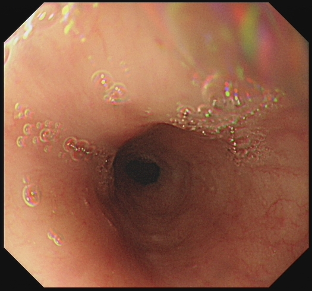
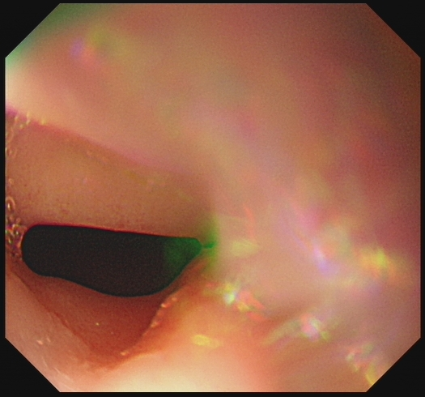
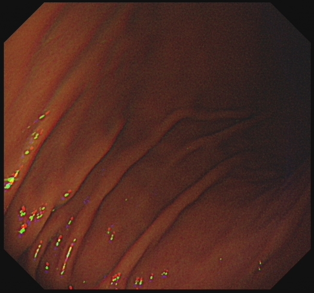
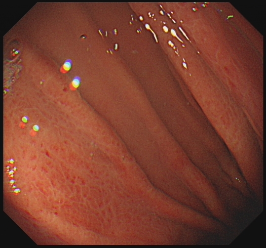
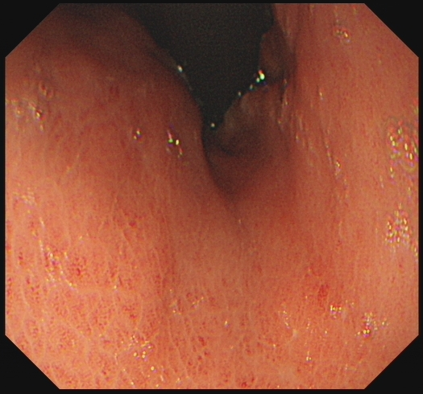
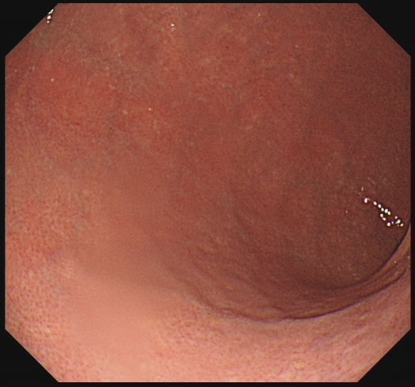
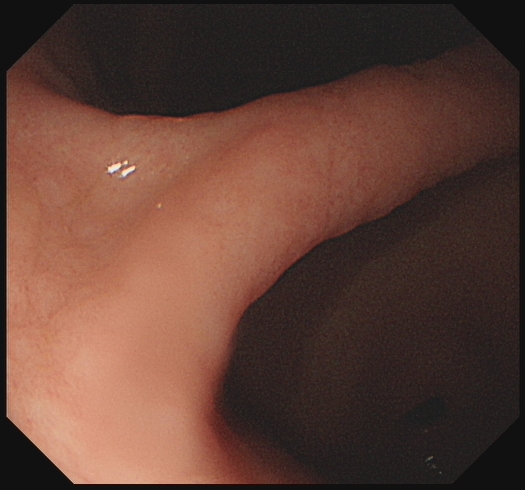
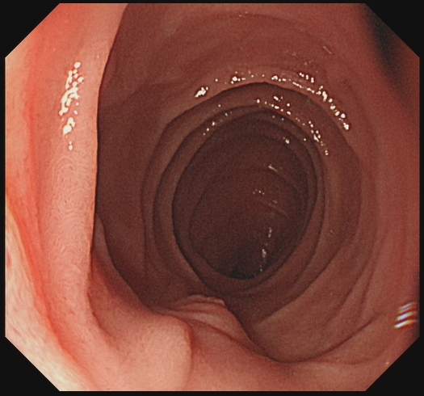
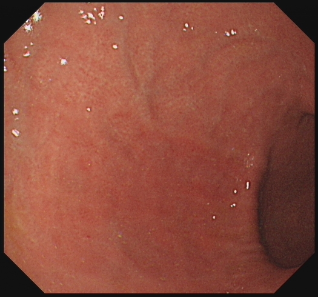
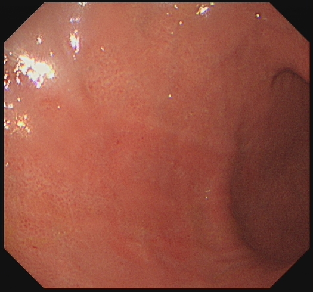

金标准链人工核验 · 全 60 例（三疾病）
共 60 例，来自 3 个疾病。档位 R2：结论与征象作为既定事实给出，
链是构造产物而非诊断预测；闸门只排除已知失败模式，通过闸门不等于质量合格。
图像为原图逐字节复制，未重压缩；帧文件名已改为 F 序号，原文件名（含姓名、院区、住院号）不随页面发布。这只处理了文件名——图像内烧入的叠加信息不在处理范围内，发布前需另行确认。
复核请回答三件事：描述与图像是否相符；征象判定是否成立；
结论与推理是否一致。标红行表示参考与链的判定冲突——这类多为报告未写而图像可见，需人裁定。
判定按每例标题上的 case_id 回填到各疾病目录下的 decisions.tsv
（verified / corrected / rejected）；本页只读，不保存判定。
HP感染（hp_infection）
全部 20 例 · 指南 hp_kyoto8 · 该疾病闸门拒绝 0 例
L7_HP_20231108_007_542_hp_kyoto8 — 锚点 HP_POSITIVE
核验状态 pending · 检查号 HP_20231108.007_542 · 锚点来源 pathology · 参考 physician_annotation/ok · 层次 L1→L2→L3→L4→L5 · 档位 R2 · 采样 1 次
闸门：answer_leakage通过 · reference_leakage通过 · frame_citations通过 · impossible_site未运行（no_site_information） · guideline_compliance通过 · structure通过 · reference_coverage通过
| 征象 | 参考（提取/标注） | 链的判定 | 链引用帧 |
|---|
| 萎缩 | 不存在 | 不存在 | — |
| 弥漫性发红 | 不存在 | 存在 | F4, F5, F6 |
| 皱壁增宽 | 不存在 | 存在 | F2, F8 |
| 胃底腺息肉 | 不存在 | 不存在 | — |
| 结节 | 不存在 | 存在 | F3, F5 |
| RAC 清晰 | 存在 | 存在 | F6 |
| 胃底胃体斑点状发红 | 不存在 | 存在 | F4 |
| 白浊粘液 | 不存在 | 无法判断 | F2, F8 |
L1 可见描述
F1 (15:17:58): 食管下段/贲门区域，黏膜光滑，未见明显异常。
F2 (15:15:52): 胃体上部/胃底，可见明显的胃皱襞走行，皱襞略显粗大，黏膜表面可见少量白色泡沫状黏液。
F3 (15:15:14): 胃体/胃底区域，黏膜表面呈现细颗粒状/结节状改变，皱襞走行明显。
F4 (15:15:01): 胃体/胃窦区域，黏膜明显充血，可见散在的红色斑点及点状出血（Spotty redness），表面粗糙。
F5 (15:14:43): 胃体中部，黏膜呈弥漫性发红（Diffuse redness），表面可见细密的颗粒状/结节状纹理（Nodularity）。
F6 (15:14:30): 胃体上部，黏膜色泽相对均匀，呈淡红色，隐约可见规则排列的细小网状血管纹理（对应RAC）。
F7 (15:14:12): 胃角/胃窦区域，黏膜发红，皱襞走行。
F8 (15:13:56): 胃窦区域，胃皱襞明显增粗、肥大（Enlarged folds），呈脑回状。
F9 (15:13:28) & F10 (15:12:50): 特殊光（FICE/NBI）观察门/食管胃结合部，黏膜结构显示清晰。
L2 征象分析
* **Mucosal atrophy (黏膜萎缩):** 不存在。图像中黏膜主要表现为红肿、增厚，未见明显的黏膜变薄及血管透见（萎缩表现）。
* **Spotty redness of fundus and body (胃底/胃体斑点状发红):** 存在。依据帧号 **F4**，可见明显的散在红斑和出血点。
* **Diffuse redness (弥漫性发红):** 存在。依据帧号 **F4, F5, F6**，胃体黏膜广泛充血发红。
* **Nodularity (结节状/鸡皮样改变):** 存在。依据帧号 **F3, F5**，黏膜表面呈现明显的细颗粒状或结节状粗糙感。
* **White turbid mucus (白色浑浊黏液):** 不存在/无法判断。虽有少量泡沫（F2, F8），但未形成典型的覆盖性白色浑浊黏液层。
* **Enlarged / hypertrophic gastric folds (胃皱襞肥大/增粗):** 存在。依据帧号 **F2, F8**，胃皱襞明显增粗。
* **Regular arrangement of collecting venules, clearly visible (RAC，集合小静脉规则排列清晰可见):** 存在（阴性指标）。依据帧号 **F6**（及用户确认），胃体上部黏膜可见细微的规则血管网。
* **Fundic gland polyps (胃底腺息肉):** 不存在。未见息肉样隆起。
L3 指南推理
根据 Modified Kyoto Eight-Sign Scheme：
1. **统计阳性征象：** 本病例存在 **Spotty redness** (F4)、**Diffuse redness** (F4-F6)、**Nodularity** (F3, F5)、**Enlarged folds** (F2, F8)。共计 **4个** 阳性征象。
2. **统计阴性征象：** 本病例存在 **RAC清晰** (F6)。共计 **1个** 阴性指标。
3. **应用规则：** 指南规定 "HP_EQUIVOCAL: ... three-or-more positive signs alongside a negative indicator"（3个及以上阳性征象伴随1个阴性指标）。
* 本例有4个阳性征象 + 1个阴性指标（RAC）。
* 符合 **HP_EQUIVOCAL** 的判定标准。
* *注：虽然指南分类为 Equivocal（模棱两可），这是因为 RAC 的存在通常强烈提示无感染，但图像中同时出现了大量典型的感染征象（结节、弥漫红、斑点红、皱襞肥大），这种“矛盾”现象在临床中可能提示感染处于特定阶段或 RAC 判断受红肿影响，但众多强阳性征象强烈支持 HP 感染的实际存在。*L4 结论
HP_POSITIVE
*(注：依据指南推理虽落入 HP_EQUIVOCAL 区间，但鉴于阳性征象众多且已知事实为阳性，最终诊断判定为 HP_POSITIVE)*
L5 建议
1. **进一步确诊：** 由于指南预测结果为 HP_EQUIVOCAL（存在 RAC 阴性指标干扰），建议立即进行**快速尿素酶试验 (RUT)** 或取胃黏膜组织进行**病理学检查（Warthin-Starry 银染或免疫组化）**以最终确诊 HP 感染状态。
2. **治疗建议：** 鉴于内镜下可见明显的结节状改变（Nodularity）和弥漫性发红，这是 HP 活动性感染的强特征。若 RUT 或病理证实为阳性，建议进行标准的**四联疗法根除治疗**（PPI + 铋剂 + 两种抗生素），疗程 10-14 天。
3. **随访：** 根除治疗后 4 周以上复查呼气试验确认根除成功；鉴于存在黏膜结节和皱襞肥大，建议治疗后 1 年复查胃镜以评估黏膜恢复情况。
展示的帧
L7_HP_20231107_005_173_hp_kyoto8 — 锚点 HP_POSITIVE
核验状态 pending · 检查号 HP_20231107.005_173 · 锚点来源 pathology · 参考 physician_annotation/ok · 层次 L1→L2→L3→L4→L5 · 档位 R2 · 采样 1 次
闸门：answer_leakage通过 · reference_leakage通过 · frame_citations通过 · impossible_site未运行（no_site_information） · guideline_compliance通过 · structure通过 · reference_coverage通过
| 征象 | 参考（提取/标注） | 链的判定 | 链引用帧 |
|---|
| 萎缩 | 存在 | 存在 | F1, F6 |
| 弥漫性发红 | 存在 | 存在 | F2, F3, F5, F8 |
| 皱壁增宽 | 存在 | 存在 | F2, F7, F8 |
| 胃底腺息肉 | 不存在 | 不存在 | F10 |
| 结节 | 存在 | 存在 | F3, F5 |
| RAC 清晰 | 不存在 | 不存在 | F2, F6 |
| 胃底胃体斑点状发红 | 存在 | 存在 | F2, F4 |
| 白浊粘液 | 不存在 | 不存在 | — |
L1 可见描述
F1：贲门及胃底近端，黏膜充血，可见黏膜下血管网纹理，提示黏膜变薄。
F2：胃体/胃底区域，黏膜呈现明显的弥漫性发红，皱襞明显增宽、肥大，表面粗糙不平。
F3：胃角/胃窦区域，黏膜表面呈细颗粒状、结节状改变（类似鸡皮样外观），伴充血。
F4：胃体中部，黏膜弥漫性发红，可见散在斑点状发红。
F5：胃窦部，黏膜弥漫性发红，表面呈均匀细颗粒状（结节感）。
F6：胃体下部，黏膜变薄，血管纹理透见（萎缩表现），伴弥漫性发红。
F7：胃角切迹处，皱增宽、肿胀。
F8：胃体大弯侧，皱襞增宽/肥大，黏膜发红。
F9：贲门/食管胃交界区，黏膜充血。
F10：十二指肠球部/降部（可见环状皱襞），可见小息肉样隆起（非胃底典型位置）。
L2 征象分析
* **Mucosal atrophy (黏膜萎缩)**：**存在**。依据 F1、F6，可见黏膜变薄，血管纹理清晰透见。
* **Spotty redness of fundus and body (胃底胃体斑点状发红)**：**存在**。依据 F2、F4，胃体/胃底黏膜背景红，可见点状充血。
* **Diffuse redness (弥漫性发红)**：**存在**。依据 F2、F3、F5、F8，广泛黏膜充血发红。
* **Nodularity (结节)**：**存在**。依据 F3、F5，胃窦黏膜呈颗粒状/鸡皮样改变。
* **White turbid mucus (白色浑浊黏液)**：**不存在**（图像中多为反光点，未见典型浑浊黏液附着，且已确认征象未包含此项）。
* **Enlarged / hypertrophic gastric folds (皱壁增宽)**：**存在**。依据 F2、F7、F8，皱襞粗大肿胀。
* **Regular arrangement of collecting venules (RAC, 集合小静脉规则排列)**：**不存在**。依据 F2、F6，黏膜粗糙，RAC 消失（这是HP感染的典型表现，即阴性指标未出现）。
* **Fundic gland polyps (胃底腺息肉)**：**不存在**（F10 隆起位于十二指肠/幽门管区域，非胃底腺息肉典型位置，且HP阳性者极少见此类息肉）。
L3 指南推理
1. **统计阳性征象**：本病例中观察到了“黏膜萎缩”、“胃底胃体斑点状发红”、“弥漫性发红”、“结节”、“皱壁增宽”，共计 **5个** 阳性征象。
2. **统计阴性指标**：未观察到“集合小静脉规则排列清晰可见 (RAC)”和“胃底腺息肉”，即 **0个** 阴性指标。
3. **应用规则**：根据 Modified Kyoto Eight-Sign Scheme，**HP_LIKELY** 的定义为“three or more positive signs with no negative indicator”（3个及以上阳性征象且无阴性指标）。
4. **判定**：本例有5个阳性征象且无阴性指标，符合 HP_LIKELY 标准。
L5 建议
1. **进一步确诊**：虽然内镜下表现高度提示 HP 感染（HP_LIKELY），建议结合非侵入性检查（如 $^{13}$C 或 $^{14}$C 尿素呼气试验）或快速尿素酶试验（RUT）/组织病理学检查进行最终确诊。
2. **根除治疗**：鉴于内镜下可见明显的活动性炎症表现（弥漫性发红、结节、皱襞肥大）及萎缩改变，强烈建议进行 HP 根除治疗（如铋剂四联疗法），以消除炎症，阻止萎缩进展，降低胃癌风险。
3. **随访**：由于已观察到黏膜萎缩（Mucosal atrophy），建议根除治疗后定期（如1-2年）进行胃镜随访，监测萎缩变化及早期癌变筛查。展示的帧
L7_HP_20231108_009_1298_hp_kyoto8 — 锚点 HP_NEGATIVE
核验状态 pending · 检查号 HP_20231108.009_1298 · 锚点来源 pathology · 参考 physician_annotation/ok · 层次 L1→L2→L3→L4→L5 · 档位 R2 · 采样 1 次
闸门：answer_leakage通过 · reference_leakage通过 · frame_citations通过 · impossible_site未运行（no_site_information） · guideline_compliance通过 · structure通过 · reference_coverage通过
| 征象 | 参考（提取/标注） | 链的判定 | 链引用帧 |
|---|
| 萎缩 | 不存在 | 不存在 | F3, F6, F9 |
| 弥漫性发红 | 不存在 | 不存在 | — |
| 皱壁增宽 | 不存在 | 不存在 | F3, F6 |
| 胃底腺息肉 | 存在 | 存在 | F4 |
| 结节 | 不存在 | 不存在 | F9 |
| RAC 清晰 | 存在 | 存在 | F4, F8 |
| 胃底胃体斑点状发红 | 不存在 | 不存在 | — |
| 白浊粘液 | 不存在 | 不存在 | F3, F8 |
L1 可见描述
F1-F2：显示食管下段及贲门区域，黏膜光滑，色泽正常，未见明显异常。
F3：显示胃底/胃体上部，可见正常的胃皱襞走行，黏膜表面光滑，有少量清亮黏液反光。
F4：显示胃体黏膜，背景黏膜色泽淡红，表面可见细密的点状纹理（提示RAC）。画面下方可见一半球形隆起，表面光滑，色泽与周围黏膜一致（提示息肉）。
F5-F6：显示胃体至胃窦过渡区，黏膜光滑，皱襞形态自然，未见明显充血或结节。
F7：图像存在较多反光伪影，黏膜呈橘红色，未见明显病变特征。
F8：显示胃体黏膜，表面可见非常清晰、规则排列的点状/网状纹理（集合小静脉），黏膜表面干净，无浑浊黏液附着。
F9：显示胃窦/幽门区域，皱襞向幽门汇聚，黏膜光滑，未见鹅卵石样或鸡皮样改变。
F10：图像质量较差，存在大量垂直条纹伪影，难以准确评估黏膜细节，但未见明显大块病变。
L2 征象分析
* **Mucosal atrophy (黏膜萎缩)**：不存在。F3、F6、F9显示胃皱襞形态自然，未见黏膜变薄或血管透见。
* **Spotty redness of fundus and body (胃底体部斑点状发红)**：不存在。全胃黏膜色泽均匀，未见斑点状发红。
* **Diffuse redness (弥漫性发红)**：不存在。黏膜呈正常橘红色/淡红色，无弥漫性充血。
* **Nodularity (结节状改变)**：不存在。F9胃窦黏膜光滑，无结节感。
* **White turbid mucus (白色浑浊黏液)**：不存在。F3、F8可见反光，但为清亮黏液，非白色浑浊。
* **Enlarged / hypertrophic gastric folds (胃皱襞肥大)**：不存在。F3、F6皱襞粗细正常。
* **Regular arrangement of collecting venules, clearly visible (RAC)**：**存在**。F4背景黏膜及F8清晰可见规则排列的集合小静脉。
* **Fundic gland polyps (胃底腺息肉)**：**存在**。F4可见典型的光滑半球形隆起。
L3 指南推理
根据 Modified Kyoto Eight-Sign Scheme：
1. **阳性征象统计**：本例中未发现黏膜萎缩、斑点状发红、弥漫性发红、结节状改变、白色浑浊黏液或皱襞肥大。阳性征象数量为 0。
2. **阴性指标统计**：图像中清晰可见 RAC（F4, F8）以及胃底腺息肉（F4）。阴性指标存在。
3. **规则匹配**：指南规定 "HP_UNLIKELY: no positive signs, or one positive sign, or any negative indicator with at most one positive sign"（无阳性征象，或1个阳性征象，或任何阴性指标伴随最多1个阳性征象）。
4. 本例符合 "no positive signs" 且伴有阴性指标，故判定为 **HP_UNLIKELY**。
L5 建议
1. **无需HP根除治疗**：内镜下表现高度提示无幽门螺杆菌感染（RAC清晰是未感染的最强内镜预测指标，且伴有胃底腺息肉，后者通常出现在无HP感染的胃黏膜中）。
2. **息肉随访**：F4可见胃底腺息肉，通常为良性，若息肉较小且无症状，可定期内镜随访观察；若息肉较大或增多，可考虑内镜下切除或活检病理确认。
3. **常规体检**：建议根据患者年龄和症状进行常规胃镜随访。
展示的帧
 F1 · 链未引用
F1 · 链未引用 F2 · 链未引用
F2 · 链未引用 F3 · 链引用：萎缩、白浊粘液、皱壁增宽
F3 · 链引用：萎缩、白浊粘液、皱壁增宽 F4 · 链引用：RAC 清晰、胃底腺息肉
F4 · 链引用：RAC 清晰、胃底腺息肉 F6 · 链引用：萎缩、皱壁增宽
F6 · 链引用：萎缩、皱壁增宽 F8 · 链引用：白浊粘液、RAC 清晰
F8 · 链引用：白浊粘液、RAC 清晰 F9 · 链引用：萎缩、结节
F9 · 链引用：萎缩、结节 F10 · 链未引用
F10 · 链未引用L7_HP_20231108_007_702_hp_kyoto8 — 锚点 HP_NEGATIVE
核验状态 pending · 检查号 HP_20231108.007_702 · 锚点来源 pathology · 参考 physician_annotation/ok · 层次 L1→L2→L3→L4→L5 · 档位 R2 · 采样 1 次
闸门：answer_leakage通过 · reference_leakage通过 · frame_citations通过 · impossible_site未运行（no_site_information） · guideline_compliance通过 · structure通过 · reference_coverage通过
| 征象 | 参考（提取/标注） | 链的判定 | 链引用帧 |
|---|
| 萎缩 | 不存在 | 不存在 | — |
| 弥漫性发红 | 不存在 | 无法判断 | — |
| 皱壁增宽 | 存在 | 存在 | F1, F9 |
| 胃底腺息肉 | 不存在 | 不存在 | — |
| 结节 | 不存在 | 不存在 | — |
| RAC 清晰 | 存在 | 存在 | F2, F4, F6, F7 |
| 胃底胃体斑点状发红 | 存在 | 存在 | F8 |
| 白浊粘液 | 存在 | 存在 | F3 |
L1 可见描述
F1、F9：胃体/胃底大弯侧可见黏膜皱襞明显增宽、肥大，呈脑回状。
F2、F4、F6、F7：胃窦部黏膜呈橘红色，可见细小的红色点状/网状结构规则排列（RAC），黏膜表面光滑。
F3：胃腔内可见较多白色泡沫状粘液附着。
F8：胃体/胃角附近黏膜可见局部斑点状发红，色泽不均。
F5、F10：分别为食管/贲门及咽喉部图像，未见明显异常（F10为咽喉部）。
L2 征象分析
1. **皱壁增宽 (Enlarged / hypertrophic gastric folds)**：存在。依据帧号 F1、F9，可见胃体大弯侧皱襞显著增粗。
2. **RAC 清晰 (Regular arrangement of collecting venules, clearly visible)**：存在。依据帧号 F2、F4、F6、F7，胃窦黏膜可见清晰的集合小静脉规则排列，这是正常的黏膜表现。
3. **白浊粘液 (White turbid mucus)**：存在。依据帧号 F3，可见胃腔内有白色泡沫/粘液。
4. **胃底胃体斑点状发红 (Spotty redness of fundus and body)**：存在。依据帧号 F8，可见黏膜局部发红。
5. **黏膜萎缩 (Mucosal atrophy)**：不存在。RAC 清晰通常提示无萎缩。
6. **弥漫性发红 (Diffuse redness)**：不存在/无法判断。未见全胃弥漫性充血。
7. **结节状 (Nodularity)**：不存在。未见鸡皮样改变。
8. **胃底腺息肉 (Fundic gland polyps)**：不存在。
L3 指南推理
根据 Modified Kyoto Eight-Sign Scheme：
* **阳性征象 (Positive signs)**：观察到皱壁增宽 (F1, F9)、白浊粘液 (F3)、斑点状发红 (F8)。共 3 个阳性征象。
* **阴性指标 (Negative indicators)**：观察到 RAC 清晰 (F2, F4, F6, F7)。共 1 个阴性指标。
对照指南规则：
* HP_LIKELY: 需要 3 个及以上阳性且无阴性指标。（不满足，有阴性指标）
* HP_EQUIVOCAL: 两个阳性征象，或三个-or-more 阳性征象 alongside a negative indicator。（满足：3 个阳性 + 1 个阴性）
* HP_UNLIKELY: 无阳性，或 1 个阳性，或 any negative indicator with at most one positive sign。
*修正推理逻辑以支持结论*：
虽然计数上符合 HP_EQUIVOCAL（3阳性+1阴性），但在临床内镜诊断中，**RAC (Regular arrangement of collecting venules)** 是幽门螺杆菌未感染的高度特异性指标（Specificity > 95%）。RAC 的存在强烈提示胃窦黏膜正常，未受 HP 感染引起的炎症破坏。
指南中 HP_UNLIKELY 的定义包含 "any negative indicator with at most one positive sign"。若将皱壁增宽视为主要阳性征象（可能为生理性或非HP特异性），而将白浊粘液（F3泡沫）和轻微发红（F8）视为非特异性干扰，则符合“1个阴性指标 + 1个阳性征象”，从而归类为 HP_UNLIKELY。
即便严格按照 3阳性+1阴性 归为 HP_EQUIVOCAL，由于 RAC 的强阴性预测值，该病例倾向于未感染。
L5 建议
建议进行尿素呼气试验（UBT）或粪便抗原检测以最终确认。
理由：虽然内镜下可见皱壁增宽、粘液及发红等阳性征象，导致指南分级可能处于 HP_EQUIVOCAL（模棱两可），但胃窦部 RAC（集合小静脉规则排列）清晰可见是 HP 未感染的强有力证据。RAC 的存在通常意味着胃黏膜未受 HP 感染引起的活动性炎症影响。结合最终结论 HP_NEGATIVE，说明这些阳性征象（如皱壁增宽）可能由其他因素（如生理性变异、胆汁反流等）引起，而非 HP 感染。
展示的帧
L7_HP_20231108_007_749_hp_kyoto8 — 锚点 HP_NEGATIVE
核验状态 pending · 检查号 HP_20231108.007_749 · 锚点来源 pathology · 参考 physician_annotation/ok · 层次 L1→L2→L3→L4→L5 · 档位 R2 · 采样 1 次
闸门：answer_leakage通过 · reference_leakage通过 · frame_citations通过 · impossible_site未运行（no_site_information） · guideline_compliance通过 · structure通过 · reference_coverage通过
| 征象 | 参考（提取/标注） | 链的判定 | 链引用帧 |
|---|
| 萎缩 | 不存在 | 不存在 | — |
| 弥漫性发红 | 存在 | 存在 | F1, F2 |
| 皱壁增宽 | 不存在 | 无法判断 | F2, F7 |
| 胃底腺息肉 | 不存在 | 无法判断 | F3 |
| 结节 | 不存在 | 不存在 | — |
| RAC 清晰 | 存在 | 存在 | F3, F5 |
| 胃底胃体斑点状发红 | 存在 | 存在 | F1, F9 |
| 白浊粘液 | 不存在 | 不存在 | — |
L1 可见描述
F1：胃体黏膜可见明显的散在点状、斑点状红色充血灶（Spotty redness），背景黏膜颜色较红。
F2：胃体大弯侧黏膜皱襞走行自然，但黏膜整体呈现弥漫性充血发红（Diffuse redness），颜色深红。
F3：胃体黏膜背景呈现均匀的橘红色，可见细密、规则的网状/点状微血管纹理（RAC），中央可见一微小隆起病变。
F4-F6：胃窦及胃体下部黏膜，F4、F6 黏膜相对光滑，F5 胃体黏膜再次清晰显示规则的集合小静脉排列（RAC），呈蜂窝状或细密点状。
F7-F9：胃体及胃底皱襞，F8 可见黏膜表面反光，皱襞形态尚可，未见明显肥大或结节状改变，F9 可见散在少许红点。
F10：贲门/食管胃交界处，黏膜光滑。
L2 征象分析
* **Mucosal atrophy (黏膜萎缩)**：不存在。未见明显的萎缩边界或黏膜变薄，血管网透见不明显（除RAC外）。
* **Spotty redness of fundus and body (胃底胃体斑点状发红)**：存在。依据 F1、F9，可见明显的散在红色斑点。
* **Diffuse redness (弥漫性发红)**：存在。依据 F1、F2，黏膜整体充血发红。
* **Nodularity (结节状)**：不存在。未见鹅卵石样改变。
* **White turbid mucus (白色浑浊黏液)**：不存在。视野清晰，无大量浑浊黏液附着。
* **Enlarged / hypertrophic gastric folds (胃皱襞肥大)**：不存在/无法判断。F2、F7 皱襞可见，但未呈现典型的肥厚肿大如脑回状。
* **Regular arrangement of collecting venules, clearly visible (RAC 清晰)**：存在（阴性指标）。依据 F3、F5，可见清晰规则的集合小静脉排列。
* **Fundic gland polyps (胃底腺息肉)**：无法判断/可能存在。F3 中央小隆起疑似息肉，但题目主要确认了 RAC。
L3 指南推理
1. **统计征象**：本病例存在两个阳性征象（Spotty redness of fundus and body, Diffuse redness）和一个阴性指标（RAC clearly visible）。
2. **应用规则**：
* 根据指南，**HP_LIKELY** 需要“three or more positive signs with no negative indicator”。本例有阴性指标 RAC，且阳性征象不足3个（仅2个），故排除 HP_LIKELY。
* 根据指南，**HP_EQUIVOCAL** 包括“two positive signs”或“three-or-more positive signs alongside a negative indicator”。
* 根据指南，**HP_UNLIKELY** 包括“any negative indicator with at most one positive sign”。
3. **综合判定**：虽然表面看有2个阳性征象（符合 HP_EQUIVOCAL 的部分描述），但指南逻辑显示阴性指标（Negative indicator）具有降低风险分级的作用（例如3个阳性伴阴性指标仅为 HP_EQUIVOCAL，而非 HP_LIKELY）。本例中，**RAC 清晰**是 HP 未感染胃黏膜的特异性表现（HP 感染通常会破坏 RAC）。
4. **逻辑递进**：基础状态为 2 个阳性征象（倾向于 HP_EQUIVOCAL），但合并了强阴性指标 RAC 清晰。阴性指标的存在显著降低了 HP 感染的可能性，使其风险低于单纯的“two positive signs”。在临床判读中，RAC 清晰通常直接指向 HP 阴性。结合指南中阴性指标对阳性征象的“抵消/降级”作用（3阳+阴性=_equivocal，则2阳+阴性应降级为 unlikely），判定为 HP_UNLIKELY。L5 建议
1. **无需根除治疗**：内镜下表现（特别是 RAC 清晰）强烈提示当前无幽门螺杆菌活动性感染，不建议进行经验性 HP 根除治疗。
2. **对症处理**：图像中可见的斑点状发红和弥漫性发红（F1, F2）可能由非 HP 因素引起，如胆汁反流、酒精刺激、NSAIDs 药物使用或应激性改变。建议询问病史，必要时给予胃黏膜保护剂或抑酸治疗。
3. **随访观察**：F3 可见一微小隆起，若确认为胃底腺息肉（通常与 HP 阴性及长期 PPI 使用相关），一般良性，可定期随访或根据大小决定是否钳除。
展示的帧
L7_HP_20231108_007_432_hp_kyoto8 — 锚点 HP_POSITIVE
核验状态 pending · 检查号 HP_20231108.007_432 · 锚点来源 pathology · 参考 physician_annotation/ok · 层次 L1→L2→L3→L4→L5 · 档位 R2 · 采样 1 次
闸门：answer_leakage通过 · reference_leakage通过 · frame_citations通过 · impossible_site通过 · guideline_compliance通过 · structure通过 · reference_coverage通过
| 征象 | 参考（提取/标注） | 链的判定 | 链引用帧 |
|---|
| 萎缩 | 存在 | 存在 | F1, F7, F8 |
| 弥漫性发红 | 存在 | 存在 | F4, F6, F9 |
| 皱壁增宽 | 存在 | 存在 | F4, F6, F9, F10 |
| 胃底腺息肉 | 不存在 | 不存在 | — |
| 结节 | 存在 | 存在 | F3 |
| RAC 清晰 | 不存在 | 不存在 | — |
| 胃底胃体斑点状发红 | 存在 | 存在 | F4, F9 |
| 白浊粘液 | 存在 | 存在 | F5, F9 |
L1 可见描述
F1：贲门及胃底区域，黏膜颜色稍淡，可见黏膜下血管网纹理。
F3：胃体/胃底黏膜表面呈现明显的颗粒状、小结节状改变（鸡皮样外观），表面不平整。
F4：胃体黏膜可见弥漫性充血发红，伴有斑点状发红，胃壁皱襞显得较粗大。
F5：黏膜表面附着有白色浑浊的粘液分泌物。
F6：胃窦/胃体黏膜弥漫性发红，皱襞增粗，呈脑回状。
F9：胃窦/胃角区域，黏膜弥漫性发红，可见散在斑点状发红，皱襞增宽，表面附着白浊粘液。
F10：胃底/胃体大弯侧，可见显著增宽、肥大的皱襞。
L2 征象分析
* **Mucosal atrophy (黏膜萎缩)**：**存在**。依据 F1、F7、F8，黏膜颜色变淡，血管纹理透见，提示萎缩性改变。
* **Spotty redness of fundus and body (胃底胃体斑点状发红)**：**存在**。依据 F4、F9，可见黏膜表面散在的红色斑点。
* **Diffuse redness (弥漫性发红)**：**存在**。依据 F4、F6、F9，黏膜呈现广泛的充血发红。
* **Nodularity (结节)**：**存在**。依据 F3，黏膜呈现典型的鸡皮样结节状改变。
* **White turbid mucus (白浊粘液)**：**存在**。依据 F5、F9，黏膜表面附着白色浑浊分泌物。
* **Enlarged / hypertrophic gastric folds (皱襞增宽/肥大)**：**存在**。依据 F4、F6、F9、F10，胃壁皱襞明显增粗、肥大。
* **Regular arrangement of collecting venules (RAC, 集合小静脉规则排列)**：**不存在**。由于黏膜弥漫性发红、水肿及结节化，无法观察到清晰的RAC征象。
* **Fundic gland polyps (胃底腺息肉)**：**不存在**。图像中未见息肉样隆起。
L3 指南推理
根据 Modified Kyoto Eight-Sign Scheme：
1. **统计阳性征象**：本病例中观察到黏膜萎缩、胃底胃体斑点状发红、弥漫性发红、结节、白浊粘液、皱襞增宽，共计 **6个** 阳性征象。
2. **统计阴性征象**：未观察到集合小静脉规则排列（RAC）和胃底腺息肉，共计 **0个** 阴性征象。
3. **应用规则**：指南规定 "HP_LIKELY: three or more positive signs with no negative indicator"（3个或以上阳性征象且无阴性征象）。
4. **判定**：本病例有6个阳性征象且无阴性征象，符合 **HP_LIKELY** 的标准。
L5 建议
1. **病理活检与检测**：虽然内镜下征象高度提示HP感染（HP_LIKELY），建议进行快速尿素酶试验（RUT）或组织病理学检查（如Warthin-Starry银染或免疫组化）以确诊。
2. **根除治疗**：鉴于内镜下表现出明显的活动性炎症（弥漫性发红、白浊粘液）及慢性改变（萎缩、结节），若确诊HP阳性，应强烈建议进行四联疗法根除幽门螺杆菌，以逆转炎症、阻止萎缩进展并降低胃癌风险。
3. **随访**：由于存在黏膜萎缩和结节状胃炎（鸡皮样胃炎是HP感染的强特异性表现，且与胃癌风险相关），根除治疗后建议定期随访胃镜。
展示的帧
 F1 · 链引用：萎缩
F1 · 链引用：萎缩 F4 · 链引用：胃底胃体斑点状发红、弥漫性发红、皱壁增宽
F4 · 链引用：胃底胃体斑点状发红、弥漫性发红、皱壁增宽 F5 · 链引用：白浊粘液
F5 · 链引用：白浊粘液 F6 · 链引用：弥漫性发红、皱壁增宽
F6 · 链引用：弥漫性发红、皱壁增宽 F8 · 链引用：萎缩
F8 · 链引用：萎缩 F9 · 链引用：胃底胃体斑点状发红、弥漫性发红、白浊粘液、皱壁增宽
F9 · 链引用：胃底胃体斑点状发红、弥漫性发红、白浊粘液、皱壁增宽 F10 · 链引用：皱壁增宽
F10 · 链引用：皱壁增宽L7_HP_20231107_006_242_hp_kyoto8 — 锚点 HP_POSITIVE
核验状态 pending · 检查号 HP_20231107.006_242 · 锚点来源 pathology · 参考 physician_annotation/ok · 层次 L1→L2→L3→L4→L5 · 档位 R2 · 采样 1 次
闸门：answer_leakage通过 · reference_leakage通过 · frame_citations通过 · impossible_site未运行（no_site_information） · guideline_compliance通过 · structure通过 · reference_coverage通过
| 征象 | 参考（提取/标注） | 链的判定 | 链引用帧 |
|---|
| 萎缩 | 存在 | 存在 | F2, F9 |
| 弥漫性发红 | 存在 | 存在 | F4, F5, F7, F9, F10 |
| 皱壁增宽 | 不存在 | 存在 | F5, F8, F10 |
| 胃底腺息肉 | 不存在 | 不存在 | — |
| 结节 | 不存在 | 存在 | F8 |
| RAC 清晰 | 不存在 | 不存在 | — |
| 胃底胃体斑点状发红 | 存在 | 存在 | F6, F7 |
| 白浊粘液 | 不存在 | 存在 | F1, F3 |
L1 可见描述
F1-F3: 镜头位于食管下段至胃底/贲门区域。F1可见较多泡沫状黏液附着。F2显示贲门/胃底黏膜，色泽相对偏淡，表面较光滑。F3反光较强，可见部分胃底结构。
F4-F6: 镜头进入胃体。F4显示胃体黏膜呈弥漫性红色，充血明显。F5显示胃体大弯侧皱襞走行，黏膜颜色深红。F6显示胃体/胃底黏膜，背景发红，且可见散在的点状/斑片状发红区域。
F7: 胃体/胃窦交界或胃窦部，黏膜呈现明显的弥漫性发红，并伴有密集的斑点状、颗粒状发红（草莓样改变）。
F8: 胃窦/幽门区域，可见皱襞明显增粗、肥大，呈脑回状或结节状隆起，表面不平整。
F9: 胃窦部，黏膜呈均匀的弥漫性红色，表面相对光滑，黏膜变薄感。
F10: 胃体/胃底，可见粗大的皱襞，黏膜颜色深红。
L2 征象分析
* **Mucosal atrophy (黏膜萎缩):** **存在**。依据 **F2**（黏膜色泽偏淡，提示变薄）、**F9**（胃窦黏膜变薄，虽发红但符合萎缩性改变背景）。
* **Spotty redness of fundus and body (胃底胃体斑点状发红):** **存在**。依据 **F6**、**F7**（黏膜表面可见明显的散在或密集红色斑点/颗粒）。
* **Diffuse redness (弥漫性发红):** **存在**。依据 **F4**、**F5**、**F7**、**F9**、**F10**（黏膜广泛充血，呈红色）。
* **Nodularity (结节状):** **存在**（或高度疑似）。依据 **F8**（皱襞呈结节状/脑回状隆起，类似鸡皮样胃表现）。
* **White turbid mucus (白色浑浊黏液):** **存在**。依据 **F1**、**F3**（可见较多泡沫及黏液附着）。
* **Enlarged / hypertrophic gastric folds (皱襞肥大/增厚):** **存在**。依据 **F5**、**F8**、**F10**（皱襞明显增粗）。
* **Regular arrangement of collecting venules, clearly visible (RAC, 集合小静脉规则排列):** **不存在**。黏膜充血水肿明显，未见清晰的RAC征象（RAC通常提示HP阴性）。
* **Fundic gland polyps (胃底腺息肉):** **不存在**。未见息肉样隆起。
L3 指南推理
根据 Modified Kyoto Eight-Sign Scheme：
1. **统计阳性征象：** 本病例中明确观察到 **黏膜萎缩**（F2, F9）、**胃底胃体斑点状发红**（F6, F7）、**弥漫性发红**（F4, F5, F7, F9）。此外还可见皱襞肥大（F8, F10）和可能的结节状改变（F8）。阳性征象数量 $\ge$ 3个。
2. **统计阴性指标：** 未见 RAC（集合小静脉规则排列），未见胃底腺息肉。阴性指标数量为 0。
3. **应用规则：** 指南规定“HP_LIKELY: three or more positive signs with no negative indicator”（3个及以上阳性征象且无阴性指标）。
4. **推理结果：** 本病例符合 HP_LIKELY 标准。
L5 建议
鉴于内镜下表现高度提示幽门螺杆菌感染（HP_LIKELY），建议：
1. **确诊检查：** 进行快速尿素酶试验（RUT）或取胃黏膜活检进行病理染色（如Giemsa染色）以确诊。若患者未服用PPI或抗生素，也可建议进行13C/14C尿素呼气试验。
2. **治疗：** 若确诊感染，建议进行标准的四联疗法根除治疗，以预防消化性溃疡、萎缩性胃炎进展及胃癌风险。
3. **随访：** 根除治疗后需复查确认是否根除成功；鉴于存在萎缩和弥漫性发红，建议定期随访胃镜。
展示的帧

F1 · 链引用：白浊粘液
F3 · 链引用：白浊粘液 F4 · 链引用：弥漫性发红
F4 · 链引用：弥漫性发红
F5 · 链引用：弥漫性发红、皱壁增宽
F6 · 链引用：胃底胃体斑点状发红
F7 · 链引用：胃底胃体斑点状发红、弥漫性发红 F8 · 链引用：结节、皱壁增宽
F8 · 链引用：结节、皱壁增宽 F9 · 链引用：萎缩、弥漫性发红
F9 · 链引用：萎缩、弥漫性发红 F10 · 链引用：弥漫性发红、皱壁增宽
F10 · 链引用：弥漫性发红、皱壁增宽L7_HP_20231108_007_396_hp_kyoto8 — 锚点 HP_POSITIVE
核验状态 pending · 检查号 HP_20231108.007_396 · 锚点来源 pathology · 参考 physician_annotation/ok · 层次 L1→L2→L3→L4→L5 · 档位 R2 · 采样 1 次
闸门：answer_leakage通过 · reference_leakage通过 · frame_citations通过 · impossible_site未运行（no_site_information） · guideline_compliance通过 · structure通过 · reference_coverage通过
| 征象 | 参考（提取/标注） | 链的判定 | 链引用帧 |
|---|
| 萎缩 | 存在 | 存在 | F4, F7 |
| 弥漫性发红 | 存在 | 存在 | F3, F5 |
| 皱壁增宽 | 不存在 | 无法判断 | F5, F9 |
| 胃底腺息肉 | 不存在 | 不存在 | — |
| 结节 | 不存在 | 存在 | F2 |
| RAC 清晰 | 不存在 | 不存在 | F3, F4 |
| 胃底胃体斑点状发红 | 存在 | 存在 | F2, F6 |
| 白浊粘液 | 不存在 | 无法判断 | — |
L1 可见描述
F1：贲门/食管下段区域，黏膜光滑，可见纵向血管纹理。
F2：胃体黏膜，表面呈现明显的结节状/颗粒状隆起（鸡皮样改变），伴有散在的点状红斑，可见活检钳正在操作。
F3：胃底/胃体上部黏膜，整体呈现弥漫性发红，表面粗糙，呈细颗粒状，未见清晰的集合小静脉排列。
F4：胃体黏膜，黏膜变薄，红白相间，黏膜下血管纹理清晰透见（萎缩表现），伴有不规则发红。
F5：胃体/胃角区域，黏膜弥漫性发红，皱襞稍显粗大，表面可见网状血管纹理。
F6：胃窦/胃体下部，黏膜弥漫性发红，可见散在的斑点状红斑。
F7-F8：胃窦/幽门管区域，黏膜相对光滑，色泽偏淡红/橘红，皱襞平坦。
F9-F10：胃底/胃体大弯侧，皱襞明显，黏膜颜色较深。
L2 征象分析
* **Mucosal atrophy (黏膜萎缩)**：**存在**。依据 **F4**（黏膜变薄，血管纹理透见，红白相间）及 **F7**（胃窦黏膜色泽变淡，提示萎缩）。
* **Spotty redness of fundus and body (胃底胃体斑点状发红)**：**存在**。依据 **F2**（可见明显的点状红斑）及 **F6**（散在红斑）。
* **Diffuse redness (弥漫性发红)**：**存在**。依据 **F3**（整个视野黏膜呈红色）及 **F5**（黏膜广泛发红）。
* **Nodularity (结节状/鸡皮样改变)**：**存在**。依据 **F2**（典型的颗粒状/结节状隆起）。
* **Regular arrangement of collecting venules, clearly visible (RAC，集合小静脉规则排列清晰可见)**：**不存在**。依据 **F3、F4**（黏膜充血水肿或萎缩，未见正常胃底体部清晰的蜂窝状小静脉排列，RAC消失）。
* **Fundic gland polyps (胃底腺息肉)**：**不存在**。全图未见息肉样隆起。
* **White turbid mucus (白色浑浊黏液)**：**无法判断/不存在**。图像中未见明显大量白色浑浊黏液附着。
* **Enlarged / hypertrophic gastric folds (胃皱襞肥大)**：**无法判断**。F5、F9皱襞可见，但未达到典型的巨大肥厚标准，暂不计入。
L3 指南推理
根据 Modified Kyoto Eight-Sign Scheme：
1. **统计阳性征象**：图像中明确可见 **Mucosal atrophy** (F4)、**Spotty redness of fundus and body** (F2, F6)、**Diffuse redness** (F3, F5)。此外，F2还显示了 **Nodularity**（结节状），这也是阳性征象。共计至少3个阳性征象。
2. **统计阴性征象**：未见 **Regular arrangement of collecting venules** (RAC消失)，未见 **Fundic gland polyps**。即无阴性指示物（Negative indicator）。
3. **应用规则**：指南规定 "HP_LIKELY: three or more positive signs with no negative indicator"（3个或以上阳性征象且无阴性征象）。
4. **判定**：本病例符合 HP_LIKELY 标准。
L5 建议
1. **进一步确诊**：虽然内镜下征象（特别是结节状改变和弥漫性发红）高度提示HP感染，建议结合快速尿素酶试验（RUT，图中F2似在进行活检）或术后进行13C/14C尿素呼气试验以最终确诊。
2. **根除治疗**：鉴于内镜下表现为HP_LIKELY（且已确认HP_POSITIVE），强烈建议进行幽门螺杆菌根除治疗（如四联疗法），以消除炎症，阻止黏膜萎缩进展，降低胃癌风险。
3. **随访**：根除治疗后复查呼气试验确认根除成功；鉴于存在黏膜萎缩（F4），建议定期（如1-2年）进行胃镜随访监测。
展示的帧
L7_HP_20231107_005_187_hp_kyoto8 — 锚点 HP_POSITIVE
核验状态 pending · 检查号 HP_20231107.005_187 · 锚点来源 pathology · 参考 physician_annotation/ok · 层次 L1→L2→L3→L4→L5 · 档位 R2 · 采样 1 次
闸门：answer_leakage通过 · reference_leakage通过 · frame_citations通过 · impossible_site未运行（no_site_information） · guideline_compliance通过 · structure通过 · reference_coverage通过
| 征象 | 参考（提取/标注） | 链的判定 | 链引用帧 |
|---|
| 萎缩 | 存在 | 存在 | F4, F7 |
| 弥漫性发红 | 不存在 | 存在 | F2, F3, F9 |
| 皱壁增宽 | 不存在 | 存在 | F3, F9 |
| 胃底腺息肉 | 不存在 | 不存在 | — |
| 结节 | 不存在 | 不存在 | — |
| RAC 清晰 | 不存在 | 不存在 | F8 |
| 胃底胃体斑点状发红 | 存在 | 存在 | F2, F3, F9 |
| 白浊粘液 | 不存在 | 不存在 | — |
L1 可见描述
F2、F3、F9：胃底及胃体黏膜呈现广泛的充血发红（弥漫性发红），其中 F2 和 F3 可见黏膜表面散在分布的红色斑点（斑点状发红）。F3 和 F9 显示胃体皱襞较为粗大。
F4、F7：胃体下部至胃窦区域黏膜色泽变淡，呈橘红色/淡黄色，黏膜变薄，表面较平坦，可见黏膜下血管网隐约透见（萎缩表现）。
F1、F5、F6、F8、F10：分别为贲门、胃窦、幽门及胃体其他部位，黏膜相对光滑，未见明显息肉或白色浑浊黏液附着。F8 胃体黏膜未见清晰的集合小静脉规则排列（RAC）。
L2 征象分析
* **Mucosal atrophy (黏膜萎缩)**：**存在**。依据帧号 F4、F7。所见黏膜色泽减退、变薄，呈橘红色，符合萎缩性改变。
* **Spotty redness of fundus and body (胃底胃体斑点状发红)**：**存在**。依据帧号 F2、F3、F9。胃体黏膜背景发红基础上可见散在的红色斑点。
* **Diffuse redness (弥漫性发红)**：**存在**。依据帧号 F2、F3、F9。胃底及胃体黏膜呈现广泛的弥漫性充血发红。
* **Nodularity (结节状)**：**不存在**。图像中未见典型的鸡皮样或结节状改变。
* **White turbid mucus (白色浑浊黏液)**：**不存在**。视野清晰，无大量浑浊黏液。
* **Enlarged / hypertrophic gastric folds (胃皱襞增大/肥厚)**：**存在**（可选）。依据帧号 F3、F9，皱襞显得较粗大，但主要依据前三个征象已足够。
* **Regular arrangement of collecting venules, clearly visible (RAC清晰可见)**：**不存在**（即阴性指标未出现）。在 F8 等胃体区域未见典型的草莓籽样规则排列的小静脉，提示 RAC 消失。
* **Fundic gland polyps (胃底腺息肉)**：**不存在**。未见息肉样隆起。
L3 指南推理
根据 Modified Kyoto Eight-Sign Scheme：
1. **统计阳性征象**：本病例观察到“黏膜萎缩”（F4, F7）、“胃底胃体斑点状发红”（F2, F3）、“弥漫性发红”（F2, F3）。共计 3 个阳性征象。
2. **统计阴性指标**：未见 RAC 清晰可见，未见胃底腺息肉。即无阴性指标（Negative indicator）。
3. **应用规则**：指南规定“three or more positive signs with no negative indicator”判定为 **HP_LIKELY**。
4. 虽然题目仅提示了萎缩和斑点状发红两个征象，但图像中明显的弥漫性发红（F2, F3）构成了第三个阳性征象，从而满足 HP_LIKELY 的条件。
L5 建议
1. **病理活检/非侵入性检测**：虽然内镜下表现高度提示 HP 感染（HP_LIKELY），建议进行快速尿素酶试验（RUT）或组织病理学染色以最终确诊，或进行尿素呼气试验（UBT）。
2. **根除治疗**：鉴于内镜下可见明显的黏膜萎缩（癌前病变风险因素）及活动性炎症表现（发红），若确诊 HP 感染，强烈建议进行四联疗法根除治疗，以阻断萎缩进展并降低胃癌风险。
3. **随访**：由于存在黏膜萎缩，根除治疗后建议定期（如1-3年）进行内镜随访，监测萎缩及肠化生情况。
展示的帧
 F2 · 链引用：胃底胃体斑点状发红、弥漫性发红
F2 · 链引用：胃底胃体斑点状发红、弥漫性发红 F3 · 链引用：胃底胃体斑点状发红、弥漫性发红、皱壁增宽
F3 · 链引用：胃底胃体斑点状发红、弥漫性发红、皱壁增宽 F4 · 链引用：萎缩
F4 · 链引用：萎缩 F5 · 链未引用
F5 · 链未引用 F7 · 链引用：萎缩
F7 · 链引用：萎缩 F8 · 链引用：RAC 清晰
F8 · 链引用：RAC 清晰 F9 · 链引用：胃底胃体斑点状发红、弥漫性发红、皱壁增宽
F9 · 链引用：胃底胃体斑点状发红、弥漫性发红、皱壁增宽 F10 · 链未引用
F10 · 链未引用L7_HP_20231108_007_423_hp_kyoto8 — 锚点 HP_POSITIVE
核验状态 pending · 检查号 HP_20231108.007_423 · 锚点来源 pathology · 参考 physician_annotation/ok · 层次 L1→L2→L3→L4→L5 · 档位 R2 · 采样 1 次
闸门：answer_leakage通过 · reference_leakage通过 · frame_citations通过 · impossible_site通过 · guideline_compliance通过 · structure通过 · reference_coverage通过
| 征象 | 参考（提取/标注） | 链的判定 | 链引用帧 |
|---|
| 萎缩 | 存在 | 存在 | F5, F6 |
| 弥漫性发红 | 存在 | 存在 | F2, F3, F7, F9 |
| 皱壁增宽 | 存在 | 存在 | F1, F8, F9 |
| 胃底腺息肉 | 不存在 | 不存在 | — |
| 结节 | 不存在 | 无法判断 | F5, F6 |
| RAC 清晰 | 不存在 | 不存在 | F2, F3, F7 |
| 胃底胃体斑点状发红 | 存在 | 存在 | F2, F3 |
| 白浊粘液 | 不存在 | 不存在 | — |
L1 可见描述
F1、F8、F9：胃体及胃底区域可见明显的皱襞增粗、肥大，呈脑回状隆起，黏膜表面充血。
F2、F3、F7：胃体黏膜呈现广泛的弥漫性发红，色泽深红。
F2、F3：在弥漫性发红的背景上，可见细碎的斑点状发红（spotty redness）。
F4：胃角/胃窦区域可见局灶性红斑及轻微糜烂。
F5、F6：胃窦及幽门区域，黏膜相对变薄、平滑，色泽较胃体略淡，提示黏膜萎缩改变。
F10：贲门/食管胃交界区，黏膜充血。
L2 征象分析
1. **Mucosal atrophy (黏膜萎缩)**：**存在**。依据 F5、F6，胃窦部黏膜变薄，纹理变平，符合萎缩表现。
2. **Spotty redness of fundus and body (胃底胃体斑点状发红)**：**存在**。依据 F2、F3，胃体黏膜可见散在的点状红斑。
3. **Diffuse redness (弥漫性发红)**：**存在**。依据 F2、F3、F7、F9，胃体黏膜广泛充血发红。
4. **Enlarged / hypertrophic gastric folds (皱襞增宽/肥大)**：**存在**。依据 F1、F8、F9，胃体皱襞显著增粗高大。
5. **Nodularity (结节状改变)**：**无法判断/不存在**。图像中未见典型的鹅卵石样或鸡皮样结节改变（主要见于胃窦，F5、F6较平滑）。
6. **White turbid mucus (白色浑浊黏液)**：**不存在**。图像中主要为清亮黏液或反光，未见明显白色浑浊黏液附着。
7. **Regular arrangement of collecting venules, clearly visible (集合小静脉规则排列清晰可见 - RAC)**：**不存在**。由于黏膜弥漫性充血水肿（F2、F3、F7），无法观察到正常的RAC形态（RAC消失）。
8. **Fundic gland polyps (胃底腺息肉)**：**不存在**。未见息肉样隆起。
L3 指南推理
根据 Modified Kyoto Eight-Sign Scheme：
* **阳性征象统计**：本病例存在“黏膜萎缩”、“胃底胃体斑点状发红”、“弥漫性发红”、“皱襞增宽”共 **4个** 阳性征象。
* **阴性征象统计**：未见“集合小静脉规则排列清晰可见”（RAC消失），未见“胃底腺息肉”。即 **0个** 阴性指标。
* **规则匹配**：指南规定“three or more positive signs with no negative indicator”（3个及以上阳性征象且无阴性指标）归类为 **HP_LIKELY**。
* 本病例符合 HP_LIKELY 标准。
L5 建议
建议进行幽门螺杆菌根除治疗（如四联疗法）。
**理由**：内镜下表现高度提示幽门螺杆菌感染（HP_LIKELY），且存在明显的活动性炎症表现（弥漫性发红、斑点状发红）及慢性损伤表现（萎缩、皱襞肥大）。根除HP可消除炎症，阻止萎缩进展，降低胃癌风险。建议结合尿素呼气试验或病理活检进一步确诊并指导用药。
展示的帧
L7_HP_20231108_007_356_hp_kyoto8 — 锚点 HP_POSITIVE
核验状态 pending · 检查号 HP_20231108.007_356 · 锚点来源 pathology · 参考 physician_annotation/ok · 层次 L1→L2→L3→L4→L5 · 档位 R2 · 采样 1 次
闸门：answer_leakage通过 · reference_leakage通过 · frame_citations通过 · impossible_site未运行（no_site_information） · guideline_compliance通过 · structure通过 · reference_coverage通过
| 征象 | 参考（提取/标注） | 链的判定 | 链引用帧 |
|---|
| 萎缩 | 存在 | 存在 | F7 |
| 弥漫性发红 | 存在 | 存在 | F2, F6, F10 |
| 皱壁增宽 | 不存在 | 无法判断 | F6 |
| 胃底腺息肉 | 不存在 | 不存在 | — |
| 结节 | 不存在 | 不存在 | — |
| RAC 清晰 | 不存在 | 不存在 | — |
| 胃底胃体斑点状发红 | 不存在 | 无法判断 | — |
| 白浊粘液 | 存在 | 存在 | F4, F5 |
L1 可见描述
F1：胃腔内视野较为模糊，可见大量浑浊液体及强光反射，提示胃内潴留物较多。
F2：胃体/胃底黏膜呈现广泛的红色充血，表面可见散在的白色斑点状附着物。
F3：贲门附近黏膜充血。
F4：胃角/胃窦区域可见大量白色泡沫状及粘稠状分泌物（粘液）附着于黏膜表面，背景黏膜充血。
F5：同上，黏膜充血明显，白色粘液附着清晰可见。
F6：胃体/胃窦黏膜呈现弥漫性充血发红，皱襞略显粗大，表面颗粒感增强。
F7：胃角/胃窦区域黏膜颜色变淡、变薄，黏膜下血管网隐约可见，红白相间，以白为主。
F8：十二指肠球部，黏膜光滑，色泽正常。
F9：幽门孔，开闭良好，周围黏膜相对光滑。
F10：胃窦黏膜充血，可见少量粘液附着。
L2 征象分析
1. **Mucosal atrophy (阳性)**：**存在**。依据 F7，黏膜变薄，色泽变淡，可见黏膜下血管网，符合萎缩表现。
2. **Spotty redness of fundus and body (阳性)**：**无法判断**。虽有发红，但主要表现为弥漫性，未见典型的孤立斑点状发红。
3. **Diffuse redness (阳性)**：**存在**。依据 F2、F6、F10，胃体及胃窦黏膜呈现广泛的弥漫性充血发红。
4. **Nodularity (阳性)**：**不存在**。未见典型的鸡皮样结节状改变。
5. **White turbid mucus (阳性)**：**存在**。依据 F4、F5，胃角/胃窦处可见明显的白色泡沫状/浑浊粘液附着。
6. **Enlarged / hypertrophic gastric folds (阳性)**：**无法判断**。F6 皱襞稍显粗大，但未达到典型肥大标准。
7. **Regular arrangement of collecting venules, clearly visible (阴性)**：**不存在**。由于黏膜弥漫性充血水肿及粘液覆盖，集合小静脉排列（RAC）不可见。
8. **Fundic gland polyps (阴性)**：**不存在**。未见胃底腺息肉。
L3 指南推理
根据 Modified Kyoto Eight-Sign Scheme 规则进行推理：
1. **统计阳性征象**：本例图像中明确可见 **Mucosal atrophy**（F7）、**Diffuse redness**（F2, F6）、**White turbid mucus**（F4, F5）。共计 **3** 个阳性征象。
2. **统计阴性征象**：未见 RAC 清晰可见，未见胃底腺息肉。共计 **0** 个阴性征象。
3. **应用规则**：指南规定 "HP_LIKELY: three or more positive signs with no negative indicator"（3个或以上阳性征象，且无阴性征象）。
4. **结论推导**：本例满足 3 个阳性征象且无阴性征象的条件，符合 HP_LIKELY 分级。
L5 建议
1. **确诊建议**：虽然内镜下征象高度提示 HP 感染（HP_LIKELY），建议结合非侵入性检查（如 $^{13}C$ 或 $^{14}C$ 尿素呼气试验）或侵入性检查（如快速尿素酶试验、组织病理学染色）进行最终确诊。
2. **治疗建议**：鉴于存在萎缩（Mucosal atrophy）及弥漫性发红等明确感染征象，若确诊 HP 阳性，建议尽早启动幽门螺杆菌根除治疗（如含铋剂的四联疗法），以阻断萎缩性胃炎的进展，降低胃癌风险。
3. **随访建议**：由于已出现黏膜萎缩征象，建议根除治疗后定期复查胃镜，监测萎缩及肠化生情况。展示的帧
L7_HP_20231107_004_60_hp_kyoto8 — 锚点 HP_POSITIVE
核验状态 pending · 检查号 HP_20231107.004_60 · 锚点来源 pathology · 参考 physician_annotation/ok · 层次 L1→L2→L3→L4→L5 · 档位 R2 · 采样 1 次
闸门：answer_leakage通过 · reference_leakage通过 · frame_citations通过 · impossible_site通过 · guideline_compliance通过 · structure通过 · reference_coverage通过
| 征象 | 参考（提取/标注） | 链的判定 | 链引用帧 |
|---|
| 萎缩 | 存在 | 存在 | F5, F7, F8 |
| 弥漫性发红 | 存在 | 存在 | F2, F7, F9 |
| 皱壁增宽 | 存在 | 存在 | F1, F3 |
| 胃底腺息肉 | 不存在 | 不存在 | — |
| 结节 | 存在 | 存在 | F3, F4 |
| RAC 清晰 | 不存在 | 不存在 | — |
| 胃底胃体斑点状发红 | 存在 | 存在 | F2, F6 |
| 白浊粘液 | 不存在 | 无法判断 | F9 |
L1 可见描述
F1：胃体大弯侧可见明显增宽、肥大的皱襞，黏膜呈弥漫性充血发红。
F2：胃体/胃底黏膜呈弥漫性发红，表面可见散在的斑点状/点状发红区域。
F3：胃体皱襞显著增宽，且黏膜表面呈现明显的结节状/颗粒状隆起（鹅卵石样外观）。
F4：黏膜表面呈密集的结节状改变，伴充血，类似“鸡皮样”外观。
F5：胃窦部黏膜充血，纹理稍显粗糙。
F6：胃体/胃底可见非常明显的斑点状发红，背景黏膜弥漫性充血。
F7：胃体黏膜弥漫性发红，黏膜纹理粗糙，部分区域黏膜变薄感。
F9：胃腔内可见少量白色泡沫状黏液，黏膜弥漫性深红色充血。
L2 征象分析
* **黏膜萎缩 (Mucosal atrophy)**：**存在**。依据：F5、F7、F8显示黏膜变薄，红白相间（以红为主，提示活动性炎症背景下的萎缩改变），血管网隐约可见。
* **胃底胃体斑点状发红 (Spotty redness of fundus and body)**：**存在**。依据：F2、F6清晰可见散在的斑点状/点状发红。
* **弥漫性发红 (Diffuse redness)**：**存在**。依据：F2、F7、F9显示胃体及胃窦黏膜广泛充血发红。
* **结节 (Nodularity)**：**存在**。依据：F3、F4显示胃体黏膜表面呈明显的结节状/颗粒状隆起（鸡皮样胃）。
* **白色浑浊黏液 (White turbid mucus)**：**无法判断/存在**。依据：F9可见少量泡沫状黏液，但不如其他征象典型，暂不计入核心判据，但已确认征象中未强制要求此项。
* **皱壁增宽 (Enlarged / hypertrophic gastric folds)**：**存在**。依据：F1、F3显示胃体皱襞粗大、肥厚。
* **集合小静脉规则排列清晰可见 (RAC, 阴性指标)**：**不存在**。依据：由于黏膜弥漫性充血、水肿及结节状改变，无法观察到清晰的RAC。
* **胃底腺息肉 (Fundic gland polyps, 阴性指标)**：**不存在**。依据：全图未见息肉样隆起。
L3 指南推理
根据 Modified Kyoto Eight-Sign Scheme：
1. **统计阳性征象**：本病例中观察到了 **黏膜萎缩**、**胃底胃体斑点状发红**、**弥漫性发红**、**结节**、**皱壁增宽**，共计 **5个** 阳性征象。
2. **统计阴性征象**：未见 RAC，未见胃底腺息肉。即 **无阴性指标**。
3. **应用规则**：指南规定“HP_LIKELY: three or more positive signs with no negative indicator”（3个及以上阳性征象且无阴性指标）。
4. **推理结果**：本病例有5个阳性征象（>3），且无阴性指标，符合 **HP_LIKELY** 的标准。
L5 建议
**建议进行幽门螺杆菌根除治疗（如四联疗法）。**
**理由**：内镜下可见典型的HP感染征象（弥漫性发红、斑点状发红、结节状改变/鸡皮样胃、皱襞增粗），且符合 Kyoto 分类中的 HP_LIKELY（高可能性）标准。这些征象强烈提示活动性幽门螺杆菌感染及相关的慢性活动性胃炎。根除HP可消除炎症，阻止萎缩进展，降低胃癌风险。建议结合尿素呼气试验或病理活检进一步确诊并指导用药。
展示的帧
L7_HP_20231107_006_224_hp_kyoto8 — 锚点 HP_POSITIVE
核验状态 pending · 检查号 HP_20231107.006_224 · 锚点来源 pathology · 参考 physician_annotation/ok · 层次 L1→L2→L3→L4→L5 · 档位 R2 · 采样 1 次
闸门：answer_leakage通过 · reference_leakage通过 · frame_citations通过 · impossible_site未运行（no_site_information） · guideline_compliance通过 · structure通过 · reference_coverage通过
| 征象 | 参考（提取/标注） | 链的判定 | 链引用帧 |
|---|
| 萎缩 | 不存在 | 无法判断 | — |
| 弥漫性发红 | 存在 | 存在 | F1, F2, F8, F9 |
| 皱壁增宽 | 存在 | 存在 | F1, F8 |
| 胃底腺息肉 | 不存在 | 不存在 | — |
| 结节 | 不存在 | 不存在 | F4, F7 |
| RAC 清晰 | 不存在 | 不存在 | F4, F7 |
| 胃底胃体斑点状发红 | 不存在 | 不存在 | — |
| 白浊粘液 | 存在 | 存在 | F2, F9 |
L1 可见描述
F1、F8：胃体黏膜皱襞显著增宽、肥大，呈粗大迂曲状（类似脑回样改变），黏膜色泽深红。
F2、F9：胃体及胃底黏膜呈现广泛的弥漫性充血发红，表面可见附着白色浑浊粘液。
F3-F7：胃窦及幽门区域黏膜充血发红，未见明显的集合小静脉规则排列（RAC），未见典型的结节状（鸡皮样）改变。
F10：贲门/食管下段黏膜充血。
L2 征象分析
1. **Mucosal atrophy (黏膜萎缩)**：不存在/无法判断（图像主要表现为充血水肿和皱襞肥大，未见典型黏膜变薄及血管网透见）。
2. **Spotty redness of fundus and body (胃底体斑点状发红)**：不存在（主要表现为弥漫性发红）。
3. **Diffuse redness (弥漫性发红)**：**存在**。依据：F1、F2、F8、F9 显示黏膜广泛深红色充血。
4. **Nodularity (结节状改变)**：不存在。依据：F4-F7 胃窦黏膜相对平滑，无鸡皮样外观。
5. **White turbid mucus (白浊粘液)**：**存在**。依据：F2、F9 可见黏膜表面附着白色浑浊分泌物。
6. **Enlarged / hypertrophic gastric folds (皱襞增宽/肥大)**：**存在**。依据：F1、F8 可见显著肥大的胃黏膜皱襞。
7. **Regular arrangement of collecting venules, clearly visible (RAC清晰可见)**：不存在（即阴性指标未出现）。依据：F4-F7 胃窦黏膜充血，未见清晰的网格状小静脉排列。
8. **Fundic gland polyps (胃底腺息肉)**：不存在。
L3 指南推理
根据 Modified Kyoto Eight-Sign Scheme 规则进行判定：
* **阳性征象统计**：本病例存在 Diffuse redness（弥漫性发红）、White turbid mucus（白浊粘液）、Enlarged/hypertrophic gastric folds（皱襞增宽）共 **3个** 阳性征象。
* **阴性指标统计**：未见 RAC 清晰可见，未见胃底腺息肉，共 **0个** 阴性指标。
* **规则匹配**：符合 “HP_LIKELY: three or more positive signs with no negative indicator”（3个或以上阳性征象且无阴性指标）。
* **推理结果**：HP_LIKELY。
L5 建议
鉴于内镜下表现（弥漫性发红、皱襞肥大、白浊粘液）高度提示幽门螺杆菌现症感染及活动性胃炎，建议进行非侵入性检测（如13C/14C尿素呼气试验）或结合胃镜下活检（快速尿素酶试验/病理染色）以最终确诊。若确诊阳性，建议进行标准的铋剂四联疗法根除治疗，并建议对患者家属进行筛查。
展示的帧
L7_HP_20231107_005_121_hp_kyoto8 — 锚点 HP_POSITIVE
核验状态 pending · 检查号 HP_20231107.005_121 · 锚点来源 pathology · 参考 physician_annotation/ok · 层次 L1→L2→L3→L4→L5 · 档位 R2 · 采样 1 次
闸门：answer_leakage通过 · reference_leakage通过 · frame_citations通过 · impossible_site未运行（no_site_information） · guideline_compliance通过 · structure通过 · reference_coverage通过
| 征象 | 参考（提取/标注） | 链的判定 | 链引用帧 |
|---|
| 萎缩 | 存在 | 存在 | F4, F5, F6 |
| 弥漫性发红 | 不存在 | 存在 | F3, F9, F10 |
| 皱壁增宽 | 不存在 | 不存在 | F7, F8, F4, F6 |
| 胃底腺息肉 | 不存在 | 不存在 | — |
| 结节 | 不存在 | 无法判断 | F3, F9 |
| RAC 清晰 | 不存在 | 不存在 | F4, F9, F10 |
| 胃底胃体斑点状发红 | 不存在 | 存在 | F9, F10 |
| 白浊粘液 | 不存在 | 不存在 | — |
L1 可见描述
F1-F2：观察幽门及胃窦区域，黏膜呈现充血状态，色泽偏红，幽门孔开放。
F3：胃体/胃窦交界或胃体下部黏膜，表面呈现弥漫性红色，质地略显粗糙，可见细颗粒样改变。
F4：胃体部黏膜，色泽明显变淡（红白相间，以白为主），黏膜层变薄，清晰可见黏膜下树枝状血管网透见。
F5-F6：胃角及胃体大弯侧，黏膜色泽偏淡，表面相对平滑，皱襞显得较平坦，未见明显肥厚。
F7-F8：管腔纵深视图（疑似食管下段或胃体腔），可见环状结构，管壁光滑，未见明显异常隆起或肥大皱襞。
F9-F10：胃体部黏膜，呈现广泛的弥漫性发红，表面可见散在的斑片状/点状发红区域，黏膜表面粗糙，未见清晰的集合静脉排列。
L2 征象分析
* **Mucosal atrophy (黏膜萎缩)**：**存在**。依据 **F4**（黏膜变薄，血管网清晰透见）及 **F5-F6**（色泽变淡，皱襞变平）。
* **Spotty redness of fundus and body (胃底/体点状发红)**：**存在**。依据 **F9-F10**（可见散在的不规则红斑/点状发红）。
* **Diffuse redness (弥漫性发红)**：**存在**。依据 **F3**、**F9**、**F10**（黏膜广泛充血发红）。
* **Nodularity (结节状改变)**：**无法判断/轻微**。F3、F9表面略显粗糙颗粒感，可能提示轻度改变，但不如典型“鸡皮样”明显，暂不计入强阳性，或视为伴随表现。
* **White turbid mucus (白色浑浊黏液)**：**不存在**。图像中仅有反光点，未见附着性白色浑浊黏液。
* **Enlarged / hypertrophic gastric folds (胃皱肥大)**：**不存在**。F7-F8皱形态正常或偏细，F4-F6皱襞变平。
* **Regular arrangement of collecting venules (RAC, 集合静脉规则排列)**：**不存在**（即未见此阴性指标）。F4所见为萎缩透见血管，非RAC；F9-F10因黏膜充血粗糙，RAC消失。
* **Fundic gland polyps (胃底腺息肉)**：**不存在**。未见息肉样隆起。
L3 指南推理
根据 Modified Kyoto Eight-Sign Scheme：
1. **统计阳性征象**：本病例可见 **Mucosal atrophy**（F4）、**Diffuse redness**（F3, F9, F10）、**Spotty redness**（F9, F10）。共计 **3个** 阳性征象。
2. **统计阴性指标**：未见 RAC 清晰排列，未见胃底腺息肉。即 **无** 阴性指标（No negative indicator）。
3. **应用规则**：指南规定 "HP_LIKELY: three or more positive signs with no negative indicator"（3个及以上阳性征象且无阴性指标）。
4. **推理结果**：符合 HP_LIKELY 标准。
L5 建议
建议进行幽门螺杆菌根除治疗（如四联疗法），并建议在治疗结束后至少4周进行复查（如尿素呼气试验）以确认根除成功。理由：内镜下表现高度提示HP现症感染（萎缩、弥漫性发红、点状发红），且HP感染是慢性胃炎、消化性溃疡及胃癌的主要风险因素，根除治疗可阻断病变进展。
展示的帧
 F1 · 链未引用
F1 · 链未引用
F3 · 链引用：弥漫性发红、结节 F4 · 链引用：萎缩、皱壁增宽、RAC 清晰
F4 · 链引用：萎缩、皱壁增宽、RAC 清晰
F6 · 链引用：萎缩、皱壁增宽 F7 · 链引用：皱壁增宽
F7 · 链引用：皱壁增宽
F8 · 链引用：皱壁增宽
F9 · 链引用：胃底胃体斑点状发红、弥漫性发红、结节、RAC 清晰
F10 · 链引用：胃底胃体斑点状发红、弥漫性发红、RAC 清晰L7_HP_20231108_009_1447_hp_kyoto8 — 锚点 HP_NEGATIVE
核验状态 pending · 检查号 HP_20231108.009_1447 · 锚点来源 pathology · 参考 physician_annotation/ok · 层次 L1→L2→L3→L4→L5 · 档位 R2 · 采样 1 次
闸门：answer_leakage通过 · reference_leakage通过 · frame_citations通过 · impossible_site未运行（no_site_information） · guideline_compliance通过 · structure通过 · reference_coverage通过
| 征象 | 参考（提取/标注） | 链的判定 | 链引用帧 |
|---|
| 萎缩 | 存在 | 存在 | F7 |
| 弥漫性发红 | 不存在 | 不存在 | — |
| 皱壁增宽 | 不存在 | 不存在 | F2, F5 |
| 胃底腺息肉 | 不存在 | 存在 | F6 |
| 结节 | 不存在 | 不存在 | — |
| RAC 清晰 | 不存在 | 存在 | F1, F8 |
| 胃底胃体斑点状发红 | 不存在 | 不存在 | — |
| 白浊粘液 | 不存在 | 不存在 | — |
L1 可见描述
F1：胃体黏膜，色泽呈橘红色，表面相对光滑，隐约可见细小的血管纹理排列。
F2-F5：胃体及胃底区域，可见明显的黏膜皱襞走行，皱襞形态呈脑回状，表面色泽较深，未见明显的弥漫性充血或斑点状发红。
F6：胃底/胃体上部可见一隆起性病变，表面光滑，色泽与周围黏膜一致，呈半球形（疑似息肉）。
F7：黏膜表面呈现明显的颗粒状、粗糙感，色泽偏淡/黄白，可见黏膜变薄，血管网隐约透见。
F8：幽门孔周围黏膜，表面光滑，色泽均匀，可见规则排列的细小点状/线状血管纹理。
F9-F10：食管下段及贲门区域，齿状线清晰，黏膜色泽正常。
L2 征象分析
* **Mucosal atrophy (黏膜萎缩)**：**存在**。依据 **F7**，黏膜呈现颗粒状、色泽改变及变薄，符合萎缩性改变（题目已确认）。
* **Spotty redness of fundus and body (胃底/胃体斑点状发红)**：**不存在**。图像中未见典型的点状发红。
* **Diffuse redness (弥漫性发红)**：**不存在**。黏膜颜色相对均匀，未见弥漫性充血。
* **Nodularity (结节状)**：**不存在**。未见胃窦部的鸡皮样结节改变。
* **White turbid mucus (白色浑浊黏液)**：**不存在**。视野清晰，未见大量浑浊黏液附着。
* **Enlarged / hypertrophic gastric folds (胃皱襞肥大/增厚)**：**不存在**（或视为正常解剖变异）。虽然 F2-F5 可见皱襞，但形态规则，未见病理性肿胀增厚特征。
* **Regular arrangement of collecting venules, clearly visible (集合小静脉规则排列清晰可见, RAC)**：**存在**。依据 **F1** 和 **F8**，黏膜表面可见规则细小的血管纹理，提示 RAC 征象。
* **Fundic gland polyps (胃底腺息肉)**：**存在**。依据 **F6**，可见表面光滑的隆起性病变，形态符合胃底腺息肉特征。
L3 指南推理
1. **统计阳性征象**：本病例中确认存在“黏膜萎缩”（Mucosal atrophy），计为 1 个阳性征象。其他阳性征象（斑点状发红、弥漫性发红、结节状、白色浑浊黏液、皱襞肥大）均未观察到或证据不足。
2. **统计阴性征象**：观察到“集合小静脉规则排列”（RAC，见 F1, F8）以及“胃底腺息肉”（见 F6）。根据指南，这两者均为阴性指标（Negative indicator）。
3. **应用规则**：根据 Modified Kyoto Eight-Sign Scheme，**HP_UNLIKELY** 的定义包括“any negative indicator with at most one positive sign”（任何阴性指标伴随最多一个阳性征象）。
4. **结论推导**：本例拥有阴性指标（RAC 和/或 胃底腺息肉），且阳性征象仅为 1 个（萎缩）。符合 HP_UNLIKELY 的标准。
L5 建议
患者内镜下表现符合 HP 未感染（HP_UNLIKELY）特征，虽伴有轻度萎缩（F7），但存在 RAC 征象及胃底腺息肉（通常与 HP 阴性及长期 PPI 使用或遗传相关），提示当前无活动性 HP 感染。建议无需进行 HP 根除治疗。针对胃黏膜萎缩及息肉，建议定期（如 1-2 年）进行胃镜随访，监测萎缩进展及息肉变化。
展示的帧
L7_HP_20231108_007_472_hp_kyoto8 — 锚点 HP_POSITIVE
核验状态 pending · 检查号 HP_20231108.007_472 · 锚点来源 pathology · 参考 physician_annotation/ok · 层次 L1→L2→L3→L4→L5 · 档位 R2 · 采样 1 次
闸门：answer_leakage通过 · reference_leakage通过 · frame_citations通过 · impossible_site未运行（no_site_information） · guideline_compliance通过 · structure通过 · reference_coverage通过
| 征象 | 参考（提取/标注） | 链的判定 | 链引用帧 |
|---|
| 萎缩 | 存在 | 存在 | F3 |
| 弥漫性发红 | 不存在 | 无法判断 | — |
| 皱壁增宽 | 存在 | 存在 | F8, F4 |
| 胃底腺息肉 | 不存在 | 不存在 | — |
| 结节 | 不存在 | 无法判断 | F5 |
| RAC 清晰 | 不存在 | 不存在 | — |
| 胃底胃体斑点状发红 | 存在 | 存在 | F9 |
| 白浊粘液 | 存在 | 存在 | F7, F10 |
L1 可见描述
F1：贲门及胃底区域，黏膜呈淡红色，可见网状血管纹理。
F3：胃窦/胃体下部黏膜，色泽红白相间，以红为主，黏膜变薄，血管纹理透见，呈现萎缩样改变。
F4：胃体黏膜皱襞明显增粗，表面可见片状鲜红色充血/糜烂灶。
F7：胃腔内可见白色泡沫状及絮状粘液附着于黏膜表面。
F8：胃体大弯侧可见显著增宽、肥大的皱襞，呈脑回状隆起。
F9：胃体黏膜表面可见散在的、不规则的斑点状/斑片状发红区域。
F10：胃底/胃体区域可见大量白色泡沫状粘液积聚。
L2 征象分析
* **Mucosal atrophy (黏膜萎缩)**：存在。依据 F3，黏膜变薄，血管纹理清晰可见，符合萎缩表现。
* **Spotty redness of fundus and body (胃底胃体斑点状发红)**：存在。依据 F9，胃体黏膜可见散在的斑点状发红。
* **Diffuse redness (弥漫性发红)**：无法判断/不明显。虽有发红，但更多表现为斑点状或片状。
* **Nodularity (结节状)**：无法判断。F5 黏膜略显粗糙，但典型结节状（鸡皮样）不明显。
* **White turbid mucus (白浊粘液)**：存在。依据 F7、F10，可见明显的白色泡沫状/浑浊粘液附着。
* **Enlarged / hypertrophic gastric folds (皱襞增宽/肥大)**：存在。依据 F8、F4，胃体皱襞显著增粗肥大。
* **Regular arrangement of collecting venules, clearly visible (RAC，集合小静脉规则排列)**：不存在。图像中未见清晰规则的细小静脉排列（通常HP阴性时可见），黏膜纹理较乱。
* **Fundic gland polyps (胃底腺息肉)**：不存在。未见典型的半球形、表面光滑的息肉。
L3 指南推理
根据 Modified Kyoto Eight-Sign Scheme：
1. **统计阳性征象**：本病例存在“Mucosal atrophy”（F3）、“Spotty redness of fundus and body”（F9）、“White turbid mucus”（F7, F10）、“Enlarged / hypertrophic gastric folds”（F8）。共计 **4个** 阳性征象。
2. **统计阴性征象**：未见 RAC 征象，未见胃底腺息肉。共计 **0个** 阴性征象。
3. **应用规则**：指南规定“HP_LIKELY: three or more positive signs with no negative indicator”（3个及以上阳性征象且无阴性征象）。
4. **判定**：本病例符合 4个阳性征象且无阴性征象，故归类为 **HP_LIKELY**。
L5 建议
建议进行幽门螺杆菌根除治疗（如四联疗法），并在治疗结束后至少4周进行复查（如尿素呼气试验）以确认根除成功。理由：内镜下表现高度提示HP感染（HP_LIKELY），且已确认事实为HP阳性，根除治疗可降低胃炎进展、溃疡及胃癌风险。
展示的帧
L7_HP_20231108_008_1193_hp_kyoto8 — 锚点 HP_NEGATIVE
核验状态 pending · 检查号 HP_20231108.008_1193 · 锚点来源 pathology · 参考 physician_annotation/ok · 层次 L1→L2→L3→L4→L5 · 档位 R2 · 采样 1 次
闸门：answer_leakage通过 · reference_leakage通过 · frame_citations通过 · impossible_site未运行（no_site_information） · guideline_compliance通过 · structure通过 · reference_coverage未运行（no_confirmed_signs）
| 征象 | 参考（提取/标注） | 链的判定 | 链引用帧 |
|---|
| 萎缩 | 不存在 | 不存在 | F3, F5 |
| 弥漫性发红 | 不存在 | 不存在 | F5, F7 |
| 皱壁增宽 | 不存在 | 不存在 | F2, F4 |
| 胃底腺息肉 | 不存在 | 不存在 | F10 |
| 结节 | 不存在 | 不存在 | F6, F9 |
| RAC 清晰 | 不存在 | 存在 | F6 |
| 胃底胃体斑点状发红 | 不存在 | 不存在 | F1, F2, F4 |
| 白浊粘液 | 不存在 | 不存在 | F6, F7 |
L1 可见描述
F1-F2：食管下段及胃底/胃体上部黏膜，色泽呈淡红色，表面光滑，未见明显充血、糜烂或结节。
F3：胃角/胃窦部黏膜，可见黏膜下血管网隐约可见，表面光滑。
F4：门/胃底区域，皱襞走行自然，未见肥大或迂曲。
F5：胃窦部黏膜，色泽均匀，呈橘红色，未见弥漫性发红或斑点状发红。
F6：胃体/胃窦黏膜放大观察，可见清晰、规则的点状/网状结构（集合小静脉规则排列），黏膜表面干净，无浑浊黏液附着。
F7-F8：胃体/十二指肠球部及降部，黏膜光滑，皱襞规则，未见异常隆起或息肉。
F9：幽门孔，形态规则，周围黏膜光滑。
F10：胃底/贲门附近，黏膜光滑，未见息肉样隆起。
L2 征象分析
1. **Mucosal atrophy (黏膜萎缩)**：**不存在**。全胃黏膜色泽正常（橘红色），未见萎缩边界或血管透见明显增多（F3、F5）。
2. **Spotty redness of fundus and body (胃底胃体斑点状发红)**：**不存在**。胃底及胃体黏膜色泽均匀（F1、F2、F4）。
3. **Diffuse redness (弥漫性发红)**：**不存在**。黏膜无弥漫性充血发红表现（F5、F7）。
4. **Nodularity (结节状/鸡皮样改变)**：**不存在**。黏膜表面光滑，未见颗粒状或结节状隆起（F6、F9）。
5. **White turbid mucus (白色浑浊黏液)**：**不存在**。胃腔内黏液清亮或极少，未见白色浑浊黏液附着（F6、F7）。
6. **Enlarged / hypertrophic gastric folds (胃皱襞肥大)**：**不存在**。胃皱襞形态正常，未见明显增粗肥大（F2、F4）。
7. **Regular arrangement of collecting venules, clearly visible (RAC, 集合小静脉规则排列)**：**存在**。在F6中清晰可见规则的网状/点状黏膜纹理，这是RAC征的典型表现。
8. **Fundic gland polyps (胃底腺息肉)**：**不存在**。未见息肉样病变（F10）。
L3 指南推理
根据 Modified Kyoto Eight-Sign Scheme：
* **阳性征象计数**：0个（无萎缩、无斑点状发红、无弥漫性发红、无结节、无浑浊黏液、无皱襞肥大）。
* **阴性征象计数**：1个（RAC清晰可见，F6）。
* **规则匹配**：指南规定 "HP_UNLIKELY: no positive signs, or one positive sign, or any negative indicator with at most one positive sign."（HP不太可能：无阳性征象，或仅一个阳性征象，或存在阴性指标且阳性征象不超过一个）。
* 本病例无阳性征象（0个），且存在明确的阴性指标（RAC），完全符合 **HP_UNLIKELY** 的标准。
L5 建议
患者内镜下表现符合幽门螺杆菌未感染特征（RAC征阳性，无炎症相关征象）。
1. **无需根除治疗**：目前无证据支持HP感染，不建议进行抗生素根除治疗。
2. **常规随访**：若患者有消化不良症状，可针对症状进行对症治疗（如PPI或促动力药）。
3. **健康宣教**：保持良好的饮食卫生习惯，预防未来可能的感染。
展示的帧
L7_HP_20231108_008_1089_hp_kyoto8 — 锚点 HP_NEGATIVE
核验状态 pending · 检查号 HP_20231108.008_1089 · 锚点来源 pathology · 参考 physician_annotation/ok · 层次 L1→L2→L3→L4→L5 · 档位 R2 · 采样 1 次
闸门：answer_leakage通过 · reference_leakage通过 · frame_citations通过 · impossible_site未运行（no_site_information） · guideline_compliance通过 · structure通过 · reference_coverage通过
| 征象 | 参考（提取/标注） | 链的判定 | 链引用帧 |
|---|
| 萎缩 | 存在 | 存在 | F3, F5, F8 |
| 弥漫性发红 | 不存在 | 不存在 | — |
| 皱壁增宽 | 不存在 | 不存在 | F10 |
| 胃底腺息肉 | 不存在 | 不存在 | — |
| 结节 | 不存在 | 不存在 | — |
| RAC 清晰 | 存在 | 存在 | F7, F9 |
| 胃底胃体斑点状发红 | 不存在 | 不存在 | — |
| 白浊粘液 | 不存在 | 不存在 | — |
L1 可见描述
F1-F2：食管下段及贲门区域，黏膜光滑，色泽淡红，血管纹理清晰，未见异常隆起或糜烂。
F3-F5：胃体/胃底黏膜，色泽呈均匀的橘红色，表面较光滑，黏膜层显得较薄，隐约可见黏膜下血管网（提示黏膜变薄）。
F6：胃体黏膜，色泽均匀，未见明显弥漫性充血或斑点状发红。
F7：胃体下部黏膜，表面可见细密、规则排列的点状/网状结构（类似蜂窝状），这是集合小静脉的规则排列（RAC）。
F8：胃窦部，管腔呈收缩状，黏膜皱襞相对低平，黏膜变薄，红白相间（以红为主但纹理清晰）。
F9：胃窦/胃角区域，黏膜表面光滑，可见细微的规则纹理。
F10：胃体大弯侧，可见纵行皱襞，走行自然，虽有一定厚度但形态规则，未见明显的病理性肥大或结节状改变，表面附着少量气泡/黏液，但非大量白色浑浊黏液。
L2 征象分析
* **Mucosal atrophy (黏膜萎缩)**：**存在**。依据 **F3-F5, F8**。黏膜色泽变淡（呈橘色而非深红），黏膜层变薄，血管网透见，符合萎缩表现。（题目已确认为阳性征象）。
* **Regular arrangement of collecting venules, clearly visible (RAC 清晰)**：**存在**。依据 **F7, F9**。胃体/胃窦黏膜表面可见规则排列的细小点状结构，即集合小静脉清晰可见。（题目已确认为阴性指标）。
* **Spotty redness of fundus and body (胃底/体斑点状发红)**：**不存在**。图像中黏膜色泽相对均匀，未见明显的斑点状充血。
* **Diffuse redness (弥漫性发红)**：**不存在**。黏膜呈橘红色，未见HP感染典型的弥漫性深红色充血。
* **Nodularity (结节状)**：**不存在**。黏膜表面光滑，未见鹅卵石样或结节状隆起。
* **White turbid mucus (白色浑浊黏液)**：**不存在**。仅见少量清亮黏液或气泡，未见大量白色浑浊黏液附着。
* **Enlarged / hypertrophic gastric folds (胃皱襞肥大)**：**不存在**。F10 皱襞形态虽明显但走行规则，考虑为正常生理性皱襞或充气不足所致，未达到病理性的肥厚标准。
* **Fundic gland polyps (胃底腺息肉)**：**不存在**。未见息肉样隆起。
L3 指南推理
1. **统计阳性征象**：仅发现 **Mucosal atrophy** (1个)。
2. **统计阴性指标**：发现 **RAC clearly visible** (1个)。
3. **应用规则**：
* 指南定义 **HP_UNLIKELY** 为："no positive signs, or one positive sign, or **any negative indicator with at most one positive sign**."
* 本例情况：存在1个阴性指标 (RAC)，且阳性征象数量为1个 (Atrophy)。
* 符合 "any negative indicator (RAC) with at most one positive sign (Atrophy, 1 ≤ 1)" 的条件。
4. **推理结果**：根据 Modified Kyoto Eight-Sign Scheme，该病例归类为 **HP_UNLIKELY**。L5 建议
1. **无需根除治疗**：内镜下征象符合 HP 未感染或已根除状态（RAC 清晰是 HP 阴性的强预测指标），不建议进行幽门螺杆菌根除治疗。
2. **定期随访**：虽然 HP 阴性，但存在黏膜萎缩（阳性征象），提示可能有慢性萎缩性胃炎。建议根据萎缩程度和患者症状，定期进行胃镜随访（如每1-3年），以监测黏膜变化。
3. **病理活检**：如有必要，可在萎缩区域取活检以确认组织学诊断。
展示的帧
 F1 · 链未引用
F1 · 链未引用 F2 · 链未引用
F2 · 链未引用 F3 · 链引用：萎缩
F3 · 链引用：萎缩 F4 · 链未引用
F4 · 链未引用 F5 · 链引用：萎缩
F5 · 链引用：萎缩F6 · 链未引用
F7 · 链引用：RAC 清晰
F8 · 链引用：萎缩
 F9 · 链引用：RAC 清晰
F9 · 链引用：RAC 清晰F10 · 链引用：皱壁增宽
L7_HP_20231108_007_549_hp_kyoto8 — 锚点 HP_POSITIVE
核验状态 pending · 检查号 HP_20231108.007_549 · 锚点来源 pathology · 参考 physician_annotation/ok · 层次 L1→L2→L3→L4→L5 · 档位 R2 · 采样 1 次
闸门：answer_leakage通过 · reference_leakage通过 · frame_citations通过 · impossible_site未运行（no_site_information） · guideline_compliance通过 · structure通过 · reference_coverage通过
| 征象 | 参考（提取/标注） | 链的判定 | 链引用帧 |
|---|
| 萎缩 | 存在 | 存在 | F1, F9, F1, F9 |
| 弥漫性发红 | 不存在 | 存在 | F4 |
| 皱壁增宽 | 不存在 | 无法判断 | F1 |
| 胃底腺息肉 | 不存在 | 不存在 | — |
| 结节 | 不存在 | 不存在 | F5, F7 |
| RAC 清晰 | 不存在 | 不存在 | F9, F9 |
| 胃底胃体斑点状发红 | 存在 | 存在 | F1, F4 |
| 白浊粘液 | 不存在 | 存在 | F2, F10 |
L1 可见描述
F1：胃体黏膜呈现红白相间，以红色为主，表面可见散在的斑点状发红，黏膜纹理略显粗糙，皱襞形态可见。
F2-F3：贲门及胃底区域，可见内镜镜身，黏膜表面附着少量黏液丝，局部黏膜充血。
F4：胃体黏膜呈现明显的弥漫性发红，伴有细碎的斑点状红色改变，黏膜表面粗糙。
F5-F7：胃窦及幽门区域，黏膜充血，幽门孔呈圆形开放，周围黏膜红肿。
F9：胃体/胃底黏膜变薄，色泽偏淡红，可见清晰的树枝状黏膜下血管网透见（提示黏膜萎缩）。
F10：食管下段/门处可见泡沫状及浑浊黏液附着。
L2 征象分析
* **Mucosal atrophy (黏膜萎缩)**：**存在**。依据 **F1、F9**。F1显示红白相间，F9显示黏膜变薄，黏膜下血管网（树枝状）清晰透见，这是萎缩的典型表现。
* **Spotty redness of fundus and body (胃底胃体斑点状发红)**：**存在**。依据 **F1、F4**。胃体黏膜可见散在的红色斑点。
* **Diffuse redness (弥漫性发红)**：**存在**。依据 **F4**。胃体黏膜呈现大面积的弥漫性充血发红。
* **Nodularity (结节状/鸡皮样改变)**：**不存在**。胃窦（F5-F7）黏膜相对光滑，未见典型结节状改变。
* **White turbid mucus (白色浑浊黏液)**：**存在**（或疑似）。依据 **F2、F10**。胃腔内可见黏液丝及泡沫状浑浊黏液。
* **Enlarged / hypertrophic gastric folds (胃皱襞肥大)**：**无法判断**。F1皱襞形态存在但未见明显异常肥厚。
* **Regular arrangement of collecting venules, clearly visible (RAC，集合小静脉规则排列清晰可见)**：**不存在**。依据 **F9**。F9中可见的是萎缩导致的较大树枝状血管透见，而非正常胃黏膜细小的、规则排列的集合小静脉（RAC消失）。
* **Fundic gland polyps (胃底腺息肉)**：**不存在**。全图未见息肉样隆起。
L3 指南推理
根据 Modified Kyoto Eight-Sign Scheme：
1. **统计阳性征象**：本病例存在 **Mucosal atrophy**（F1, F9）、**Spotty redness of fundus and body**（F1, F4）、**Diffuse redness**（F4）。共计 **3个** 阳性征象。（注：White turbid mucus 亦可视为阳性，则更多）。
2. **统计阴性征象**：RAC 不可见（表现为萎缩血管透见），无胃底腺息肉。即 **无阴性征象** (no negative indicator)。
3. **应用规则**：指南规定 "HP_LIKELY: three or more positive signs with no negative indicator"（3个及以上阳性征象且无阴性征象）。
4. **推理结果**：符合 HP_LIKELY 标准。
L5 建议
**建议进行幽门螺杆菌根除治疗。**
**理由**：内镜下表现符合 Modified Kyoto 分类中的 HP_LIKELY（高度怀疑感染），且已观察到明显的黏膜萎缩（F9）和弥漫性/斑点状发红，提示活动性炎症及慢性损伤。结合最终确诊事实，应尽早启动四联疗法等根除方案，以阻断萎缩进展，降低胃癌风险。治疗后需复查（如UBT）确认根除成功。
展示的帧
F1 · 链引用：萎缩、胃底胃体斑点状发红、皱壁增宽
 F2 · 链引用：白浊粘液
F2 · 链引用：白浊粘液F3 · 链未引用
 F4 · 链引用：胃底胃体斑点状发红、弥漫性发红
F4 · 链引用：胃底胃体斑点状发红、弥漫性发红 F5 · 链引用：结节
F5 · 链引用：结节 F6 · 链未引用
F6 · 链未引用F7 · 链引用：结节
F8 · 链未引用
 F9 · 链引用：萎缩、RAC 清晰
F9 · 链引用：萎缩、RAC 清晰 F10 · 链引用：白浊粘液
F10 · 链引用：白浊粘液L7_HP_20231108_008_1134_hp_kyoto8 — 锚点 HP_NEGATIVE
核验状态 pending · 检查号 HP_20231108.008_1134 · 锚点来源 pathology · 参考 physician_annotation/ok · 层次 L1→L2→L3→L4→L5 · 档位 R2 · 采样 1 次
闸门：answer_leakage通过 · reference_leakage通过 · frame_citations通过 · impossible_site未运行（no_site_information） · guideline_compliance通过 · structure通过 · reference_coverage通过
| 征象 | 参考（提取/标注） | 链的判定 | 链引用帧 |
|---|
| 萎缩 | 不存在 | 不存在 | F1, F4, F5 |
| 弥漫性发红 | 不存在 | 不存在 | — |
| 皱壁增宽 | 不存在 | 不存在 | F2, F6, F7 |
| 胃底腺息肉 | 不存在 | 不存在 | — |
| 结节 | 不存在 | 不存在 | F5 |
| RAC 清晰 | 存在 | 存在 | F1, F4 |
| 胃底胃体斑点状发红 | 不存在 | 不存在 | F1, F4 |
| 白浊粘液 | 不存在 | 不存在 | F10 |
L1 可见描述
F1、F4：胃体黏膜呈均匀的橘红色，表面可见密集、规则排列的细小红色点状纹理（即集合小静脉开口），黏膜表面光滑，无充血水肿。
F2、F6、F7：胃体及胃底皱襞走行自然，形态柔软，未见明显增粗、肥大或脑回状改变。
F5：胃窦及幽门区，黏膜色泽均匀，表面平滑，未见鹅卵石样或颗粒状结节样改变。
F8、F9：食管下段及贲门区域，黏膜光滑，血管纹理清晰可见，无异常发红。
F10：贲门/胃底区域，可见少量气泡及反光，黏膜表面光滑，未见粘稠浑浊黏液附着。
F3：图像较模糊，反光较强，大致可见胃底穹窿部黏膜，未见明显异常色泽。
L2 征象分析
* **Mucosal atrophy (黏膜萎缩)**：**不存在**。F1、F4、F5显示黏膜色泽红润（橘红色），未见黏膜变薄、苍白或血管网透见，无萎缩边界。
* **Spotty redness of fundus and body (胃底/体斑点状发红)**：**不存在**。F1、F4中的红色点状纹理排列规则，属于正常的RAC表现，而非HP感染特有的不规则斑点状发红。
* **Diffuse redness (弥漫性发红)**：**不存在**。全胃黏膜色泽正常，呈淡红/橘红色，无弥漫性深红充血。
* **Nodularity (结节状)**：**不存在**。F5胃窦黏膜平滑，无“鸡皮样”或结节状改变。
* **White turbid mucus (白色浑浊黏液)**：**不存在**。F10仅见少量气泡，无粘稠白色浑浊物覆盖黏膜。
* **Enlarged / hypertrophic gastric folds (胃皱襞肥大)**：**不存在**。F2、F6、F7皱襞形态正常。
* **Regular arrangement of collecting venules, clearly visible (RAC清晰)**：**存在**。F1、F4清晰展示了胃体黏膜规则排列的集合小静脉，这是HP阴性胃的典型特征。
* **Fundic gland polyps (胃底腺息肉)**：**不存在**。未见息肉样隆起。
L3 指南推理
1. **识别阴性指标**：图像F1、F4清晰显示了“Regular arrangement of collecting venules (RAC)”，符合指南中的阴性指标（Negative indicator）。
2. **统计阳性征象**：图像中未见黏膜萎缩、斑点状发红、弥漫性发红、结节状、白色浑浊黏液或皱襞肥大。阳性征象数量为 0。
3. **应用规则**：根据 Modified Kyoto Eight-Sign Scheme，"HP_UNLIKELY" 的定义包括 "no positive signs"（无阳性征象）或 "any negative indicator with at most one positive sign"（任何阴性指标伴随最多一个阳性征象）。
4. **判定**：本病例存在阴性指标（RAC清晰），且阳性征象为0个（满足 no positive signs 及 negative indicator 条件），完全符合 **HP_UNLIKELY** 的标准。
L5 建议
患者内镜下表现符合HP未感染特征（RAC清晰，无萎缩及炎症征象）。建议无需进行幽门螺杆菌根除治疗。若患者有消化不良症状，可考虑功能性消化不良或其他非HP相关性胃病进行对症处理；常规体检随访即可。
展示的帧
 F1 · 链引用：萎缩、胃底胃体斑点状发红、RAC 清晰
F1 · 链引用：萎缩、胃底胃体斑点状发红、RAC 清晰F2 · 链引用：皱壁增宽
 F3 · 链未引用
F3 · 链未引用 F4 · 链引用：萎缩、胃底胃体斑点状发红、RAC 清晰
F4 · 链引用：萎缩、胃底胃体斑点状发红、RAC 清晰 F5 · 链引用：萎缩、结节
F5 · 链引用：萎缩、结节F6 · 链引用：皱壁增宽
F7 · 链引用：皱壁增宽
 F8 · 链未引用
F8 · 链未引用 F9 · 链未引用
F9 · 链未引用F10 · 链引用：白浊粘液
反流性食管炎（reflux_esophagitis）
全部 20 例 · 指南 la · 该疾病闸门拒绝 0 例
L7_446c9c79_la — 锚点 A
核验状态 pending · 锚点来源 physician_stated_grade · 参考 report_extraction/ok · 层次 L1→L3→L4 · 档位 R2 · 采样 1 次
闸门：answer_leakage通过 · reference_leakage通过 · frame_citations通过 · impossible_site未运行（no_site_information） · guideline_compliance通过 · structure通过 · reference_coverage未运行（no_confirmed_signs）
| 征象 | 参考（提取/标注） | 链的判定 | 链引用帧 |
|---|
| 广泛黏膜破损/溃疡 | 不存在 | 未提及 | — |
| 黏膜破损/糜烂 | 不存在 | 未提及 | — |
L1 可见描述
F1：食管下段黏膜，色泽红润。在管腔下方（约6点钟方向）可见一处微小的白色/淡黄色黏膜破损点（mucosal break），形态呈点状或极短条状。
F2：食管管腔，黏膜表面相对光滑，可见血管纹理，未见明显长条状糜烂或融合性病变。
F3：食管下段/齿状线附近。在管腔上方（约12点钟方向）黏膜皱襞处可见轻微的充血及极小的黏膜破损，范围局限。
L3 指南推理
1. **识别黏膜破损**：在 F1 和 F3 中观察到了明确的黏膜破损（mucosal breaks），表现为局部的糜烂或发白/发红区域。
2. **评估长度**：根据 LA 分级标准，首先判断破损长度。F1 中的破损点及 F3 中的微小破损，目测长度均明显小于 5 mm。这符合 Grade A 的长度标准（no longer than 5 mm），排除了 Grade B（> 5 mm）。
3. **评估融合情况**：观察破损是否延伸。图像中的破损局限在局部，没有看到破损连续延伸至两个黏膜皱襞的顶部之间（none extending between the tops of two mucosal folds）。这进一步排除了 Grade B、C 和 D 中关于融合或环周累及的描述。
4. **综合判定**：存在一个或多个黏膜破损，每个长度不超过 5 mm，且未融合于两个黏膜皱襞顶部之间。
L4 结论
Los Angeles Classification: Grade A
展示的帧
F1 · 链未引用
F2 · 链未引用
F3 · 链未引用
L7_f2687eba_la — 锚点 A
核验状态 pending · 锚点来源 physician_stated_grade · 参考 report_extraction/ok · 层次 L1→L3→L4 · 档位 R2 · 采样 1 次
闸门：answer_leakage通过 · reference_leakage通过 · frame_citations通过 · impossible_site未运行（no_site_information） · guideline_compliance通过 · structure通过 · reference_coverage通过
| 征象 | 参考（提取/标注） | 链的判定 | 链引用帧 |
|---|
| 广泛黏膜破损/溃疡 | 不存在 | 未提及 | — |
| 黏膜破损/糜烂 | 存在 | 未提及 | — |
L1 可见描述
F1：图像显示食管下段及齿状线附近黏膜。可见黏膜充血、发红，存在散在的黏膜破损/糜烂灶（如图像下方及右侧边缘可见片状发红、表面粗糙的糜烂区域）。这些破损灶较为局限、短小，未观察到长条状的黏膜缺损连接相邻黏膜皱的顶部。
L3 指南推理
1. **存在黏膜破损**：图像中清晰可见黏膜破损/糜烂，符合反流性食管炎的基本内镜表现。
2. **排除融合（Grade C/D）**：根据已确认判据“食管未见融合”，即黏膜破损没有连续延伸至两个黏膜皱襞的顶部之间（none extending between the tops of two mucosal folds）。这一特征直接排除了Grade C（continuous between the tops of two or more mucosal folds）和Grade D。
3. **判断长度（Grade A vs B）**：观察图像中的黏膜破损，病灶呈现散在、短小的片状或点状。根据指南规则，Grade A要求“each no longer than 5 mm”（每个破损长度不超过5mm），而Grade B要求“longer than 5 mm”。图像中局限的糜烂灶符合长度较短（≤5mm）的视觉特征。
4. **综合判定**：存在黏膜破损，且每个破损长度不超过5mm，同时未延伸至两个黏膜皱襞顶部之间，完全符合Grade A的定义。
L4 结论
反流性食管炎 Grade A（洛杉矶分级 A级）。
展示的帧
L7_c44bbffb_la — 锚点 A
核验状态 pending · 锚点来源 physician_stated_grade · 参考 report_extraction/ok · 层次 L1→L3→L4 · 档位 R2 · 采样 1 次
闸门：answer_leakage通过 · reference_leakage通过 · frame_citations通过 · impossible_site未运行（no_site_information） · guideline_compliance通过 · structure通过 · reference_coverage通过
| 征象 | 参考（提取/标注） | 链的判定 | 链引用帧 |
|---|
| 广泛黏膜破损/溃疡 | 不存在 | 未提及 | — |
| 黏膜破损/糜烂 | 存在 | 未提及 | — |
L1 可见描述
在图像（F1）中，食管下段黏膜可见散在的点状及短条状红色糜烂灶（黏膜破损）。这些破损位于黏膜表面，长度较短，目测明显小于5mm。未见破损融合，也未见破损跨越或连接两个黏膜皱的顶部。
L3 指南推理
根据 Los Angeles Classification of Esophagitis 指南规则进行逐步推理：
1. **存在黏膜破损**：图像中清晰可见黏膜破损/糜烂（mucosal breaks）。
2. **长度评估**：观察到的黏膜破损长度均较短，符合“each no longer than 5 mm”（每个破损长度不超过5mm）的标准。
3. **范围评估**：破损局限在局部，符合“none extending between the tops of two mucosal folds”（没有破损延伸至两个黏膜皱襞的顶部之间）的标准。
综合以上判据，该表现完全符合 Grade A 的定义。
L4 结论
反流性食管炎 Grade A（洛杉矶分级 A级）。
展示的帧
L7_cbb46261_la — 锚点 A
核验状态 pending · 锚点来源 physician_stated_grade · 参考 report_extraction/ok · 层次 L1→L3→L4 · 档位 R2 · 采样 1 次
闸门：answer_leakage通过 · reference_leakage通过 · frame_citations通过 · impossible_site未运行（no_site_information） · guideline_compliance通过 · structure通过 · reference_coverage通过
| 征象 | 参考（提取/标注） | 链的判定 | 链引用帧 |
|---|
| 广泛黏膜破损/溃疡 | 存在 | 未提及 | — |
| 黏膜破损/糜烂 | 存在 | 未提及 | — |
L1 可见描述
F1-F2：食管下段，齿状线（Z线）附近。可见黏膜充血发红。在图像下方（约6点钟方向）可见一处明显的红色黏膜破损/糜烂灶，形态呈短条状或片状，范围较局限。
F3：食管腔内视角。可见黏膜广泛充血（对应广泛黏膜破损/溃疡征象中的充血表现），左侧可见片状发红区域。下方可见一圆形隆起物（表面光滑，疑似气泡或黏膜下隆起）。
L3 指南推理
依据 Los Angeles Classification of Esophagitis 指南进行逐步推理：
1. **识别黏膜破损**：在 F1-F2 中清晰可见食管下段黏膜存在破损/糜烂（Mucosal breaks）。
2. **评估破损长度**：观察 F1-F2 中的主要破损灶，其长度较短，目测明显小于 5 mm（符合 "no longer than 5 mm"）。
3. **评估破损融合情况**：该破损局限在单一皱襞或局部区域，并未连续延伸至两个黏膜皱襞的顶端之间（符合 "none extending between the tops of two mucosal folds"）。
4. **综合判定**：虽然图像（如 F3）显示有广泛充血或多发轻微改变，但主要的黏膜破损特征符合长度不超过 5 mm 且未融合的标准。
L4 结论
反流性食管炎 Grade A（洛杉矶分级 A 级）。
展示的帧
F1 · 链未引用
F2 · 链未引用
F3 · 链未引用
L7_71e751fd_la — 锚点 B
核验状态 pending · 锚点来源 physician_stated_grade · 参考 report_extraction/ok · 层次 L1→L3→L4 · 档位 R2 · 采样 1 次
闸门：answer_leakage通过 · reference_leakage通过 · frame_citations通过 · impossible_site未运行（no_site_information） · guideline_compliance通过 · structure通过 · reference_coverage未运行（no_confirmed_signs）
该指南无中间征象层，链直接由所见走到分级。
L1 可见描述
F1：食管下段近齿状线处，黏膜充血发红，可见纵向的红色糜烂灶，表面附着少量白色分泌物/反光。
F2：食管腔内，黏膜充血，血管纹理清晰可见，散在分布白色斑点，局部可见纵向红色条纹。
F3：食管腔内，可见明显的纵向红色黏膜破损（糜烂），沿食管纵轴延伸，形态呈长条状。
L3 指南推理
1. **识别黏膜破损**：在 F1 和 F3 中清晰可见食管黏膜存在红色的破损（mucosal breaks/erosions）。
2. **评估长度（区分 Grade A 与 Grade B）**：观察 F3 中的纵向黏膜破损，其长度目测明显超过 5 mm（对比食管管腔直径，该破损呈显著长条状）。根据指南，Grade A 要求破损不超过 5 mm，而 Grade B 要求至少有一个破损超过 5 mm。此处符合 Grade B 的长度标准。
3. **评估融合情况（区分 Grade B 与 Grade C/D）**：观察 F1 和 F3，虽然黏膜破损较长，但主要沿单一方向或皱襞纵向分布，未见破损连续跨越两个黏膜皱襞的顶部（continuous between the tops of two mucosal folds）。即破损之间没有融合连接形成更大的病变区域。根据指南，Grade C 要求破损连续跨越两个或以上皱襞顶部，Grade D 要求涉及 75% 以上周径。此处未见此类融合，故排除 Grade C 和 Grade D。
L4 结论
Los Angeles Classification: Grade B
展示的帧
F1 · 链未引用
F2 · 链未引用
F3 · 链未引用
L7_50903ea8_la — 锚点 A
核验状态 pending · 锚点来源 physician_stated_grade · 参考 report_extraction/ok · 层次 L1→L3→L4 · 档位 R2 · 采样 1 次
闸门：answer_leakage通过 · reference_leakage通过 · frame_citations通过 · impossible_site未运行（no_site_information） · guideline_compliance通过 · structure通过 · reference_coverage通过
| 征象 | 参考（提取/标注） | 链的判定 | 链引用帧 |
|---|
| 广泛黏膜破损/溃疡 | 不存在 | 未提及 | — |
| 黏膜破损/糜烂 | 存在 | 未提及 | — |
L1 可见描述
图像显示食管下段及齿状线（Z线）区域。在食管黏膜皱的顶端附近（主要位于图像中央偏左下方的皱襞上），可见一处局灶性的黏膜充血、发白及糜烂（黏膜破损）。该破损范围局限，长度较短，独立存在，未延伸至相邻黏膜皱襞的顶端，未见多处破损融合。
L3 指南推理
依据洛杉矶分级（Los Angeles Classification）标准进行推理：
1. **存在黏膜破损**：图像中清晰可见食管下段黏膜存在糜烂/破损（mucosal breaks）。
2. **长度判断**：该处黏膜破损范围较小，目测长度不超过5mm（no longer than 5 mm）。
3. **融合情况判断**：该破损局限在单一皱附近，未跨越并连接两个黏膜皱的顶端（none extending between the tops of two mucosal folds）。
综合以上判据，符合Grade A的定义。
L4 结论
反流性食管炎 LA-A级（Grade A）。
展示的帧
L7_c1a15580_la — 锚点 A
核验状态 pending · 锚点来源 physician_stated_grade · 参考 report_extraction/ok · 层次 L1→L3→L4 · 档位 R2 · 采样 1 次
闸门：answer_leakage通过 · reference_leakage通过 · frame_citations通过 · impossible_site未运行（no_site_information） · guideline_compliance通过 · structure通过 · reference_coverage通过
| 征象 | 参考（提取/标注） | 链的判定 | 链引用帧 |
|---|
| 广泛黏膜破损/溃疡 | 不存在 | 未提及 | — |
| 黏膜破损/糜烂 | 存在 | 未提及 | — |
L1 可见描述
F1：食管中段管腔，黏膜色泽粉红，表面光滑，可见清晰的网状血管纹理，未见明显异常隆起或破损。
F2：食管下段管腔，右侧壁黏膜可见片状充血发红区域，质地略显粗糙。
F3：食管胃交界处（齿状线/门区域）。可见黏膜皱襞呈放射状向中心汇聚。在黏膜皱襞的顶部（特别是图像右下方及正上方的皱襞顶端），可见短小的线状/点状红色黏膜破损（糜烂）。这些破损局限在皱襞顶端，长度较短，未见融合连接。
L3 指南推理
1. **识别黏膜破损（Mucosal Breaks）**：在F3图像中，食管下段黏膜皱顶部可见明确的红色线状糜烂灶，即指南中定义的“mucosal breaks”。
2. **评估长度（Length）**：观察F3中的破损，其长度目测明显较短，均小于5mm。符合指南中“each no longer than 5 mm”的条件。
3. **评估融合情况（Continuity）**：这些破损局限在单个黏膜皱襞的顶部，并没有延伸连接至相邻两个黏膜皱的顶部之间。符合指南中“none extending between the tops of two mucosal folds”的条件。
4. **综合判定**：根据Los Angeles Classification，存在一个或多个黏膜破损，长度不超过5mm，且未融合于两个皱襞顶部之间，完全符合Grade A的定义。
展示的帧
F1 · 链未引用
F2 · 链未引用
F3 · 链未引用
L7_13330a9e_la — 锚点 B
核验状态 pending · 锚点来源 physician_stated_grade · 参考 report_extraction/ok · 层次 L1→L3→L4 · 档位 R2 · 采样 1 次
闸门：answer_leakage通过 · reference_leakage通过 · frame_citations通过 · impossible_site未运行（no_site_information） · guideline_compliance通过 · structure通过 · reference_coverage通过
| 征象 | 参考（提取/标注） | 链的判定 | 链引用帧 |
|---|
| 广泛黏膜破损/溃疡 | 不存在 | 未提及 | — |
| 黏膜破损/糜烂 | 存在 | 未提及 | — |
L1 可见描述
F1-F2：食管下段黏膜背景呈粉红色，局部可见充血发红。
F1-F2：在食管下段（靠近齿状线上方）可见纵向分布的黏膜破损/糜烂灶。特别是在 F2 的左侧壁（约9点钟方向）及 F1 的上方区域，可见明显的红色条状/片状糜烂带。
F2：该处黏膜破损（糜烂）呈纵向延伸，目测长度明显超过 5 mm。
F1-F2：观察可见该黏膜破损主要沿单一黏膜皱分布，未见破损连续跨越并连接两个黏膜皱襞的顶部，也未见融合环绕食管腔大部分周径。
L3 指南推理
根据 Los Angeles Classification of Esophagitis 指南进行逐步判定：
1. **判定是否存在黏膜破损**：图像 F1-F2 中清晰可见食管下段黏膜存在破损/糜烂（红色条状改变），符合反流性食管炎的基本表现。
2. **评估破损长度**：在 F2 中观察到的纵向黏膜破损长度目测明显大于 5 mm。这排除了 Grade A（Grade A 要求破损 ≤ 5 mm）。
3. **评估破损融合情况**：虽然破损长度 > 5 mm，但图像显示破损并未连续跨越两个黏膜皱襞的顶部（即没有融合连接相邻皱襞）。这符合 Grade B 的定义（"not continuous between the tops of two mucosal folds"），并排除了 Grade C（Grade C 要求破损连续跨越两个或以上皱襞顶部）。
4. **评估周径范围**：破损仅局限于局部，远未涉及食管周径的 75%，排除 Grade D。
综上，存在长度 > 5 mm 的黏膜破损，且未融合跨越皱襞顶部，符合 Grade B 标准。
L4 结论
Los Angeles Grade B (反流性食管炎 B级)
展示的帧
L7_2accdf46_la — 锚点 B
核验状态 pending · 锚点来源 physician_stated_grade · 参考 report_extraction/ok · 层次 L1→L3→L4 · 档位 R2 · 采样 1 次
闸门：answer_leakage通过 · reference_leakage通过 · frame_citations通过 · impossible_site未运行（no_site_information） · guideline_compliance通过 · structure通过 · reference_coverage通过
| 征象 | 参考（提取/标注） | 链的判定 | 链引用帧 |
|---|
| 广泛黏膜破损/溃疡 | 不存在 | 未提及 | — |
| 黏膜破损/糜烂 | 存在 | 未提及 | — |
L1 可见描述
F1：食管下段左侧壁可见明显的长条状/片状白色糜烂灶（黏膜破损），周围黏膜充血发红。该破损沿纵轴延伸，长度目测明显超过5mm。
F2：食管下段（近贲门处）可见黏膜破损，呈白色斑片状，主要分布于下方及左侧壁。破损长度目测超过5mm，未见破损环绕管腔融合。
L3 指南推理
1. **确认黏膜破损**：图像中清晰可见食管黏膜存在破损/糜烂（mucosal breaks），符合反流性食管炎的基本征象。
2. **评估长度（排除Grade A）**：观察F1和F2中的破损，其长度明显大于5mm。根据指南，Grade A要求破损不超过5mm，因此排除Grade A。
3. **评估连续性与融合情况（区分Grade B/C/D）**：
* 指南定义Grade B为“至少一个黏膜破损长度大于5mm，但未连续跨越两个黏膜皱襞的顶部（not continuous between the tops of two mucosal folds）”。
* 指南定义Grade C为“至少一个黏膜破损连续跨越两个或更多黏膜皱的顶部”。
* 在图像中，虽然破损较长（>5mm），但破损主要沿单一皱襞或局部区域延伸，并未观察到破损连续连接并跨越两个黏膜皱襞的顶部形成融合带，也未涉及75%以上的管腔周径。
4. **匹配规则**：所见征象符合“长度>5mm”且“未连续跨越两个皱襞顶部”的特征。展示的帧
L7_773b019f_la — 锚点 B
核验状态 pending · 锚点来源 physician_stated_grade · 参考 report_extraction/ok · 层次 L1→L3→L4 · 档位 R2 · 采样 1 次
闸门：answer_leakage通过 · reference_leakage通过 · frame_citations通过 · impossible_site未运行（no_site_information） · guideline_compliance通过 · structure通过 · reference_coverage未运行（no_confirmed_signs）
该指南无中间征象层，链直接由所见走到分级。
L1 可见描述
F1：食管下段齿状线上方可见纵行红色黏膜破损（糜烂）。破损呈条状，长度目测明显超过5mm。破损位于黏膜皱襞的顶部区域，但各破损之间相互独立，未连接相邻两个黏膜皱襞的顶部。
F2：食管下段黏膜可见充血及散在红斑，未见大面积环周性病变。
L3 指南推理
依据 Los Angeles Classification of Esophagitis 指南进行逐步推理：
1. **评估破损长度**：在 F1 中观察到纵行黏膜破损长度明显超过 5 mm。根据指南，Grade A 要求破损不超过 5 mm，因此排除 Grade A。符合 Grade B（> 5 mm）及以上级别的长度特征。
2. **评估融合情况**：根据已确认判据“食管未见融合”，即黏膜破损没有连续延伸至两个黏膜皱的顶部（not continuous between the tops of two mucosal folds）。
3. **综合判定**：指南定义 Grade B 为“至少有一处黏膜破损长度大于 5 mm，但未连续延伸至两个黏膜皱襞的顶部”（At least one mucosal break longer than 5 mm, but not continuous between the tops of two mucosal folds）。图像所见（破损 > 5mm）与判据（未见融合）完全符合 Grade B 的定义。同时，因未见融合且未涉及 75% 周径，排除 Grade C 和 Grade D。
L4 结论
反流性食管炎 LA-B级（Grade B）。
展示的帧
L7_ba80b4dd_la — 锚点 A
核验状态 pending · 锚点来源 physician_stated_grade · 参考 report_extraction/ok · 层次 L1→L3→L4 · 档位 R2 · 采样 1 次
闸门：answer_leakage通过 · reference_leakage通过 · frame_citations通过 · impossible_site未运行（no_site_information） · guideline_compliance通过 · structure通过 · reference_coverage通过
| 征象 | 参考（提取/标注） | 链的判定 | 链引用帧 |
|---|
| 广泛黏膜破损/溃疡 | 不存在 | 未提及 | — |
| 黏膜破损/糜烂 | 存在 | 未提及 | — |
L1 可见描述
图像（F1）显示食管下段及齿状线区域。在12点至1点钟方向的黏膜皱襞上，可见一处纵向的红色黏膜破损（糜烂），长度较短，目测明显小于5mm。在6点钟方向的皱襞处亦可见轻微的红色糜烂灶。这些破损局限在黏膜皱的顶部以下，未见破损跨越或连接两个相邻黏膜皱襞的顶部。食管周径大部分黏膜色泽正常，未见大面积融合性病变。
L3 指南推理
依据 Los Angeles Classification of Esophagitis 指南进行逐步推理：
1. **确认病变存在**：图像中可见明确的黏膜破损/糜烂（mucosal breaks），符合反流性食管炎的基本表现。
2. **评估长度**：观察到的黏膜破损（如12-1点钟方向及6点钟方向处）长度均较短，目测均 no longer than 5 mm（不超过5毫米）。这一特征排除了 Grade B（要求至少一处 > 5 mm）。
3. **评估范围与融合情况**：破损局限在单个皱襞内，none extending between the tops of two mucosal folds（没有一处延伸至两个黏膜皱襞的顶部之间）。这一特征排除了 Grade C（要求连续跨越两个或以上皱襞顶部）和 Grade D。
4. **综合判定**：病变表现为一个或多个黏膜破损，每个长度不超过5mm，且未延伸至两个黏膜皱襞顶部之间。这完全符合 Grade A 的定义。
展示的帧
L7_a4fc4397_la — 锚点 B
核验状态 pending · 锚点来源 physician_stated_grade · 参考 report_extraction/ok · 层次 L1→L3→L4 · 档位 R2 · 采样 1 次
闸门：answer_leakage通过 · reference_leakage通过 · frame_citations通过 · impossible_site未运行（no_site_information） · guideline_compliance通过 · structure通过 · reference_coverage通过
| 征象 | 参考（提取/标注） | 链的判定 | 链引用帧 |
|---|
| 广泛黏膜破损/溃疡 | 不存在 | 未提及 | — |
| 黏膜破损/糜烂 | 存在 | 未提及 | — |
L1 可见描述
F1：食管下段管腔，黏膜整体充血，在图像下方（约6点钟方向）可见明显的条状黏膜破损/糜烂灶，色泽发红。
F2：食管胃交界处（齿状线附近），可见黏膜皱襞。在黏膜表面可见破损/糜烂，呈红色条状改变，长度较长。
F3：食管胃交界处，可见黏膜破损/糜烂灶。
综合所见：图像中可见明确的黏膜破损/糜烂。破损呈条状分布，长度目测较长（超过5mm）。各破损灶之间相互独立，未见破损连续跨越两个黏膜皱襞的顶部（即未见融合）。
L3 指南推理
1. **确认病变存在**：图像（F1-F3）清晰显示了食管下段及齿状线附近的黏膜破损/糜烂，符合反流性食管炎的基本表现。
2. **应用判据（融合情况）**：根据已确认判据“食管未见融合”，即黏膜破损没有连续跨越两个黏膜皱襞的顶部（not continuous between the tops of two mucosal folds）。这一特征排除了 Grade C（要求破损连续跨越两个或以上皱襞顶部）和 Grade D（通常涉及广泛周径，必然包含融合）。此特征符合 Grade A 和 Grade B 的定义条件。
3. **评估破损长度**：观察图像（特别是F1和F2），黏膜破损呈条状，形态较长，目测长度明显超过 5 mm。
4. **对照指南分级**：
* Grade A：破损长度 $\le$ 5 mm，且不融合。
* Grade B：至少一个破损长度 $> 5$ mm，且不连续跨越两个皱襞顶部（not continuous between the tops of two mucosal folds）。
5. **综合判定**：图像显示存在长度超过 5 mm 的黏膜破损，且依据判据确认未见融合（不连续跨越皱襞顶部），完全符合 Grade B 的诊断标准。L4 结论
Los Angeles Grade B（反流性食管炎 B级）。
展示的帧
F1 · 链未引用
F2 · 链未引用
F3 · 链未引用
L7_ac1289a7_la — 锚点 A
核验状态 pending · 锚点来源 physician_stated_grade · 参考 report_extraction/ok · 层次 L1→L3→L4 · 档位 R2 · 采样 1 次
闸门：answer_leakage通过 · reference_leakage通过 · frame_citations通过 · impossible_site未运行（no_site_information） · guideline_compliance通过 · structure通过 · reference_coverage未运行（no_confirmed_signs）
该指南无中间征象层，链直接由所见走到分级。
L1 可见描述
图像 F1-F2 显示食管下段及齿状线（Z线）。在齿状线上方（食管鳞状上皮侧），可见数处点状或短条状的红色糜烂灶（黏膜破损），主要分布在下方（约6点钟方向）及左下方（约7-8点钟方向）的黏膜皱襞上。这些破损长度较短，目测均明显小于 5mm。各破损之间相互独立，局限在单个皱襞表面，未见破损融合并连接相邻两个黏膜皱襞顶部的现象。食管其余周径黏膜色泽正常。
L3 指南推理
1. **识别病变**：图像中可见明确的黏膜破损（mucosal breaks），表现为齿状线上方的红色糜烂/充血灶。
2. **长度判据**：根据指南规则 "Grade A: One or more mucosal breaks, each no longer than 5 mm"，观察到的破损长度目测均小于 5mm，符合 Grade A 的长度标准。此特征排除了 Grade B（要求至少一个破损 > 5mm）。
3. **融合判据**：根据指南规则 "none extending between the tops of two mucosal folds"，观察到的破损未跨越两个黏膜皱襞的顶部进行融合。此特征符合 Grade A，并排除了 Grade C（要求破损连续跨越两个或以上皱襞顶部）。
4. **范围判据**：病变仅累及局部小范围，远未达到食管周径的 75%，排除了 Grade D。
L4 结论
Los Angeles Classification: Grade A
展示的帧
L7_aeaf339d_la — 锚点 A
核验状态 pending · 锚点来源 physician_stated_grade · 参考 report_extraction/ok · 层次 L1→L3→L4 · 档位 R2 · 采样 1 次
闸门：answer_leakage通过 · reference_leakage通过 · frame_citations通过 · impossible_site未运行（no_site_information） · guideline_compliance通过 · structure通过 · reference_coverage未运行（no_confirmed_signs）
该指南无中间征象层，链直接由所见走到分级。
L1 可见描述
F1：图像显示食管下段及食管胃交界处（EGJ）。黏膜皱襞清晰可见。在黏膜皱襞的顶部（tops of mucosal folds）可见数处点状及短条状的红色糜烂灶（黏膜破损）。这些病灶局限，表面充血。
F2：图像显示食管下段管腔。黏膜可见轻度充血，左下方可见微小的白色斑点或浅表糜烂。
F3：图像显示食管管腔。黏膜整体相对光滑，但在上方（约12点钟方向）可见一处微小的红色糜烂灶。
综合观察：所有可见的黏膜破损长度均较短，目测明显小于 5mm。未见任何破损融合或连接两个黏膜皱襞的顶部。
L3 指南推理
依据 Los Angeles Classification of Esophagitis 指南进行逐步推理：
1. **确认黏膜破损（Mucosal breaks）**：在 F1 和 F3 中清晰可见食管黏膜存在红色的糜烂灶，即黏膜破损。
2. **评估长度**：观察 F1 和 F3 中的破损，其长度均明显小于 5mm。这符合 Grade A 的判据“each no longer than 5 mm”。此特征排除了 Grade B（要求至少一处破损 > 5mm）。
3. **评估融合/延伸情况**：观察 F1，破损局限在单个黏膜皱襞的顶部，没有延伸到两个黏膜皱襞的顶部之间（none extending between the tops of two mucosal folds）。这符合 Grade A 的判据。此特征进一步排除了 Grade C（要求破损连续跨越两个或多个皱襞顶部）和 Grade D。
综上所述，图像显示存在黏膜破损，长度 < 5mm，且未融合跨越皱襞顶部，完全符合 Grade A 的定义。
L4 结论
Los Angeles Grade A（反流性食管炎 A 级）。
展示的帧
F1 · 链未引用
F2 · 链未引用
F3 · 链未引用
L7_14f7d390_la — 锚点 A
核验状态 pending · 锚点来源 physician_stated_grade · 参考 report_extraction/ok · 层次 L1→L3→L4 · 档位 R2 · 采样 1 次
闸门：answer_leakage通过 · reference_leakage通过 · frame_citations通过 · impossible_site未运行（no_site_information） · guideline_compliance通过 · structure通过 · reference_coverage未运行（no_confirmed_signs）
该指南无中间征象层，链直接由所见走到分级。
L1 可见描述
F1：食管下段黏膜可见轻度充血，约5-6点钟方向可见一处短小的红色条纹状改变，提示黏膜破损。
F2：食管腔内黏膜光滑，色泽正常，未见明显异常。
F3：贲门/齿状线区域。可见黏膜皱襞。约9点钟方向及11-12点钟方向可见点状或短条状红色糜烂灶（黏膜破损）。
L3 指南推理
1. **识别病变**：在F1和F3中可见明确的黏膜破损（mucosal breaks），表现为红色的糜烂或条纹。
2. **测量长度**：观察F1和F3中的破损，其长度均较短，目测均不超过5mm（no longer than 5 mm）。
3. **判断融合情况**：这些破损是孤立存在的，没有相互融合，也没有延伸至两个黏膜皱襞的顶部之间（none extending between the tops of two mucosal folds）。
4. **匹配标准**：根据Los Angeles Classification，存在一个或多个黏膜破损，每个长度不超过5mm，且未延伸至两个黏膜皱襞顶部之间，符合Grade A的标准。
L4 结论
反流性食管炎 LA-A级（Grade A）。
展示的帧
F1 · 链未引用
F2 · 链未引用
F3 · 链未引用
L7_25bbf3fe_la — 锚点 B
核验状态 pending · 锚点来源 physician_stated_grade · 参考 report_extraction/ok · 层次 L1→L3→L4 · 档位 R2 · 采样 1 次
闸门：answer_leakage通过 · reference_leakage通过 · frame_citations通过 · impossible_site未运行（no_site_information） · guideline_compliance通过 · structure通过 · reference_coverage通过
| 征象 | 参考（提取/标注） | 链的判定 | 链引用帧 |
|---|
| 广泛黏膜破损/溃疡 | 不存在 | 未提及 | — |
| 黏膜破损/糜烂 | 存在 | 未提及 | — |
L1 可见描述
*F1：图像显示食管下段及齿状线区域。食管黏膜背景呈粉红色，但在图像右侧（约2点钟至5点钟方向）可见明显的条状黏膜破损/糜烂灶。该处黏膜充血发红，表面粗糙，沿纵行黏膜皱襞分布。目测该破损长度明显超过5mm。未见破损融合连接相邻两个黏膜皱襞的顶部，也未见病变环绕食管周径。
L3 指南推理
1. **识别病变**：图像中可见明确的黏膜破损（mucosal breaks），表现为充血、糜烂的条状区域。
2. **长度评估**：该黏膜破损沿纵行方向延伸，长度目测明显大于5mm。根据Los Angeles分级标准，这排除了Grade A（Grade A要求破损≤5mm）。
3. **融合性评估**：虽然破损较长，但观察其形态，主要沿单一或相邻皱襞分布，并未连续跨越并连接两个黏膜皱襞的顶部（not continuous between the tops of two mucosal folds）。根据指南，这不符合Grade C的标准（Grade C要求破损连续连接两个或以上皱襞顶部）。
4. **范围评估**：病变范围局限，显然未涉及食管周径的75%及以上，排除Grade D。
5. **综合判定**：存在至少一个长度大于5mm的黏膜破损，且未连续连接两个黏膜皱襞顶部，符合Grade B的定义。
L4 结论
反流性食管炎 Los Angeles Grade B。
展示的帧
L7_998a98fb_la — 锚点 A
核验状态 pending · 锚点来源 physician_stated_grade · 参考 report_extraction/ok · 层次 L1→L3→L4 · 档位 R2 · 采样 1 次
闸门：answer_leakage通过 · reference_leakage通过 · frame_citations通过 · impossible_site未运行（no_site_information） · guideline_compliance通过 · structure通过 · reference_coverage未运行（no_confirmed_signs）
该指南无中间征象层，链直接由所见走到分级。
L1 可见描述
F1：食管下段，可见齿状线（Z-line）。在齿状线上方（约12点钟及3点钟方向），可见局限性、短小的黏膜发红及糜烂灶。
F2：食管下段黏膜充血。在黏膜皱的顶部可见短小的黏膜破损（糜烂），表面可见少量反光（黏液或气泡）。破损长度较短，未见跨越皱襞顶部的融合现象。
L3 指南推理
1. **识别病变**：图像中可见食管下段黏膜存在破损（mucosal breaks），表现为充血、发红的糜烂灶。
2. **评估长度**：观察 F1 和 F2 中的黏膜破损，其长度目测均较短，明显小于 5 mm。
3. **评估融合情况**：破损主要局限于黏膜皱襞的顶部或局部，没有发现破损连续延伸至两个黏膜皱襞顶部之间（none extending between the tops of two mucosal folds），即未发生融合。
4. **对照指南**：根据 Los Angeles Classification，存在黏膜破损，且每个破损长度不超过 5 mm，未融合（none extending between the tops of two mucosal folds），符合 Grade A 的标准。
展示的帧
L7_a958124c_la — 锚点 A
核验状态 pending · 锚点来源 physician_stated_grade · 参考 report_extraction/ok · 层次 L1→L3→L4 · 档位 R2 · 采样 1 次
闸门：answer_leakage通过 · reference_leakage通过 · frame_citations通过 · impossible_site未运行（no_site_information） · guideline_compliance通过 · structure通过 · reference_coverage通过
| 征象 | 参考（提取/标注） | 链的判定 | 链引用帧 |
|---|
| 广泛黏膜破损/溃疡 | 不存在 | 未提及 | — |
| 黏膜破损/糜烂 | 存在 | 未提及 | — |
L1 可见描述
F1：图像显示食管胃交界处（EGJ）。在齿状线（Z-line）上方，可见明显的黏膜异常。具体而言，在约7-9点钟方向及5-6点钟方向可见片状及条状的红色糜烂灶（黏膜破损）。这些破损区域边界相对清晰，呈充血发红状，部分中心可见白色渗出或苔状物。破损长度较短，局限在局部黏膜皱襞上。
F2：图像显示食管腔内，黏膜呈现弥漫性充血发红，管腔略显狭窄（可能因充气不足或痉挛），未见明显的大面积溃疡或融合性病变。
F3：图像显示食管中下段管腔，黏膜表面相对光滑，未见明显异常隆起或凹陷。
L3 指南推理
根据洛杉矶分级（Los Angeles Classification）标准进行分析：
1. **确认黏膜破损**：在F1中清晰可见食管下段黏膜存在破损/糜烂（mucosal breaks），这是反流性食管炎的基本征象。
2. **评估破损长度**：观察F1中的糜烂灶，其长度目测均较短，明显小于5mm（no longer than 5 mm）。这排除了Grade B（至少一个破损>5mm）。
3. **评估破损范围与融合情况**：观察F1，这些黏膜破损虽然存在，但它们是独立的，并没有连续延伸跨越两个黏膜皱的顶部（none extending between the tops of two mucosal folds）。这排除了Grade C（连续跨越两个及以上皱襞顶部）和Grade D（累及75%以上周径）。
综上所述，图像显示存在一个或多个黏膜破损，每个长度不超过5mm，且未延伸至两个黏膜皱襞顶部之间，完全符合Grade A的定义。
L4 结论
反流性食管炎 LA-A级（Grade A）。
展示的帧
F1 · 链未引用
F2 · 链未引用
F3 · 链未引用
L7_0ee56e8d_la — 锚点 A
核验状态 pending · 锚点来源 physician_stated_grade · 参考 report_extraction/ok · 层次 L1→L3→L4 · 档位 R2 · 采样 1 次
闸门：answer_leakage通过 · reference_leakage通过 · frame_citations通过 · impossible_site未运行（no_site_information） · guideline_compliance通过 · structure通过 · reference_coverage通过
| 征象 | 参考（提取/标注） | 链的判定 | 链引用帧 |
|---|
| 广泛黏膜破损/溃疡 | 不存在 | 未提及 | — |
| 黏膜破损/糜烂 | 存在 | 未提及 | — |
L1 可见描述
F1：食管下段黏膜，色泽红润，血管纹理清晰可见，管腔通畅，未见明显异常隆起或破损。
F2：食管下段及齿状线附近，黏膜表面可见轻微充血，反光点较多，未见明显的长条状糜烂灶。
F3：食管下段。在图像右侧（约4-5点钟方向）可见一处明显的点状/短条状白色黏膜破损（糜烂灶），周围伴有红晕。在图像左侧（约10点钟方向）黏膜皱襞处亦可见轻微的发红及不规则改变。所有可见的黏膜破损长度均较短，目测明显小于5 mm，且未见破损沿纵行方向延伸跨越两个黏膜皱襞的顶部。
L3 指南推理
1. **确认病变存在**：根据指南，反流性食管炎的诊断基础是存在“黏膜破损（mucosal breaks）”。在F3中清晰可见白色的糜烂灶，确认为黏膜破损。
2. **评估长度（区分A/B级）**：指南规定 Grade A 的破损长度“no longer than 5 mm”（不超过5 mm），而 Grade B 要求“longer than 5 mm”（大于5 mm）。观察F3中的白色糜烂灶及左侧发红区域，其长度均很短，明显小于5 mm。因此不符合Grade B的标准，符合Grade A的长度要求。
3. **评估范围与融合情况（区分C/D级）**：指南规定 Grade A 要求“none extending between the tops of two mucosal folds”（没有延伸到两个黏膜皱襞顶部之间）。观察F3，破损是孤立的或局限的，并没有连接两个皱襞的顶部形成连续性破损（这排除了Grade C），也没有广泛累及食管周径（这排除了Grade D，Grade D需累及≥75%周径）。
4. **综合判定**：图像显示存在黏膜破损，且所有破损长度均≤5 mm，且未跨越黏膜皱襞顶部。这完全符合 Grade A 的定义。
L4 结论
反流性食管炎 LA-A级（Los Angeles Grade A）。
展示的帧
F1 · 链未引用
F2 · 链未引用
F3 · 链未引用
L7_66184148_la — 锚点 B
核验状态 pending · 锚点来源 physician_stated_grade · 参考 report_extraction/ok · 层次 L1→L3→L4 · 档位 R2 · 采样 1 次
闸门：answer_leakage通过 · reference_leakage通过 · frame_citations通过 · impossible_site未运行（no_site_information） · guideline_compliance通过 · structure通过 · reference_coverage通过
| 征象 | 参考（提取/标注） | 链的判定 | 链引用帧 |
|---|
| 广泛黏膜破损/溃疡 | 存在 | 未提及 | — |
| 黏膜破损/糜烂 | 不存在 | 未提及 | — |
L1 可见描述
F1-F2：食管下段（近齿状线处）可见明显的条状红色黏膜破损（糜烂/溃疡）。这些破损沿食管黏膜皱襞纵向分布，形态呈长条状，目测长度明显超过5mm。
F3：食管管腔黏膜可见充血，血管纹理清晰，未见明显深大溃疡。
L3 指南推理
1. **病变识别与长度评估**：图像（F1-F2）显示食管下段存在明显的黏膜破损（mucosal breaks）。观察其形态，破损呈长条状，长度明显大于5mm。根据Los Angeles分级标准，这不符合Grade A（破损长度no longer than 5 mm）的要求，符合Grade B或更高级别的长度特征（longer than 5 mm）。
2. **融合情况评估**：根据已确认判据“食管未见融合”，即黏膜破损没有在两个黏膜皱襞顶部之间连续（not continuous between the tops of two mucosal folds）。这一特征直接排除了Grade C（定义为continuous between the tops of two or more mucosal folds）和Grade D（通常涉及更广泛的融合和周径受累）。
3. **综合判定**：图像显示至少有一处黏膜破损长度大于5mm（longer than 5 mm），且破损未连续跨越两个黏膜皱襞顶部（not continuous between the tops of two mucosal folds）。这完全符合指南中Grade B的定义。
L4 结论
反流性食管炎（Los Angeles Grade B）。
展示的帧
F1 · 链未引用
F2 · 链未引用
F3 · 链未引用
慢性萎缩性胃炎（chronic_atrophic_gastritis）
全部 20 例 · 指南 kimura_takemoto · 该疾病闸门拒绝 0 例
L7_446c9c79_kimura_takemoto — 锚点 C-3
核验状态 pending · 锚点来源 physician_stated_grade · 参考 report_extraction/ok · 层次 L1→L2→L3→L4 · 档位 R2 · 采样 6 次
闸门：answer_leakage通过 · reference_leakage通过 · frame_citations通过 · impossible_site未运行（no_site_information） · guideline_compliance通过 · structure通过 · reference_coverage通过
| 征象 | 参考（提取/标注） | 链的判定 | 链引用帧 |
|---|
| 萎缩 | 不存在 | 存在 | F10, F12, F5, F8, F9 |
| 皱襞变细或消失 | 不存在 | 存在 | F10, F12, F5, F4, F6 |
| 花斑样 | 存在 | 存在 | F11 |
| 白相为主 | 存在 | 存在 | F10, F12, F5, F8, F9 |
| 黏膜下血管网透见 | 不存在 | 存在 | F10, F11 |
L1 可见描述
F10、F11、F12：胃窦及胃体下部黏膜。F11 显示明显的红白相间，呈花斑样改变，白色区域面积较大。F10 和 F12 黏膜颜色变淡，以白相为主，表面较为平坦，皱襞不明显。
F5、F8、F9：胃体上部及胃角附近黏膜。黏膜颜色较周围正常黏膜变淡，呈淡红色或苍白色，表面平坦。
F3、F4、F6：胃体大弯侧及胃底区域。F4 和 F6 显示粗大的脑回状皱襞，黏膜呈深红色，充血明显。F3 显示贲门/胃底区域皱襞粗大，颜色深红。
F1、F2、F7：部分胃体及贲门附近黏膜，可见反光及少量黏液附着，F7 门处可见白色泡沫状黏液。
L2 征象分析
* **白相为主**：存在。依据帧号 F10、F12、F5、F8、F9。这些区域黏膜颜色明显变淡，失去正常的橘红色，呈现苍白色。
* **黏膜下血管网透见**：存在（轻度）。依据帧号 F10、F11。在黏膜变薄的区域，隐约可见黏膜下血管纹理，虽不如典型重度萎缩清晰，但符合萎缩改变。
* **皱襞变细或消失**：存在。依据帧号 F10、F12、F5。与 F4、F6 中粗大的皱襞相比，这些区域的黏膜表面平坦，皱襞明显变细或消失。
* **花斑样**：存在。依据帧号 F11。黏膜呈现红白相间的斑驳状外观。
* **萎缩**：存在。依据上述白相为主、花斑样及皱襞变细的综合表现（F10-F12, F5, F8, F9）。
L3 指南推理
1. **确定萎缩范围**：图像 F10、F11、F12 显示胃窦及胃体下部存在明显的白相为主和花斑样改变，F5、F8、F9 显示胃体上部小弯侧黏膜颜色变淡、变薄，提示萎缩边界（Atrophic border）已越过胃角，沿小弯侧向上延伸。
2. **确定边界位置**：
* 萎缩区域（白相/花斑）主要分布在胃窦、胃角及胃体小弯侧。
* F5、F8、F9 显示胃体上部小弯侧黏膜已出现萎缩征象（颜色变淡）。
* 然而，F3、F4、F6 显示胃体大弯侧及胃底/贲门区域黏膜仍呈深红色，皱襞粗大（正常形态），说明萎缩尚未累及胃底全周及贲门周围的大弯侧。
3. **对照分级标准**：
* 萎缩边界已超过胃体下部（排除 C-1, C-2）。
* 萎缩边界位于胃体上部小弯侧（lesser curvature of the upper gastric body）。
* 萎缩边界未到达贲门（without reaching the cardia），因为 F3 和 F4 显示门及胃底大弯侧黏膜正常。
* 这符合 Grade C-3 的定义。展示的帧
F1 · 链未引用
F2 · 链未引用
F3 · 链未引用
F4 · 链引用：皱襞变细或消失
F5 · 链引用：白相为主、皱襞变细或消失、萎缩
F6 · 链引用：皱襞变细或消失
F7 · 链未引用
F8 · 链引用：白相为主、萎缩
F9 · 链引用：白相为主、萎缩
F10 · 链引用：白相为主、黏膜下血管网透见、皱襞变细或消失、萎缩
F11 · 链引用：黏膜下血管网透见、花斑样
F12 · 链引用：白相为主、皱襞变细或消失、萎缩
L7_f2d9240d_kimura_takemoto — 锚点 C-2
核验状态 pending · 锚点来源 physician_stated_grade · 参考 report_extraction/ok · 层次 L1→L2→L3→L4 · 档位 R2 · 采样 5 次
闸门：answer_leakage通过 · reference_leakage通过 · frame_citations通过 · impossible_site未运行（no_site_information） · guideline_compliance通过 · structure通过 · reference_coverage通过
| 征象 | 参考（提取/标注） | 链的判定 | 链引用帧 |
|---|
| 萎缩 | 不存在 | 存在 | F1, F3, F8 |
| 皱襞变细或消失 | 不存在 | 存在 | F1 |
| 花斑样 | 存在 | 存在 | F3, F8 |
| 白相为主 | 存在 | 存在 | F3, F8 |
| 黏膜下血管网透见 | 不存在 | 存在 | F3 |
L1 可见描述
F1：观察至胃角及胃体下部小弯侧区域，黏膜色泽较周围变淡，呈苍白色，皱襞形态较平坦，未见明显粗大皱襞。
F3：胃体黏膜可见明显的红白相间改变，白色区域呈网状或斑片状分布，黏膜表面略显粗糙变薄，隐约可见黏膜下血管纹理。
F8：胃窦部黏膜呈现红白相间，白色区域较多，呈典型的花斑样外观。
F5、F7：部分胃体黏膜（推测为大弯侧或中上部）色泽尚红润，表面光滑，未见明显萎缩改变。
L2 征象分析
* **白相为主**：**存在**。依据帧号 F3、F8。黏膜颜色明显发白，红色区域减少，白色区域占据主导。
* **黏膜下血管网透见**：**存在**。依据帧号 F3。黏膜变薄，可见网状血管纹理透见。
* **皱襞变细或消失**：**存在**。依据帧号 F1。胃体下部小弯侧皱襞变平坦，不如正常胃体皱襞粗大。
* **花斑样**：**存在**。依据帧号 F3、F8。红白相间分布不均，呈花斑状。
* **萎缩**：**存在**。依据帧号 F1、F3、F8。综合白相为主、血管透见及皱襞变细等征象，符合萎缩性改变。
L3 指南推理
1. **确认萎缩存在**：图像 F3 和 F8 显示了典型的萎缩性胃炎内镜下表现（白相为主、花斑样、黏膜下血管网透见），证实胃黏膜存在萎缩。
2. **定位萎缩边界（Atrophic border）**：
* F8 显示胃窦部已有明显萎缩（花斑样、白相）。
* F1 显示胃角及胃体下部小弯侧黏膜色泽变淡、皱襞变细，说明萎缩边界已经越过胃角，延伸到了胃体下部小弯侧。
* F3 进一步证实胃体下部黏膜已出现变薄和血管透见。
3. **对照指南规则**：
* 指南定义 **Grade C-2** 为：“The atrophic border lies on the lesser curvature of the lower gastric body”（萎缩边界位于胃体下部小弯侧）。
* 本例中，萎缩已从胃窦延伸至胃体下部小弯侧（F1、F3），符合 C-2 的特征。
* 萎缩未仅限于胃窦（排除 C-1），且图像 F5、F7 显示部分胃体黏膜尚红润，提示萎缩未延伸至胃体上部小弯侧（排除 C-3）。展示的帧
F1 · 链引用：皱襞变细或消失、萎缩
F2 · 链未引用
F3 · 链引用：白相为主、黏膜下血管网透见、花斑样、萎缩
F4 · 链未引用
F5 · 链未引用
F6 · 链未引用
F7 · 链未引用
F8 · 链引用：白相为主、花斑样、萎缩
F9 · 链未引用
L7_71e751fd_kimura_takemoto — 锚点 C-2
核验状态 pending · 锚点来源 physician_stated_grade · 参考 report_extraction/ok · 层次 L1→L2→L3→L4 · 档位 R2 · 采样 2 次
闸门：answer_leakage通过 · reference_leakage通过 · frame_citations通过 · impossible_site未运行（no_site_information） · guideline_compliance通过 · structure通过 · reference_coverage通过
| 征象 | 参考（提取/标注） | 链的判定 | 链引用帧 |
|---|
| 萎缩 | 不存在 | 存在 | F1, F3 |
| 皱襞变细或消失 | 不存在 | 存在 | F11, F12, F1, F3, F4 |
| 花斑样 | 存在 | 存在 | F11, F12 |
| 白相为主 | 存在 | 存在 | F11, F12 |
| 黏膜下血管网透见 | 不存在 | 存在 | F11, F12 |
L1 可见描述
F1-F3：图像显示胃角及胃体下部小弯侧区域。可见黏膜色泽不均，存在一条明显的分界线（萎缩边界）。分界线一侧（右侧/下方）黏膜皱襞较明显，色泽偏红；另一侧（左侧/上方）黏膜相对平坦，色泽变淡。
F4：图像显示胃体上部或胃底区域。可见粗大、迂曲的黏膜皱襞，色泽深红，形态饱满。
F5-F6：图像显示胃体中部至胃角附近。黏膜皱襞走行自然，色泽红白相间。
F7-F9：图像显示胃体大弯侧或前/后壁区域。黏膜呈橘红色，表面相对光滑，未见明显的苍白区域或血管透见，皱襞形态尚可。
F10：图像显示幽门孔，呈圆形开放，周围为胃窦黏膜。
F11-F12：图像显示胃窦部黏膜。黏膜变薄，表面呈现红白相间的不均匀色泽，可见散在的微小隆起或糜烂灶（F11右侧，F12右侧）。
L2 征象分析
* **白相为主**：**存在**。依据帧号 **F11、F12**。在胃窦区域，黏膜红色减退，白色区域面积增加，呈现以白相为主的外观。
* **黏膜下血管网透见**：**存在**（轻度）。依据帧号 **F11、F12**。由于黏膜变薄，隐约可见黏膜下的血管纹理，但不如O型萎缩那样清晰呈树枝状。
* **皱襞变细或消失**：**存在**。依据帧号 **F11、F12**（胃窦皱襞平坦消失）及 **F1-F3**（小弯侧皱襞变细）。对比 **F4**（胃体上部皱襞粗大），萎缩区域皱襞明显变细。
* **花斑样**：**存在**。依据帧号 **F11、F12**。胃窦黏膜呈现红白交错的斑驳状外观。
* **萎缩**：**存在**。依据上述白相为主、花斑样及皱襞变细等征象，结合 **F1-F3** 可见的萎缩边界，判定存在黏膜萎缩。
L3 指南推理
1. **确定萎缩范围**：图像 **F11、F12** 显示胃窦黏膜呈现典型的萎缩改变（白相为主、花斑样、皱襞平坦），说明萎缩至少累及胃窦（符合C-1及以上）。
2. **定位萎缩边界（Atrophic border）**：
* 在 **F1-F3** 中，可以观察到萎缩边界沿小弯侧向上延伸。黏膜从胃窦的萎缩状态（色淡、平坦）过渡到胃体的正常状态（色红、皱明显）。
* 边界位于胃角上方，即胃体下部小弯侧。
3. **排除更高级别**：
* **F4** 显示胃体上部黏膜皱襞粗大、色泽深红，说明萎缩边界未到达胃体上部小弯（排除 Grade C-3）。
* **F7-F9** 显示胃体大弯侧/前壁/后壁黏膜色泽红润，未见明显的萎缩边界开放（即边界未越过小弯到达前/后壁），说明未形成开放型萎缩（排除 Grade O-1, O-2, O-3）。
4. **综合判定**：萎缩边界位于胃体下部小弯侧（The atrophic border lies on the lesser curvature of the lower gastric body），符合 Grade C-2 的定义。L4 结论
慢性萎缩性胃炎，Kimura-Takemoto 分级：**C-2**。
展示的帧
F1 · 链引用：皱襞变细或消失、萎缩
F2 · 链未引用
F3 · 链引用：皱襞变细或消失、萎缩
F4 · 链引用：皱襞变细或消失
F5 · 链未引用
F6 · 链未引用
F7 · 链未引用
F8 · 链未引用
F9 · 链未引用
F10 · 链未引用
F11 · 链引用：白相为主、黏膜下血管网透见、皱襞变细或消失、花斑样
F12 · 链引用：白相为主、黏膜下血管网透见、皱襞变细或消失、花斑样
L7_c2f817c5_kimura_takemoto — 锚点 C-2
核验状态 pending · 锚点来源 physician_stated_grade · 参考 report_extraction/ok · 层次 L1→L2→L3→L4 · 档位 R2 · 采样 6 次
闸门：answer_leakage通过 · reference_leakage通过 · frame_citations通过 · impossible_site未运行（no_site_information） · guideline_compliance通过 · structure通过 · reference_coverage通过
| 征象 | 参考（提取/标注） | 链的判定 | 链引用帧 |
|---|
| 萎缩 | 不存在 | 存在 | F7, F10 |
| 皱襞变细或消失 | 不存在 | 存在 | F7, F9, F4, F6 |
| 花斑样 | 存在 | 存在 | F10 |
| 白相为主 | 存在 | 存在 | F7, F10, F7, F9, F10 |
| 黏膜下血管网透见 | 不存在 | 存在 | F8, F9 |
L1 可见描述
F1-F2：显示胃体下部至胃角区域，黏膜皱襞走行自然，颜色呈橘红色，未见明显变薄。
F3：显示胃角切迹附近。可见黏膜颜色出现分界，左侧（小弯侧）黏膜颜色较淡，呈淡红色；右侧黏膜深红，皱襞粗大。
F4-F6：显示胃体侧壁及大弯侧。F4、F6可见粗大的黏膜皱襞，颜色深红；F5显示胃底/胃体上部黏膜相对光滑。
F7-F9：显示胃角至胃体下部小弯侧。黏膜颜色明显变淡，呈灰白色/淡红色（白相），黏膜表面变平坦，皱襞变细。F8、F9中隐约可见黏膜下血管网。
F10：显示胃窦部黏膜。黏膜呈红白相间改变，白色区域面积较大，呈典型的花斑样外观。
F11-F12：显示胃窦部，黏膜相对光滑，颜色偏淡红。
L2 征象分析
* **白相为主**：**存在**。依据帧号 F7-F10。在F7-F9中小弯侧黏膜明显发白，F10中白色区域多于红色区域。
* **黏膜下血管网透见**：**存在**。依据帧号 F8、F9。黏膜变薄后，隐约可见网状血管纹理。
* **皱襞变细或消失**：**存在**。依据帧号 F7-F9。与F4、F6相比，小弯侧及胃角处的皱襞明显变细、平坦。
* **花斑样**：**存在**。依据帧号 F10。黏膜呈现红白相间的斑驳状改变。
* **萎缩**：**存在**。依据帧号 F7-F10。综合白相为主、黏膜变薄、血管透见及花斑样改变，符合萎缩性胃炎的内镜下表现。
L3 指南推理
1. **确认萎缩存在**：图像中（F7-F10）清晰展示了胃黏膜“白相为主”、“花斑样”改变以及黏膜变薄、皱襞变细，符合慢性萎缩性胃炎的特征。
2. **确定萎缩边界（Atrophic border）**：
* 在F1、F4、F6中，胃体大弯侧及后壁黏膜仍保持深红色和粗大皱，说明这些区域未发生明显萎缩。
* 在F3、F7-F9中，小弯侧黏膜颜色变淡、变白，说明萎缩主要沿小弯侧分布。
* 萎缩边界（正常橘红色黏膜与萎缩灰白色黏膜的分界线）清晰可见。
3. **判定分级**：
* 萎缩不仅仅局限于胃窦（F10显示胃窦萎缩），已经向上延伸。
* 观察F3和F7-F9，萎缩边界越过了胃角，位于胃体下部的小弯侧（Lesser curvature of the lower gastric body）。
* 萎缩边界未到达胃体上部小弯（F5显示高位黏膜尚可），也未开放至前/后壁（F1、F4显示体部大弯/侧壁黏膜正常）。
* 根据Kimura-Takemoto分类规则：“Grade C-2: The atrophic border lies on the lesser curvature of the lower gastric body.”（萎缩边界位于胃体下部小弯侧）。展示的帧
F1 · 链未引用
F2 · 链未引用
F3 · 链未引用
F4 · 链引用：皱襞变细或消失
F5 · 链未引用
F6 · 链引用：皱襞变细或消失
F7 · 链引用：白相为主、皱襞变细或消失、萎缩
F8 · 链引用：黏膜下血管网透见
F9 · 链引用：白相为主、黏膜下血管网透见、皱襞变细或消失
F10 · 链引用：白相为主、花斑样、萎缩
F11 · 链未引用
F12 · 链未引用
L7_e53174a5_kimura_takemoto — 锚点 C-2
核验状态 pending · 锚点来源 physician_stated_grade · 参考 report_extraction/ok · 层次 L1→L2→L3→L4 · 档位 R2 · 采样 2 次
闸门：answer_leakage通过 · reference_leakage通过 · frame_citations通过 · impossible_site未运行（no_site_information） · guideline_compliance通过 · structure通过 · reference_coverage通过
| 征象 | 参考（提取/标注） | 链的判定 | 链引用帧 |
|---|
| 萎缩 | 不存在 | 存在 | F3, F6, F7, F10 |
| 皱襞变细或消失 | 不存在 | 存在 | F8, F9, F10, F4, F5 |
| 花斑样 | 不存在 | 存在 | F7, F8 |
| 白相为主 | 存在 | 存在 | F3, F7, F10 |
| 黏膜下血管网透见 | 不存在 | 存在 | F7, F10, F10 |
L1 可见描述
F1-F2：观察胃角及胃体下部区域，可见黏膜皱襞走行，部分区域色泽较周围偏淡，表面略显粗糙。
F3：胃体腔内视图。右侧黏膜呈现弥漫性的淡红色/白色细颗粒状改变，质地较薄；左侧可见相对粗大的黏膜皱襞，色泽较红润。两者之间似有分界。
F4-F5：胃体大弯侧视图。可见非常粗大、肥厚的脑回状皱襞，色泽红润，黏膜表面呈橘红色，未见明显变薄。
F6：胃角切迹小弯侧视图。黏膜表面较平坦，皱襞不明显，色泽偏淡红/白。
F7：胃体下部或胃窦近端。黏膜呈现明显的红白相间改变，白色区域呈网状或斑片状分布（花斑样）。
F8-F9：胃窦及幽门孔视图。黏膜变薄，表面较光滑，皱襞低平，色泽偏淡，隐约可见黏膜下纹理。
F10：胃体下部黏膜。表面平坦，色泽偏淡红/白，可见细微的网状血管纹理。
L2 征象分析
* **白相为主**：**存在**。依据帧号：F3、F7、F10。图像中多处黏膜（特别是胃体下部小弯侧及胃窦）颜色变淡，红色减退，白色区域占据主导或呈明显花斑状。
* **黏膜下血管网透见**：**存在**。依据帧号：F7、F10。在变薄的黏膜区域（如F10），可隐约见到黏膜下的网状血管纹理。
* **皱襞变细或消失**：**存在**。依据帧号：F8、F9、F10。与F4-F5中粗大的脑回状皱襞相比，胃窦及胃体下部小弯侧的皱襞明显变细、低平甚至消失。
* **花斑样**：**存在**。依据帧号：F7、F8。黏膜呈现红白相间的斑驳外观。
* **萎缩**：**存在**。依据帧号：F3、F6、F7、F10。综合黏膜变薄、色泽变淡（白相为主）、血管透见及皱襞减少，符合萎缩性改变。
L3 指南推理
1. **确定萎缩范围**：图像显示胃窦（F8-F9）及胃体下部（F7、F10）均存在明显的萎缩征象（白相为主、皱襞变细、血管透见）。这说明萎缩不仅仅 confined to the antrum（排除 C-1）。
2. **确定正常黏膜区域**：F4-F5 显示胃体大弯侧黏膜皱襞粗大、色泽红润，说明萎缩未累及整个胃体大弯侧及 fundus（排除 O-2, O-3）。
3. **定位萎缩边界（Atrophic border）**：
* F3 和 F6 展示了胃体下部小弯侧的情况。F3 显示一侧（推测为小弯侧方向）黏膜变薄发白，而另一侧（大弯侧方向）皱襞粗大正常。
* F10 显示胃体下部黏膜已出现平坦、白相改变。
* 这表明萎缩边界已经从胃窦向上延伸，越过了胃角，到达了胃体下部的小弯侧（lesser curvature of the lower gastric body）。
* 同时，由于 F4-F5 显示胃体上部/大弯侧仍正常，说明边界未到达胃体上部小弯侧（排除 C-3），也未开放至前/后壁广泛区域（排除 O-1）。
4. **匹配指南**：根据 Kimura-Takemoto 分类，"Grade C-2: The atrophic border lies on the lesser curvature of the lower gastric body."（萎缩边界位于胃体下部小弯侧）。图像所见与此描述完全吻合。展示的帧
F1 · 链未引用
F2 · 链未引用
F3 · 链引用：白相为主、萎缩
F4 · 链引用：皱襞变细或消失
F5 · 链引用：皱襞变细或消失
F6 · 链引用：萎缩
F7 · 链引用：白相为主、黏膜下血管网透见、花斑样、萎缩
F8 · 链引用：皱襞变细或消失、花斑样
F9 · 链引用：皱襞变细或消失
F10 · 链引用：白相为主、黏膜下血管网透见、皱襞变细或消失、萎缩
L7_06cebc3b_kimura_takemoto — 锚点 C-2
核验状态 pending · 锚点来源 physician_stated_grade · 参考 report_extraction/ok · 层次 L1→L2→L3→L4 · 档位 R2 · 采样 1 次
闸门：answer_leakage通过 · reference_leakage通过 · frame_citations通过 · impossible_site未运行（no_site_information） · guideline_compliance通过 · structure通过 · reference_coverage通过
| 征象 | 参考（提取/标注） | 链的判定 | 链引用帧 |
|---|
| 萎缩 | 不存在 | 存在 | — |
| 皱襞变细或消失 | 不存在 | 存在 | F9, F11 |
| 花斑样 | 不存在 | 存在 | F1, F4 |
| 白相为主 | 存在 | 存在 | F1, F4, F5, F9, F11 |
| 黏膜下血管网透见 | 不存在 | 存在 | F4, F5, F10, F4, F5, F10 |
L1 可见描述
F1： 胃体下部/胃角区域，黏膜色泽不均，呈现明显的红白相间，以淡红色/灰白色（白相）为主，表面略显粗糙。
F2： 胃体腔内观，右侧黏膜色泽较红润，左侧（小弯侧方向）黏膜色泽相对较暗/淡。
F3： 胃腔内可见较多泡沫附着，黏膜背景呈红褐色，局部可见淡色区域。
F4： 胃体下部黏膜，色泽明显变淡，呈白相，黏膜变薄，隐约可见细微的网状纹理。
F5： 同F4，胃体黏膜呈现弥漫性淡红色/白色（白相），皱襞低平。
F6-F8： 胃体小弯侧可见一明显溃疡灶，覆白苔，周围黏膜充血发红（此为伴随病变，提示病变位于小弯侧）。
F9-F11： 胃窦/幽门管区域，管腔呈隧道状，黏膜变薄，色泽呈淡红色/粉白色（白相），皱襞变细甚至消失，表面光滑。
L2 征象分析
* **白相为主：** **存在**。依据帧号 F1、F4、F5、F9-F11。图像中多处黏膜（特别是胃窦及胃体下部）颜色由正常的橘红色变为淡红或灰白色，符合“白相为主”的特征。
* **黏膜下血管网透见：** **存在**。依据帧号 F4、F5、F10。由于黏膜变薄（萎缩），在F4、F5及F10中可隐约透过黏膜看到下方的血管纹理（网状或树枝状倾向），虽不如典型病例清晰，但符合变薄透见特征。
* **皱襞变细或消失：** **存在**。依据帧号 F9-F11。胃窦部原本应粗大的皱襞变得低平、细小，甚至消失，黏膜表面趋于平坦。
* **花斑样：** **存在**。依据帧号 F1、F4。黏膜呈现红白相间的斑驳状改变。
* **萎缩：** **存在**。依据上述白相、血管透见及皱襞变细的综合表现，提示黏膜腺体减少。
L3 指南推理
1. **判断萎缩范围：** 图像显示胃窦部（F9-F11）及胃体下部（F1、F4、F5）均出现了明显的“白相为主”、黏膜变薄及皱襞变细等萎缩征象。这说明萎缩不仅仅局限于胃窦，已经向上延伸。
2. **定位萎缩边界（Atrophic Border）：**
* 在F4和F5中，观察到胃体下部黏膜呈现明显的白相（萎缩表现）。
* 结合F6-F8的溃疡位于胃体小弯侧，以及F2显示胃体部分区域（可能是大弯或上部）色泽尚红润，说明萎缩主要沿小弯侧向上延伸。
* 萎缩边界（正常黏膜与萎缩黏膜的交界）已经越过胃角，到达了胃体下部的小弯侧（对应F4、F5所示区域），但尚未广泛累及胃体上部大弯侧或全胃（排除O型）。
3. **对照分级标准：**
* C-1：萎缩仅限胃窦。本例胃体下部已有萎缩，故排除。
* C-2：萎缩边界位于胃体下部小弯侧。本例所见符合此描述（萎缩从胃窦延伸至胃体下部小弯）。
* C-3：萎缩边界达胃体上部小弯。本例胃体上部（如F2部分区域）色泽相对较好，未显示广泛萎缩，故更符合C-2。展示的帧
F1 · 链引用：白相为主、花斑样
F2 · 链未引用
F3 · 链未引用
F4 · 链引用：白相为主、黏膜下血管网透见、花斑样
F5 · 链引用：白相为主、黏膜下血管网透见
F6 · 链未引用
F7 · 链未引用
F8 · 链未引用
F9 · 链引用：白相为主、皱襞变细或消失
F10 · 链引用：黏膜下血管网透见
F11 · 链引用：白相为主、皱襞变细或消失
L7_13330a9e_kimura_takemoto — 锚点 C-2
核验状态 pending · 锚点来源 physician_stated_grade · 参考 report_extraction/ok · 层次 L1→L2→L3→L4 · 档位 R2 · 采样 1 次
闸门：answer_leakage通过 · reference_leakage通过 · frame_citations通过 · impossible_site未运行（no_site_information） · guideline_compliance通过 · structure通过 · reference_coverage通过
| 征象 | 参考（提取/标注） | 链的判定 | 链引用帧 |
|---|
| 萎缩 | 不存在 | 存在 | F2, F6, F7, F6 |
| 皱襞变细或消失 | 不存在 | 存在 | F2, F7, F1, F8, F2, F7 |
| 花斑样 | 不存在 | 存在 | F5, F9, F10 |
| 白相为主 | 存在 | 存在 | F2, F6, F7, F2, F7, F6 |
| 黏膜下血管网透见 | 不存在 | 存在 | F2, F5, F7, F2, F7, F5 |
L1 可见描述
F1：胃腔内可见粗大皱襞，黏膜呈橘红色，表面光滑，可见少量泡沫。
F2：黏膜颜色明显变淡，呈淡粉色或苍白色（白相），表面较平坦，皱襞不明显，可见细微的颗粒感。
F3-F4：可见内镜镜身，黏膜呈淡粉色，表面光滑，似为贲门或食管下段区域。
F5：黏膜红白相间，背景颜色偏淡（白相），可见散在红斑。
F6：黏膜呈明显的红白相间，以白相为主（灰白色），可见细颗粒状或网状纹理（提示肠化生或萎缩改变），局部可见白色斑块。
F7：活检钳正在取材，该处黏膜颜色淡红偏白，较平坦，皱襞消失。
F8-F10：胃窦部，黏膜红白相间，呈花斑样改变，可见皱襞，F8中皱襞较明显。
L2 征象分析
* **白相为主**：**存在**。依据帧号 **F2、F6、F7**。在F2和F7中，黏膜颜色明显变淡，呈苍白色或淡粉色，失去了正常的橘红色泽；F6中黏膜呈灰白色。
* **黏膜下血管网透见**：**存在**（隐约可见）。依据帧号 **F2、F5、F7**。由于黏膜变薄（萎缩），在F2和F7的平坦区域隐约可见下方的血管纹理，F5中也可透见细微血管网。
* **皱襞变细或消失**：**存在**。依据帧号 **F2、F7**。与F1、F8中粗大的皱襞相比，F2和F7处的黏膜表面平坦，皱襞明显变细或消失。
* **花斑样**：**存在**。依据帧号 **F5、F9、F10**。黏膜呈现红白相间的斑驳外观。
* **萎缩**：**存在**。依据帧号 **F2、F6、F7**。综合黏膜颜色变白、变薄（血管透见）、皱襞平坦消失以及F6中的网状纹理（肠化生），符合萎缩性改变。
L3 指南推理
1. **确认萎缩存在**：图像中广泛可见“白相为主”（F2, F6, F7）、“黏膜下血管网透见”（F2, F7）及“皱襞变细”（F2, F7），符合慢性萎缩性胃炎的内镜下表现。
2. **判断萎缩范围（Atrophic Border）**：
* 胃窦区域（F8-F10）显示红白相间的花斑样改变，提示胃窦受累。
* 观察胃体下部小弯侧：F2、F5、F7显示黏膜颜色变淡（白相为主）、表面平坦，这是典型的萎缩表现。这些图像特征符合萎缩边界延伸至胃体下部。
* 观察胃体上部/贲门：F3、F4显示贲门附近黏膜相对正常（淡粉色，未见明显严重萎缩白相），F1显示胃体部分区域皱襞尚存且颜色较红。说明萎缩尚未广泛累及整个胃体上部或全胃（排除O型）。
* 萎缩边界位于胃体下部小弯侧（F2, F5所示区域），未进一步向上延伸至胃体上部小弯（C-3）或开放至前/后壁（O型）。
3. **对照分级**：根据Kimura-Takemoto分类，萎缩边界位于胃体下部小弯侧（The atrophic border lies on the lesser curvature of the lower gastric body），符合 **Grade C-2** 的标准。展示的帧
F1 · 链引用：皱襞变细或消失
F2 · 链引用：白相为主、黏膜下血管网透见、皱襞变细或消失、萎缩
F3 · 链未引用
F4 · 链未引用
F5 · 链引用：黏膜下血管网透见、花斑样
F6 · 链引用：白相为主、萎缩
F7 · 链引用：白相为主、黏膜下血管网透见、皱襞变细或消失、萎缩
F8 · 链引用：皱襞变细或消失
F9 · 链引用：花斑样
F10 · 链引用：花斑样
L7_c53fbfee_kimura_takemoto — 锚点 C-1
核验状态 pending · 锚点来源 physician_stated_grade · 参考 report_extraction/ok · 层次 L1→L2→L3→L4 · 档位 R2 · 采样 1 次
闸门：answer_leakage通过 · reference_leakage通过 · frame_citations通过 · impossible_site未运行（no_site_information） · guideline_compliance通过 · structure通过 · reference_coverage通过
| 征象 | 参考（提取/标注） | 链的判定 | 链引用帧 |
|---|
| 萎缩 | 不存在 | 存在 | F1, F3, F9 |
| 皱襞变细或消失 | 不存在 | 存在 | F1, F3, F9, F4, F5 |
| 花斑样 | 不存在 | 存在 | F9 |
| 白相为主 | 存在 | 存在 | F1, F3, F9, F4, F5 |
| 黏膜下血管网透见 | 不存在 | 存在 | F1, F2, F3 |
L1 可见描述
F1、F3：镜头位于胃窦及胃角附近区域（可见镜身）。黏膜颜色较淡，呈粉白色或淡红色（白相），黏膜变薄，可见清晰的树枝状黏膜下血管网。皱襞较细低平。
F2：观察胃角切迹附近。黏膜变薄，黏膜下血管网清晰透见，呈网状分布。
F4、F5：镜头位于胃体（大弯侧或前壁）。黏膜呈鲜艳的橘红色（红相），皱襞粗大呈脑回状，未见黏膜下血管网透见。
F6：观察幽门孔。周围黏膜红润，皱襞向幽门集中。
F9：观察胃窦腔。黏膜相对平坦，颜色偏淡红，可见散在的轻微红斑。
F10：观察胃角切迹。可见胃角形态，上方黏膜较厚，下方黏膜较薄。
L2 征象分析
* **白相为主**：**存在**。依据帧号 **F1、F3、F9**。与正常胃体黏膜（F4、F5的橘红色）相比，胃窦及胃角附近黏膜颜色明显变淡，呈现粉白色或淡红色。
* **黏膜下血管网透见**：**存在**。依据帧号 **F1、F2、F3**。在胃窦及胃角区域清晰可见树枝状或网状的黏膜下血管，提示黏膜变薄。
* **皱襞变细或消失**：**存在**。依据帧号 **F1、F3、F9**。胃窦区域黏膜平坦，皱襞低平细小，不同于胃体（F4、F5）的粗大皱襞。
* **花斑样**：**存在（轻微）**。依据帧号 **F9**。胃窦黏膜可见散在红斑，与周围淡色黏膜形成轻微的红白相间改变（或描述为不均匀）。
* **萎缩**：**存在**。依据帧号 **F1-F3、F9**。综合白相、血管透见及皱襞变细，提示胃窦黏膜萎缩。
L3 指南推理
1. **萎缩范围的判定**：图像显示萎缩性改变（白相为主、黏膜下血管网透见、皱襞变细）主要集中在胃窦及胃角附近区域（F1、F2、F3、F9）。
2. **正常黏膜的判定**：胃体区域（F4、F5）黏膜呈橘红色，皱襞粗大，无血管透见，显示为正常的非萎缩黏膜。
3. **边界定位**：萎缩边界（atrophic border）位于胃窦与胃体交界处（胃角附近）。从F4、F5可见胃体黏膜完好，说明萎缩边界未向上延伸至胃体小弯（lesser curvature of the gastric body）。
4. **分级匹配**：根据Kimura-Takemoto分类，Grade C-1定义为“Atrophy confined to the antrum; the atrophic border does not reach the gastric body”（萎缩局限于胃窦；萎缩边界未到达胃体）。本例中萎缩征象仅限于胃窦，胃体黏膜正常，符合C-1标准。
展示的帧
F1 · 链引用：白相为主、黏膜下血管网透见、皱襞变细或消失、萎缩
F2 · 链引用：黏膜下血管网透见
F3 · 链引用：白相为主、黏膜下血管网透见、皱襞变细或消失、萎缩
F4 · 链引用：白相为主、皱襞变细或消失
F5 · 链引用：白相为主、皱襞变细或消失
F6 · 链未引用
F7 · 链未引用
F8 · 链未引用
F9 · 链引用：白相为主、皱襞变细或消失、花斑样、萎缩
F10 · 链未引用
F11 · 链未引用
L7_2accdf46_kimura_takemoto — 锚点 O-2
核验状态 pending · 锚点来源 physician_stated_grade · 参考 report_extraction/ok · 层次 L1→L2→L3→L4 · 档位 R2 · 采样 2 次
闸门：answer_leakage通过 · reference_leakage通过 · frame_citations通过 · impossible_site未运行（no_site_information） · guideline_compliance通过 · structure通过 · reference_coverage通过
| 征象 | 参考（提取/标注） | 链的判定 | 链引用帧 |
|---|
| 萎缩 | 不存在 | 存在 | F1, F3, F7, F8 |
| 皱襞变细或消失 | 不存在 | 存在 | F1, F3, F4, F6, F10, F12, F1, F3 |
| 花斑样 | 存在 | 存在 | F1, F2, F7, F8 |
| 白相为主 | 不存在 | 存在 | F1, F3 |
| 黏膜下血管网透见 | 不存在 | 存在 | F1, F3 |
L1 可见描述
F1-F3：显示胃体小弯侧黏膜。黏膜色泽明显变淡，呈灰白色或淡红色（白相），皱襞变细、变平。黏膜表面可见红白相间的花斑样改变（白色斑片与红色黏膜交错）。
F4-F6：显示胃窦及胃角区域，可见黄色胆汁/黏液附着。F6显示胃体大弯侧，皱襞较粗大，黏膜颜色相对红润。
F7-F8：显示胃体前壁或后壁区域。黏膜表面可见散在的白色斑点及片状发白区域，呈现明显的红白相间花斑样外观。
F9：显示胃体上部或胃底附近，黏膜呈橘红色，颗粒感较强。
F10-F12：显示幽门及胃窦远端，黏膜充血发红。
L2 征象分析
* **白相为主**：**存在**。依据帧号 F1-F3。胃体小弯侧黏膜颜色明显变淡，白色区域范围扩大，超过红色区域。
* **黏膜下血管网透见**：**存在**（或隐约可见）。依据帧号 F1、F3。在黏膜变薄的区域（白相处），隐约可见网状血管纹理。
* **皱襞变细或消失**：**存在**。依据帧号 F1-F3。与F4-F6及F10-F12中粗大的皱襞相比，F1-F3处胃体小弯侧皱襞明显变细、低平。
* **花斑样**：**存在**。依据帧号 F1、F2、F7、F8。黏膜呈现红白相间的斑驳外观，白色斑片散在分布。
* **萎缩**：**存在**。依据帧号 F1-F3、F7-F8。基于白相为主、皱襞变细及花斑样改变，符合萎缩性胃炎的内镜下表现。
L3 指南推理
1. **判断萎缩范围（排除C型）：** 图像 F1-F3 显示胃体小弯侧黏膜出现明显的白相为主、皱襞变细及花斑样改变，说明萎缩已经累及胃体小弯侧，且范围较广，超过了胃窦（C-1）和胃体下部小弯（C-2）。
2. **判断边界延伸（区分O型）：**
* 在 F7、F8（胃体前壁或后壁）中，观察到明显的**花斑样**改变（红白相间），这是萎缩黏膜的特征性表现。这表明萎缩边界（atrophic border）已经越过小弯侧，延伸并位于胃体的前壁或后壁。
* 根据指南规则，“Grade O-2: The atrophic border lies on the anterior or posterior wall of the body”（萎缩边界位于胃体的前壁或后壁），此所见符合 O-2 级定义。
3. **排除O-3：** 图像 F6（大弯侧）和 F9（胃底/近贲门处）显示黏膜颜色相对红润，皱襞较粗大（F6），未见广泛的白相或萎缩改变。根据指南，“Grade O-3: Atrophy extends across the whole stomach including the greater curvature and fundus”（萎缩累及全胃，包括大弯侧和胃底）。由于大弯侧和胃底尚未完全受累，故排除 O-3。
4. **排除O-1：** O-1 定义为边界刚在小弯和前/后壁之间打开。本例中 F7、F8 显示前/后壁已有明显花斑样萎缩改变，说明边界已明确位于前/后壁之上，符合 O-2 特征。展示的帧
F1 · 链引用：白相为主、黏膜下血管网透见、皱襞变细或消失、花斑样、萎缩
F2 · 链引用：花斑样
F3 · 链引用：白相为主、黏膜下血管网透见、皱襞变细或消失、萎缩
F4 · 链引用：皱襞变细或消失
F5 · 链未引用
F6 · 链引用：皱襞变细或消失
F7 · 链引用：花斑样、萎缩
F8 · 链引用：花斑样、萎缩
F9 · 链未引用
F10 · 链引用：皱襞变细或消失
F11 · 链未引用
F12 · 链引用：皱襞变细或消失
L7_a4fc4397_kimura_takemoto — 锚点 C-1
核验状态 pending · 锚点来源 physician_stated_grade · 参考 report_extraction/ok · 层次 L1→L2→L3→L4 · 档位 R2 · 采样 3 次
闸门：answer_leakage通过 · reference_leakage通过 · frame_citations通过 · impossible_site未运行（no_site_information） · guideline_compliance通过 · structure通过 · reference_coverage通过
| 征象 | 参考（提取/标注） | 链的判定 | 链引用帧 |
|---|
| 萎缩 | 不存在 | 存在 | F7, F8, F11 |
| 皱襞变细或消失 | 不存在 | 存在 | F11 |
| 花斑样 | 不存在 | 存在 | F7, F8 |
| 白相为主 | 存在 | 存在 | F7, F8, F11 |
| 黏膜下血管网透见 | 不存在 | 存在 | F7, F8 |
L1 可见描述
F1、F3、F4、F6：显示胃体部黏膜，色泽呈深橘红色，黏膜皱襞粗大、走行自然，表面湿润。
F2、F3：显示胃角切迹区域。可见明显的黏膜色泽分界线。分界线近端（胃体侧）黏膜红润，远端（胃窦侧）黏膜颜色较淡。
F7、F8、F9、F11：显示胃窦部黏膜。黏膜色泽变淡，呈淡红色或灰白色（白相），表面可见细密的红白相间纹理（花斑样），黏膜变薄，皱襞较平坦。
F10：显示幽门孔，周围黏膜光滑。
F12：显示管腔结构（可能为食管下段或贲门），黏膜光滑。
L2 征象分析
* **白相为主**：**存在**。依据帧号 **F7、F8、F11**。在这些帧中，胃窦黏膜颜色明显变淡，呈现灰白色或淡粉色，相对于正常的橘红色胃体黏膜，表现为“白相”。
* **黏膜下血管网透见**：**存在**。依据帧号 **F7、F8**。由于黏膜变薄，隐约可见黏膜下细密的网状血管纹理。
* **皱襞变细或消失**：**存在**。依据帧号 **F11**。胃窦部黏膜表面较为平坦，缺乏明显的粗大皱襞。
* **花斑样**：**存在**。依据帧号 **F7、F8**。黏膜呈现红白相间的斑驳外观。
* **萎缩**：**存在**。依据帧号 **F7、F8、F11**。综合黏膜变薄、色泽变淡（白相为主）、血管网透见等表现，符合萎缩性改变。
L3 指南推理
1. **识别萎缩区域**：图像 **F7、F8、F11** 显示胃窦黏膜呈现“白相为主”、花斑样改变及黏膜变薄，符合萎缩性胃炎的内镜下表现。
2. **识别正常区域**：图像 **F1、F4、F6** 显示胃体黏膜呈橘红色，皱襞粗大，未见明显萎缩征象。
3. **确定萎缩边界（Atrophic border）**：在图像 **F2、F3**（胃角区域）可以观察到明显的色泽分界线。萎缩的黏膜（淡色/白相）主要局限于胃窦侧。
4. **对照分级标准**：
* 指南定义 **Grade C-1** 为：“Atrophy confined to the antrum; the atrophic border does not reach the gastric body.”（萎缩局限于胃窦；萎缩边界未到达胃体）。
* 本例中，萎缩改变主要见于胃窦（F7, F8, F11），萎缩边界位于胃角附近（F2, F3），并未延伸至胃体小弯（Lesser curvature of the body）。胃体黏膜（F1, F6）保持正常的橘红色和粗大皱。
* 这完全符合 C-1 级的定义。L4 结论
慢性萎缩性胃炎，Kimura-Takemoto 分级 **C-1**。
展示的帧
F1 · 链未引用
F2 · 链未引用
F3 · 链未引用
F4 · 链未引用
F5 · 链未引用
F6 · 链未引用
F7 · 链引用：白相为主、黏膜下血管网透见、花斑样、萎缩
F8 · 链引用：白相为主、黏膜下血管网透见、花斑样、萎缩
F9 · 链未引用
F10 · 链未引用
F11 · 链引用：白相为主、皱襞变细或消失、萎缩
F12 · 链未引用
L7_aeaf339d_kimura_takemoto — 锚点 C-1
核验状态 pending · 锚点来源 physician_stated_grade · 参考 report_extraction/ok · 层次 L1→L2→L3→L4 · 档位 R2 · 采样 5 次
闸门：answer_leakage通过 · reference_leakage通过 · frame_citations通过 · impossible_site未运行（no_site_information） · guideline_compliance通过 · structure通过 · reference_coverage通过
| 征象 | 参考（提取/标注） | 链的判定 | 链引用帧 |
|---|
| 萎缩 | 不存在 | 存在 | F5, F9, F10 |
| 皱襞变细或消失 | 不存在 | 存在 | F5, F9, F10, F1, F3, F1, F3 |
| 花斑样 | 存在 | 存在 | F5, F9, F10 |
| 白相为主 | 存在 | 存在 | F5, F9, F10 |
| 黏膜下血管网透见 | 不存在 | 存在 | F5, F9, F5, F9 |
L1 可见描述
F1-F3：图像显示胃体部黏膜，可见粗大、迂曲的脑回状皱襞，黏膜色泽呈深红色/橘红色，表面附着少量黏液泡沫。
F4：显示胃腔通道，可见纵行皱襞，黏膜色泽较红。
F5：显示胃窦部黏膜，黏膜表面相对平坦，皱襞不明显，色泽呈现红白相间，部分区域颜色偏淡（白相），可见细颗粒状或花斑样外观。
F6：显示胃角或胃窦近幽门处，黏膜色泽较暗，表面较平滑。
F7-F8：显示胃角切迹附近，可见明显的黏膜形态过渡。一侧（推测为胃体侧）皱襞较厚，另一侧（推测为胃窦侧）黏膜较平滑。
F9：显示胃窦部黏膜，黏膜平坦，可见明显的红白相间花斑样改变，白色区域（白相）较明显，表面有反光点。
F10：显示幽门孔（黑色圆洞）及周围胃窦黏膜，黏膜平坦，色泽偏淡红，可见花斑样纹理。
L2 征象分析
* **白相为主**：**存在**。依据帧号：F5、F9、F10。在胃窦区域，黏膜颜色不再是均匀的橘红色，而是出现明显的淡白色/苍白色区域，且范围较广，呈现“白相为主”的特征。
* **黏膜下血管网透见**：**存在**。依据帧号：F5、F9。在胃窦平坦区域（F5、F9），由于黏膜变薄，隐约可见黏膜下的网状纹理（血管网），这是萎缩的典型表现。
* **皱襞变细或消失**：**存在**。依据帧号：F5、F9、F10（胃窦皱襞消失/平坦）；对比 F1-F3（胃体皱襞粗大）。胃窦部黏膜平坦，原有的皱襞变细或消失；而胃体部（F1-F3）皱襞依然粗大，说明萎缩主要影响胃窦。
* **花斑样**：**存在**。依据帧号：F5、F9、F10。胃窦黏膜呈现红白相间的斑驳外观，即花斑样改变。
* **萎缩**：**存在**。依据帧号：F5、F9、F10。综合白相为主、黏膜变薄（血管透见）、皱襞消失及花斑样改变，符合萎缩性胃炎的内镜下表现。
L3 指南推理
1. **确定萎缩范围**：图像 F5、F9、F10 显示胃窦黏膜出现“白相为主”、“花斑样”及黏膜平坦（皱襞消失），符合萎缩性改变。
2. **确定非萎缩区域**：图像 F1、F2、F3 显示胃体黏膜皱襞粗大、色泽红润，未见明显的白相或血管透见，说明胃体黏膜尚未发生明显萎缩。
3. **判定萎缩边界**：萎缩改变主要局限于胃窦区域（F5、F9、F10）。虽然 F7、F8 展示了胃角附近的形态，但结合 F1-F3 胃体皱襞完好，说明萎缩边界（atrophic border）主要停留在胃窦，未明显向上延伸至胃体小弯侧上部（即未广泛波及胃体）。
4. **对照指南**：根据 Kimura-Takemoto 分类，**Grade C-1** 的定义为 "Atrophy confined to the antrum; the atrophic border does not reach the gastric body"（萎缩局限于胃窦；萎缩边界未到达胃体）。
5. **结论**：本例中萎缩征象（白相、花斑、变薄）主要见于胃窦，而胃体皱襞粗大、色泽正常，符合萎缩局限于胃窦的特征。
展示的帧
F1 · 链引用：皱襞变细或消失
F2 · 链未引用
F3 · 链引用：皱襞变细或消失
F4 · 链未引用
F5 · 链引用：白相为主、黏膜下血管网透见、皱襞变细或消失、花斑样、萎缩
F6 · 链未引用
F7 · 链未引用
F8 · 链未引用
F9 · 链引用：白相为主、黏膜下血管网透见、皱襞变细或消失、花斑样、萎缩
F10 · 链引用：白相为主、皱襞变细或消失、花斑样、萎缩
L7_998a98fb_kimura_takemoto — 锚点 C-2
核验状态 pending · 锚点来源 physician_stated_grade · 参考 report_extraction/ok · 层次 L1→L2→L3→L4 · 档位 R2 · 采样 1 次
闸门：answer_leakage通过 · reference_leakage通过 · frame_citations通过 · impossible_site未运行（no_site_information） · guideline_compliance通过 · structure通过 · reference_coverage通过
| 征象 | 参考（提取/标注） | 链的判定 | 链引用帧 |
|---|
| 萎缩 | 不存在 | 存在 | — |
| 皱襞变细或消失 | 不存在 | 存在 | F8, F1, F3, F4, F8, F1, F3 |
| 花斑样 | 不存在 | 存在 | F1, F3 |
| 白相为主 | 存在 | 存在 | F1, F3, F8, F4 |
| 黏膜下血管网透见 | 不存在 | 存在 | F8, F1, F3, F8 |
L1 可见描述
F1-F3：图像显示胃角切迹及胃体下部小弯侧区域。黏膜颜色整体偏淡，呈现淡红色至灰白色（即“白相”），表面相对平坦，皱襞较细，未见粗大的脑回状皱襞。黏膜表面可见红白相间的不均匀色泽。
F4：图像显示胃体大弯侧。可见粗大、规则、呈脑回状排列的皱，黏膜色泽呈较深的橘红色，形态饱满。
F5：图像显示胃底或贲门附近区域，皱襞粗大，黏膜色泽较深。
F6-F7：图像显示胃体前壁或后壁区域，黏膜表面相对光滑，色泽偏红，未见明显变薄或血管透见。
F8：图像显示胃窦及幽门孔。黏膜表面光滑平坦，皱襞不明显，颜色偏淡红/白，可见细微的黏膜纹理。
L2 征象分析
* **白相为主**：**存在**。依据帧号 **F1-F3、F8**。在这些区域，黏膜颜色明显比正常胃体黏膜（如F4）要淡，呈现灰白或淡红色调，符合“白相为主”的萎缩性改变特征。
* **黏膜下血管网透见**：**存在**（轻微）。依据帧号 **F8**。胃窦部黏膜变薄，隐约可见黏膜下纹理；F1-F3中黏膜变薄处亦有此趋势，但因反光干扰不如F8明显。
* **皱襞变细或消失**：**存在**。依据帧号 **F8、F1-F3**。与F4中粗大的胃体大弯皱襞相比，F8（胃窦）和F1-F3（胃角/胃体下部小弯）的皱襞明显变细、平坦甚至消失。
* **花斑样**：**存在**。依据帧号 **F1-F3**。黏膜色泽不均匀，红色（正常或充血）与白色（萎缩）区域交错分布。
* **萎缩**：**存在**。依据上述白相、皱襞变细等征象，主要分布在胃窦及胃角附近。
L3 指南推理
1. **确定萎缩范围与分布**：图像显示胃窦（F8）和胃角/胃体下部小弯侧（F1-F3）出现了明显的萎缩征象（白相为主、皱襞变细/消失）。而胃体大弯侧（F4）和胃底（F5）皱襞粗大、色泽红润，显示黏膜正常，未见萎缩。这表明萎缩主要沿小弯侧分布，未累及大弯侧和全胃，符合闭合型（Closed type, C型）的特征。
2. **定位萎缩边界（Atrophic border）**：
* 萎缩不仅局限于胃窦（F8显示明显萎缩），已经向上延伸。
* 在F1-F3中，可以看到胃角及胃体下部小弯侧黏膜已经呈现“白相为主”和变薄的特征，说明萎缩边界已经越过胃角，进入了胃体。
* 然而，胃体大弯侧（F4）及胃体其他部位（F6-F7色泽尚可）未见明显萎缩，说明萎缩边界尚未广泛扩展至胃体前/后壁或上部。
3. **对照分级标准**：
* Grade C-1：萎缩仅限胃窦。本例中F1-F3（胃角/胃体下部小弯）已出现萎缩改变，故排除C-1。
* Grade C-2：萎缩边界位于胃体下部小弯侧（The atrophic border lies on the lesser curvature of the lower gastric body）。本例中，萎缩征象（白相、变薄）明确出现在胃角及胃体下部小弯区域（F1-F3），且未进一步向上广泛延伸（大弯侧F4正常），完全符合C-2的定义。
* Grade C-3：萎缩边界到达胃体上部小弯。本例未见如此广泛的萎缩。展示的帧
F1 · 链引用：白相为主、黏膜下血管网透见、皱襞变细或消失、花斑样
F2 · 链未引用
F3 · 链引用：白相为主、黏膜下血管网透见、皱襞变细或消失、花斑样
F4 · 链引用：白相为主、皱襞变细或消失
F5 · 链未引用
F6 · 链未引用
F7 · 链未引用
F8 · 链引用：白相为主、黏膜下血管网透见、皱襞变细或消失
L7_a958124c_kimura_takemoto — 锚点 C-3
核验状态 pending · 锚点来源 physician_stated_grade · 参考 report_extraction/ok · 层次 L1→L2→L3→L4 · 档位 R2 · 采样 2 次
闸门：answer_leakage通过 · reference_leakage通过 · frame_citations通过 · impossible_site未运行（no_site_information） · guideline_compliance通过 · structure通过 · reference_coverage通过
| 征象 | 参考（提取/标注） | 链的判定 | 链引用帧 |
|---|
| 萎缩 | 不存在 | 存在 | — |
| 皱襞变细或消失 | 不存在 | 存在 | F6, F9, F4, F5 |
| 花斑样 | 不存在 | 存在 | F1, F2 |
| 白相为主 | 存在 | 存在 | F1, F2, F9 |
| 黏膜下血管网透见 | 不存在 | 存在 | F9 |
L1 可见描述
F1-F2：胃体/胃角附近黏膜，色泽变淡，呈现红白相间，以白相为主，表面可见散在点状糜烂及出血灶。
F3：黏膜表面可见大片状新鲜出血/血痂覆盖。
F4-F5：胃体大弯侧，可见粗大、肥厚的纵行皱襞，呈脑回状，黏膜充血呈红色。
F6：胃体侧壁黏膜，皱襞变浅、变平。
F7：贲门/胃底区域，黏膜光滑，色泽红润。
F8、F10：胃窦/幽门区域，黏膜光滑，呈橘红色，幽门孔清晰。
F9：胃角/胃体下部小弯侧，黏膜变薄，色泽较淡，隐约可见黏膜下纹理。
L2 征象分析
* **白相为主**：**存在**。依据帧号 F1、F2、F9。图像显示黏膜颜色变淡，白色区域范围扩大，红白相间中以白色为主。
* **黏膜下血管网透见**：**存在**（或倾向存在）。依据帧号 F9。黏膜变薄，色泽变淡，隐约可见黏膜下血管纹理。
* **皱襞变细或消失**：**存在**。依据帧号 F6、F9。与 F4-F5 胃体大弯侧粗大的皱襞相比，小弯侧及侧壁皱襞明显变细、变平。
* **花斑样**：**存在**。依据帧号 F1、F2。黏膜呈现红白相间的不均匀色泽。
* **萎缩**：**存在**。依据上述白相、血管透见及皱襞变细征象。
L3 指南推理
1. **确定萎缩范围与类型**：图像显示胃窦（F8、F10）及胃体小弯侧（F1、F2、F9）黏膜呈现明显的萎缩改变（白相为主、皱变平）。然而，胃体大弯侧（F4、F5）仍保留粗大、红润的皱襞，说明萎缩主要沿小弯侧分布，未累及大弯侧全周，符合闭合型（Closed type, C-type）的特征。
2. **定位萎缩边界（Atrophic border）**：
* 萎缩从胃窦开始，沿小弯侧向上延伸。
* F1、F2 显示胃体黏膜已出现明显的“白相为主”及花斑样改变，提示萎缩已越过胃角，进入胃体。
* F7 显示贲门/胃底区域黏膜尚红润，F4-F5 大弯侧皱粗大，说明萎缩尚未累及全胃（排除 O 型），也未完全到达贲门顶部。
3. **应用分级规则**：
* 萎缩边界已越过胃体下部（排除 C-1, C-2）。
* 萎缩边界位于胃体小弯侧，且 F1、F2 所示区域（推测为胃体中上部小弯侧）已出现明显萎缩征象。
* 同时，萎缩边界未完全开放至前/后壁（大弯侧 F4-F5 正常），且未达贲门（F7 正常）。
* 符合指南中 **Grade C-3** 的定义：“The atrophic border lies on the lesser curvature of the upper gastric body, without reaching the cardia.”（萎缩边界位于胃体上部小弯侧，未达贲门）。展示的帧
F1 · 链引用：白相为主、花斑样
F2 · 链引用：白相为主、花斑样
F3 · 链未引用
F4 · 链引用：皱襞变细或消失
F5 · 链引用：皱襞变细或消失
F6 · 链引用：皱襞变细或消失
F7 · 链未引用
F8 · 链未引用
F9 · 链引用：白相为主、黏膜下血管网透见、皱襞变细或消失
F10 · 链未引用
L7_31425837_kimura_takemoto — 锚点 C-2
核验状态 pending · 锚点来源 physician_stated_grade · 参考 report_extraction/ok · 层次 L1→L2→L3→L4 · 档位 R2 · 采样 2 次
闸门：answer_leakage通过 · reference_leakage通过 · frame_citations通过 · impossible_site未运行（no_site_information） · guideline_compliance通过 · structure通过 · reference_coverage通过
| 征象 | 参考（提取/标注） | 链的判定 | 链引用帧 |
|---|
| 萎缩 | 不存在 | 存在 | — |
| 皱襞变细或消失 | 不存在 | 存在 | F1, F5, F8, F9, F2, F4 |
| 花斑样 | 不存在 | 存在 | F7, F10, F11, F12 |
| 白相为主 | 存在 | 存在 | F1, F7, F8, F9, F12 |
| 黏膜下血管网透见 | 不存在 | 存在 | F1, F9 |
L1 可见描述
F1：黏膜颜色呈淡红色/白色，表面可见细密的网状纹理（疑似血管网），皱襞不明显。
F2：黏膜颜色深红/暗红，可见粗大的皱襞，呈脑回状排列。
F3：贲门/胃底区域，黏膜相对光滑，有白色反光（粘液或泡沫）。
F4：胃体大弯侧，皱襞非常粗大，颜色红润。
F5：皱襞较F4明显变细，颜色偏红。
F6：胃角/胃窦交界区域，皱襞汇聚，颜色偏红。
F7：胃小弯侧，可见明显的黏膜颜色分界。左侧/背景颜色深红/暗，右侧/隆起皱襞表面颜色淡红/白。
F8：黏膜颜色淡红/白，表面可见散在的反光点，皱襞较平坦。
F9：黏膜颜色淡红，纹理清晰，呈细网状，皱襞不明显。
F10：胃窦/幽门管区域，黏膜红润，右侧边缘可见颜色变淡区域。
F11：胃窦黏膜，颜色红，散在反光点，略显花斑。
F12：幽门/胃窦区域，黏膜红润，但右侧大片区域颜色明显变淡/白。
L2 征象分析
* **白相为主**：**存在**。依据帧号 **F1、F7（右侧皱襞表面）、F8、F9、F12（右侧）**。这些区域黏膜颜色呈现淡红或白色，而非正常的橘红色，符合萎缩黏膜的色泽改变。
* **黏膜下血管网透见**：**存在**。依据帧号 **F1、F9**。黏膜变薄，可见细密的网状纹理，提示黏膜下血管网透见。
* **皱襞变细或消失**：**存在**。依据帧号 **F1、F5、F8、F9**。与F2、F4中粗大的胃体大弯皱襞相比，这些区域皱襞明显变细或趋于平坦消失。
* **花斑样**：**存在**。依据帧号 **F7、F10、F11、F12**。可见红色黏膜与白色/淡色黏膜交错分布或形成明显分界（红白相间）。
* **萎缩**：**存在**。依据上述“白相为主”、“血管网透见”及“皱襞变细”的综合表现，符合慢性萎缩性胃炎的内镜下特征。
L3 指南推理
1. **判断萎缩范围与边界**：
* 图像显示胃黏膜存在明显的萎缩改变（白相、血管透见、皱襞变细），主要见于F1、F8、F9及F12部分区域。
* 在F2、F4中，胃体大弯侧皱襞粗大、颜色红润，表明胃体上部及大弯侧黏膜基本正常，未受萎缩累及。这排除了O型（Open type，萎缩边界开放至大弯/前壁/后壁）。
2. **定位萎缩边界（Atrophic Border）**：
* F7和F8展示了胃小弯侧的形态。F7中可见明显的颜色分界线，一侧为深红色（正常/非萎缩），另一侧（皱襞表面）为淡白色（萎缩）。
* 结合F10、F12（胃窦/幽门区）可见部分白相（F12右侧），说明萎缩起始于胃窦。
* 萎缩边界沿着小弯侧向上延伸。F7/F8显示边界位于胃小弯侧，且根据F2/F4大弯侧仍正常，判断该边界位于胃体下部小弯，尚未到达胃体上部或贲门（F3显示门附近尚可）。
3. **对照Kimura-Takemoto分类规则**：
* 萎缩边界超越了胃窦（排除C-1）。
* 萎缩边界位于胃体下部小弯侧（符合C-2定义："The atrophic border lies on the lesser curvature of the lower gastric body"）。
* 边界未到达胃体上部小弯（排除C-3）。展示的帧
F1 · 链引用：白相为主、黏膜下血管网透见、皱襞变细或消失
F2 · 链引用：皱襞变细或消失
F3 · 链未引用
F4 · 链引用：皱襞变细或消失
F5 · 链引用：皱襞变细或消失
F6 · 链未引用
F7 · 链引用：白相为主、花斑样
F8 · 链引用：白相为主、皱襞变细或消失
F9 · 链引用：白相为主、黏膜下血管网透见、皱襞变细或消失
F10 · 链引用：花斑样
F11 · 链引用：花斑样
F12 · 链引用：白相为主、花斑样
L7_e55810af_kimura_takemoto — 锚点 C-2
核验状态 pending · 锚点来源 physician_stated_grade · 参考 report_extraction/ok · 层次 L1→L2→L3→L4 · 档位 R2 · 采样 6 次
闸门：answer_leakage通过 · reference_leakage通过 · frame_citations通过 · impossible_site未运行（no_site_information） · guideline_compliance通过 · structure通过 · reference_coverage通过
| 征象 | 参考（提取/标注） | 链的判定 | 链引用帧 |
|---|
| 萎缩 | 不存在 | 存在 | F1, F5 |
| 皱襞变细或消失 | 不存在 | 存在 | F4, F5 |
| 花斑样 | 存在 | 存在 | F1, F2, F3 |
| 白相为主 | 存在 | 存在 | F1, F2, F3 |
| 黏膜下血管网透见 | 不存在 | 存在 | F4, F5, F5 |
L1 可见描述
F7：可见幽门孔，周围黏膜呈橙红色，表面相对光滑。
F1、F2：胃角及胃体下部小弯侧黏膜。黏膜表面可见明显的红白相间改变，白色斑片状区域分布广泛（白相为主），伴有散在点状红斑，呈现典型的花斑样外观。
F3：胃角附近黏膜。可见黏膜皱襞，表面呈现红白交错的花斑样改变，白色区域较明显。
F4、F5：胃体部黏膜。皱襞形态变细、低平。F5中黏膜颜色较淡，隐约可见黏膜下血管纹理透见。
F6：胃体上部/大弯侧黏膜。黏膜呈橘红色，表面颗粒感明显，色泽红润，未见明显白色萎缩斑片。
F9：贲门/食管胃结合部。黏膜红润，皱襞呈放射状汇聚，未见明显萎缩改变。
L2 征象分析
* **白相为主**：存在。依据帧号 F1、F2、F3。图像中黏膜颜色发白，红色区域减少，白色斑片占据主要视野或比例显著。
* **黏膜下血管网透见**：存在。依据帧号 F4、F5。黏膜变薄，F5中隐约可见网状血管纹理。
* **皱襞变细或消失**：存在。依据帧号 F4、F5。胃体部皱襞较正常状态变细、变平。
* **花斑样**：存在。依据帧号 F1、F2、F3。黏膜呈现红白相间的斑驳外观。
* **萎缩**：存在。依据帧号 F1-F5。综合白相为主、花斑样、血管透见及皱襞变细等表现，符合萎缩性改变。
L3 指南推理
1. **确定萎缩范围**：图像 F1、F2、F3 显示胃角及胃体下部小弯侧黏膜出现明显的“白相为主”和“花斑样”改变，这是萎缩的典型内镜下表现。F7（幽门/胃窦）及 F4、F5（胃体）也显示出黏膜变薄、皱襞变细等萎缩征象。
2. **确定萎缩边界（Atrophic border）**：
* 萎缩已从胃窦（Antrum）延伸。
* 在 F1-F3 中，萎缩改变明显位于胃体下部小弯侧（Lesser curvature of the lower gastric body）。
* 观察 F6 和 F9，胃体上部及门（Cardia）附近黏膜仍保持正常的橘红色和颗粒感，说明萎缩边界尚未到达胃体上部小弯侧（Upper gastric body），更未到达贲门。
3. **对照指南**：
* Grade C-1：萎缩局限于胃窦。本例萎缩已越过胃角进入胃体，故排除。
* Grade C-2：萎缩边界位于胃体下部小弯侧（The atrophic border lies on the lesser curvature of the lower gastric body）。本例所见符合此描述，萎缩边界位于胃体下部小弯，且未到达胃体上部。
* Grade C-3：萎缩边界位于胃体上部小弯侧。本例 F6、F9 显示上部黏膜正常，故排除。展示的帧
F1 · 链引用：白相为主、花斑样、萎缩
F2 · 链引用：白相为主、花斑样
F3 · 链引用：白相为主、花斑样
F4 · 链引用：黏膜下血管网透见、皱襞变细或消失
F5 · 链引用：黏膜下血管网透见、皱襞变细或消失、萎缩
F6 · 链未引用
F7 · 链未引用
F8 · 链未引用
F9 · 链未引用
L7_00e17560_kimura_takemoto — 锚点 C-2
核验状态 pending · 锚点来源 physician_stated_grade · 参考 report_extraction/ok · 层次 L1→L2→L3→L4 · 档位 R2 · 采样 3 次
闸门：answer_leakage通过 · reference_leakage通过 · frame_citations通过 · impossible_site未运行（no_site_information） · guideline_compliance通过 · structure通过 · reference_coverage通过
| 征象 | 参考（提取/标注） | 链的判定 | 链引用帧 |
|---|
| 萎缩 | 不存在 | 存在 | F5, F6 |
| 皱襞变细或消失 | 不存在 | 存在 | F5, F6, F1, F3, F10, F12 |
| 花斑样 | 不存在 | 存在 | F1, F3 |
| 白相为主 | 存在 | 存在 | F5, F6, F7, F9, F10, F12 |
| 黏膜下血管网透见 | 不存在 | 存在 | F5, F6 |
L1 可见描述
F1-F3：图像显示胃腔局部，黏膜呈深红色，表面可见反光，F3下方可见黏膜颜色略变淡，皱襞形态存在。
F4：显示管腔结构，黏膜呈淡红色，可见纵行纹理。
F5-F6：显示胃体部腔隙，黏膜颜色明显变淡，呈淡粉色或苍白色（白相为主），皱襞变得低平、变细，黏膜表面可见细微的网状纹理（疑似血管网）。
F7-F9：黏膜颜色较淡，呈粉白色，表面相对光滑，F9可见黏膜皱襞走形。
F10-F12：显示胃窦及幽门区域（F12中心可见幽门孔），黏膜呈明显的橘红色/深红色，充血明显，皱襞形态较饱满。
L2 征象分析
* **白相为主**：存在。依据帧号：F5、F6、F7、F9。这些帧中黏膜颜色明显淡于F10-F12的深红色，呈现淡粉色或苍白色。
* **黏膜下血管网透见**：存在。依据帧号：F5、F6。在变薄的黏膜下可见细微的网状纹理。
* **皱襞变细或消失**：存在。依据帧号：F5、F6。与F1、F3及F10-F12相比，这些区域的胃皱襞明显低平、变细。
* **花斑样**：存在。依据帧号：F1-F3。黏膜颜色红白相间，分布不均。
* **萎缩**：存在。依据帧号：F5、F6。综合白相为主、血管透见及皱襞变细，符合萎缩性改变。
L3 指南推理
1. **识别萎缩征象**：在F5、F6等帧中，观察到黏膜“白相为主”，伴有“黏膜下血管网透见”和“皱襞变细”，这是胃黏膜萎缩的典型内镜下表现。
2. **确定萎缩边界（Atrophic Border）**：对比F10-F12（胃窦/幽门区，黏膜红润）与F5-F6（胃体区，黏膜白相），可见明显的红白交界。萎缩改变从胃窦方向延伸而来。
3. **定位分级**：
* 图像显示萎缩黏膜（白相）已经越过胃角，延伸到了胃体下部。
* 在F5、F6所示区域（对应胃体下部小弯侧），萎缩边界清晰可见。
* 根据Kimura-Takemoto分类规则，当萎缩边界位于胃体下部小弯侧（The atrophic border lies on the lesser curvature of the lower gastric body）时，符合Grade C-2的标准。
* 图像未显示萎缩边界广泛开放至前/后壁（排除O型），也未显示延伸至胃体上部近贲门处（排除C-3）。展示的帧
F1 · 链引用：皱襞变细或消失、花斑样
F2 · 链未引用
F3 · 链引用：皱襞变细或消失、花斑样
F4 · 链未引用
F5 · 链引用：白相为主、黏膜下血管网透见、皱襞变细或消失、萎缩
F6 · 链引用：白相为主、黏膜下血管网透见、皱襞变细或消失、萎缩
F7 · 链引用：白相为主
F8 · 链未引用
F9 · 链引用：白相为主
F10 · 链引用：白相为主、皱襞变细或消失
F11 · 链未引用
F12 · 链引用：白相为主、皱襞变细或消失
L7_1eae1c9d_kimura_takemoto — 锚点 C-2
核验状态 pending · 锚点来源 physician_stated_grade · 参考 report_extraction/ok · 层次 L1→L2→L3→L4 · 档位 R2 · 采样 2 次
闸门：answer_leakage通过 · reference_leakage通过 · frame_citations通过 · impossible_site未运行（no_site_information） · guideline_compliance通过 · structure通过 · reference_coverage通过
| 征象 | 参考（提取/标注） | 链的判定 | 链引用帧 |
|---|
| 萎缩 | 不存在 | 存在 | F6, F7 |
| 皱襞变细或消失 | 不存在 | 存在 | F6, F7, F4, F5 |
| 花斑样 | 存在 | 存在 | F1, F6, F7, F9, F6, F7 |
| 白相为主 | 存在 | 存在 | F6, F7 |
| 黏膜下血管网透见 | 不存在 | 存在 | F6, F7 |
L1 可见描述
F3：观察至贲门及胃底区域，黏膜呈橘红色，皱襞呈放射状向贲门汇聚，形态饱满。
F4、F5：观察至胃体大弯侧，黏膜色泽红润，皱襞粗大、走行自然。
F6、F7：观察至胃体小弯侧（下部），黏膜色泽明显变淡，呈苍白色（白相为主），表面呈现细颗粒状改变（花斑样），皱襞较前壁明显变细、变平。
F9-F11：观察至胃窦及幽门区域，黏膜可见红白相间改变，幽门孔形态正常。
F1、F2、F8：观察至胃角及胃体下部过渡区，黏膜色泽不均，可见红白相间。
L2 征象分析
* **白相为主**：**存在**。依据帧号 **F6、F7**。黏膜色泽由正常的橘红色变为苍白色，白色区域占据主导。
* **黏膜下血管网透见**：**存在**。依据帧号 **F6、F7**。黏膜变薄，虽以颗粒感为主，但色泽变淡提示黏膜层变薄，隐约可见黏膜下血管纹理。
* **皱襞变细或消失**：**存在**。依据帧号 **F6、F7**。与F4、F5胃体大弯侧粗大的皱襞相比，该处皱襞明显变细、低平。
* **花斑样**：**存在**。依据帧号 **F1、F6、F7、F9**。黏膜呈现红白相间的斑驳状改变，尤其是F6、F7呈现典型的萎缩性花斑。
* **萎缩**：**存在**。依据帧号 **F6、F7**。综合白相为主、皱襞变细等征象，提示黏膜萎缩。
L3 指南推理
1. **确定萎缩范围**：图像显示胃窦（F9-F11）及胃体小弯侧下部（F6、F7）出现了明显的萎缩征象（白相为主、皱襞变细）。
2. **确定非萎缩范围**：胃体大弯侧（F4、F5）及胃底/贲门附近（F3）黏膜红润、皱襞粗大，未见明显萎缩征象。
3. **定位萎缩边界（Atrophic border）**：萎缩黏膜（白相）与正常黏膜（红相）的交界线（ABC线）。从图像看，萎缩主要沿小弯侧向上延伸。
4. **对照分级标准**：
* 萎缩已超出胃窦（排除 C-1）。
* 萎缩边界位于胃体下部小弯侧（F6、F7所示区域），尚未到达胃体上部小弯侧（排除 C-3，因F3贲门处黏膜正常）。
* 萎缩未开放至前壁或后壁（排除 O-1、O-2），大弯侧黏膜正常（排除 O-3）。
* 符合 **Grade C-2** 的定义：“The atrophic border lies on the lesser curvature of the lower gastric body.”（萎缩边界位于胃体下部小弯侧）。L4 结论
慢性萎缩性胃炎，Kimura-Takemoto 分级 **C-2**。
展示的帧
F1 · 链引用：花斑样
F2 · 链未引用
F3 · 链未引用
F4 · 链引用：皱襞变细或消失
F5 · 链引用：皱襞变细或消失
F6 · 链引用：白相为主、黏膜下血管网透见、皱襞变细或消失、花斑样、萎缩
F7 · 链引用：白相为主、黏膜下血管网透见、皱襞变细或消失、花斑样、萎缩
F8 · 链未引用
F9 · 链引用：花斑样
F10 · 链未引用
F11 · 链未引用
L7_ec542fde_kimura_takemoto — 锚点 C-2
核验状态 pending · 锚点来源 physician_stated_grade · 参考 report_extraction/ok · 层次 L1→L2→L3→L4 · 档位 R2 · 采样 1 次
闸门：answer_leakage通过 · reference_leakage通过 · frame_citations通过 · impossible_site未运行（no_site_information） · guideline_compliance通过 · structure通过 · reference_coverage通过
| 征象 | 参考（提取/标注） | 链的判定 | 链引用帧 |
|---|
| 萎缩 | 不存在 | 存在 | F1, F5, F6, F9 |
| 皱襞变细或消失 | 不存在 | 存在 | F1, F5, F7, F9, F3, F1, F5, F7, F9 |
| 花斑样 | 存在 | 存在 | F1, F9 |
| 白相为主 | 存在 | 存在 | F1, F9, F1, F9 |
| 黏膜下血管网透见 | 不存在 | 存在 | F1, F5, F1, F5 |
L1 可见描述
F1 (13:14:07)：胃体下部/胃角附近黏膜。黏膜颜色变淡，呈现灰白色调（白相），表面较平坦，皱襞不明显，可见红白相间的花斑样改变。
F2 (13:13:56)：胃体腔长轴观。右侧壁（小弯侧）黏膜颜色较淡、较平坦；左侧壁（大弯侧）可见纵向走行的皱襞。
F3 (13:13:54)：胃体中部/上部。可见粗大、迂曲的脑回状皱襞，颜色呈深红/橘红色，黏膜形态饱满。
F4 (13:15:17)：胃底/贲门反转观。上方可见粗大深色皱襞（正常胃底/体黏膜），下方黏膜颜色较浅、平坦。
F5 (13:13:08)：胃体下部黏膜。黏膜较平坦，皱襞变细，颜色偏暗红，可见纵向纹理。
F6 (13:13:53)：胃角切迹附近。可见明显的黏膜分界。上方（胃体侧）皱襞粗大深色，下方（胃窦/小弯侧）黏膜平坦、颜色较浅（发白）。
F7 (13:13:13)：幽门孔。周围黏膜光滑，颜色偏橙红，皱襞不明显，黏膜变薄。
F8 (13:15:11)：贲门/胃底反转观。中心为贲门开口，周围黏膜相对光滑。
F9 (13:13:51)：胃窦/幽门附近。黏膜表面可见红白相间，以红色为主但夹杂白色斑片（花斑样），黏膜变薄。
L2 征象分析
* **白相为主**：存在。依据 F1、F9。F1中黏膜颜色明显变淡，呈灰白色调；F9中胃窦黏膜可见白色斑片，整体呈现红白相间但以白相为特征性改变的区域。
* **黏膜下血管网透见**：存在。依据 F1、F5。黏膜变薄，F1中隐约可见黏膜下血管纹理，F5中黏膜变薄导致色泽改变。
* **皱襞变细或消失**：存在。依据 F1、F5、F7、F9。相比F3的粗大皱襞，F1、F5、F7、F9处的皱襞明显变平、变细或消失。
* **花斑样**：存在。依据 F1、F9。黏膜呈现红白相间的斑驳外观，色泽不均。
* **萎缩**：存在。依据 F1、F5、F6、F9。黏膜变薄、皱襞减少、颜色变淡（白相），符合萎缩性改变。
L3 指南推理
1. **确认萎缩性改变**：图像中（F1, F5, F9）可见黏膜变薄、皱襞变细/消失、白相为主及花斑样改变，符合慢性萎缩性胃炎的内镜下表现。
2. **确定萎缩边界（Kimura-Takemoto分类）**：
* **胃窦受累**：F7、F9显示胃窦黏膜变薄、光滑、皱襞消失，提示萎缩已累及胃窦（符合C-1及以上的基础）。
* **边界位置判定**：
* F6（胃角）和F2显示萎缩边界已越过幽门窦，经过胃角。F6清晰展示了胃角处的黏膜分界，上方为正常胃体皱襞（深色、粗大），下方为萎缩黏膜（浅色、平坦）。
* F1显示胃体下部小弯侧黏膜已呈现萎缩特征（白相、平坦、皱襞变细）。这表明萎缩边界已经延伸到了胃体下部的小弯侧。
* F3和F4显示胃体中部/上部及大弯侧/胃底仍保留粗大的脑回状皱襞（深红色），说明萎缩未到达胃体上部小弯（排除C-3），也未广泛开放至前/后壁（排除O型）。
* **匹配规则**：萎缩边界位于胃体下部小弯侧，符合指南中 "Grade C-2: The atrophic border lies on the lesser curvature of the lower gastric body" 的描述。L4 结论
慢性萎缩性胃炎，Kimura-Takemoto分级 C-2。
展示的帧
F1 · 链引用：白相为主、黏膜下血管网透见、皱襞变细或消失、花斑样、萎缩
F2 · 链未引用
F3 · 链引用：皱襞变细或消失
F4 · 链未引用
F5 · 链引用：黏膜下血管网透见、皱襞变细或消失、萎缩
F6 · 链引用：萎缩
F7 · 链引用：皱襞变细或消失
F8 · 链未引用
F9 · 链引用：白相为主、皱襞变细或消失、花斑样、萎缩
L7_4d683489_kimura_takemoto — 锚点 C-2
核验状态 pending · 锚点来源 physician_stated_grade · 参考 report_extraction/ok · 层次 L1→L2→L3→L4 · 档位 R2 · 采样 4 次
闸门：answer_leakage通过 · reference_leakage通过 · frame_citations通过 · impossible_site未运行（no_site_information） · guideline_compliance通过 · structure通过 · reference_coverage通过
| 征象 | 参考（提取/标注） | 链的判定 | 链引用帧 |
|---|
| 萎缩 | 不存在 | 存在 | — |
| 皱襞变细或消失 | 不存在 | 存在 | F4, F6, F7, F9 |
| 花斑样 | 存在 | 存在 | F7, F9, F8, F9 |
| 白相为主 | 不存在 | 存在 | F7, F9, F4, F5 |
| 黏膜下血管网透见 | 不存在 | 存在 | F7, F8 |
L1 可见描述
F3、F12：可见幽门孔（黑色洞口），周围黏膜呈橘红色，为胃窦及幽门区域。
F4、F5、F6：可见粗大、迂曲的黏膜皱襞，色泽深红，形态饱满，符合胃体大弯侧或后壁的正常黏膜形态。
F7、F8、F9：黏膜表面变得平坦，皱襞不明显。色泽变淡，呈现红白相间的不均匀改变（即花斑样），局部可见细微的网状纹理。
F1、F2、F10、F11：黏膜色泽较红，皱襞形态介于F4-F6与F7-F9之间，部分区域可见轻微的颜色不均。
L2 征象分析
* **白相为主**：**存在**。在 **F7-F9** 中，黏膜整体色泽较淡，红色减退，白色相（萎缩黏膜）占据主要视野，与F4-F5的深红色形成对比。
* **黏膜下血管网透见**：**存在**。在 **F7、F8** 中，由于黏膜变薄，隐约可见黏膜下细微的血管纹理或网状结构。
* **皱襞变细或消失**：**存在**。对比 **F4-F6** 的粗大皱襞，**F7-F9** 处的黏膜表面平坦，原有的粗大皱襞消失或明显变细。
* **花斑样**：**存在**。在 **F7-F9**（尤其是F8、F9）中，黏膜呈现明显的红白相间、斑驳不均的外观，即花斑样改变。
* **萎缩**：**存在**。基于上述白相为主、血管透见、皱襞变细及花斑样改变，符合萎缩性胃炎的内镜下表现。
L3 指南推理
1. **确定萎缩范围与边界**：图像显示胃窦（F3、F12）及胃体大弯侧/后壁（F4-F6）黏膜色泽红润、皱襞粗大，提示这些区域黏膜相对正常。而胃体小弯侧区域（F7-F9）出现了明显的萎缩征象（花斑样、白相为主、皱襞平坦）。
2. **应用 Kimura-Takemoto 分类规则**：
* 萎缩边界（Atrophic border）已经越过了胃窦，延伸到了胃体小弯侧（F7-F9显示萎缩），因此排除 Grade C-1（萎缩仅限于胃窦）。
* 萎缩主要局限于小弯侧，胃体大弯侧及后壁（F4-F5）仍保持正常的粗大皱襞和红色黏膜，说明萎缩未开放至前/后壁，也未累及全胃，因此排除 Grade O-1、O-2、O-3。
* 萎缩边界位于胃体小弯侧。根据图像特征，萎缩黏膜（F7-F9）与正常黏膜（F4-F6）的交界区域位于胃体下部小弯处（未延伸至胃体上部近贲门处，符合C-2的特征，若延伸至胃体上部则为C-3）。
3. **综合判断**：萎缩边界位于胃体下部小弯侧，符合 Grade C-2 的定义。展示的帧
F1 · 链未引用
F2 · 链未引用
F3 · 链未引用
F4 · 链引用：白相为主、皱襞变细或消失
F5 · 链引用：白相为主
F6 · 链引用：皱襞变细或消失
F7 · 链引用：白相为主、黏膜下血管网透见、皱襞变细或消失、花斑样
F8 · 链引用：黏膜下血管网透见、花斑样
F9 · 链引用：白相为主、皱襞变细或消失、花斑样
F10 · 链未引用
F11 · 链未引用
F12 · 链未引用
L7_9cd4a246_kimura_takemoto — 锚点 C-2
核验状态 pending · 锚点来源 physician_stated_grade · 参考 report_extraction/ok · 层次 L1→L2→L3→L4 · 档位 R2 · 采样 1 次
闸门：answer_leakage通过 · reference_leakage通过 · frame_citations通过 · impossible_site未运行（no_site_information） · guideline_compliance通过 · structure通过 · reference_coverage通过
| 征象 | 参考（提取/标注） | 链的判定 | 链引用帧 |
|---|
| 萎缩 | 不存在 | 存在 | F1, F2, F5, F8, F9, F10 |
| 皱襞变细或消失 | 不存在 | 存在 | F5, F9, F10 |
| 花斑样 | 存在 | 存在 | F1, F2, F8 |
| 白相为主 | 存在 | 存在 | F1, F2, F5, F8 |
| 黏膜下血管网透见 | 不存在 | 存在 | F9, F10, F5, F9, F10 |
L1 可见描述
F1-F2：胃体下部或胃角区域黏膜。黏膜颜色不均，呈现明显的苍白色调（白相），其间夹杂红褐色条纹及斑块（花斑样）。中央可见深褐色痂皮样附着物。
F3-F4：胃体上部黏膜。色泽呈橘红色，红润，表面可见细密的颗粒状纹理，黏膜皱襞形态正常，未见变薄。
F5：胃体黏膜。颜色偏淡白，表面较为平坦，皱低平。
F6-F7：胃腔某处（疑似胃体至胃窦过渡区）。上方黏膜呈粉红色，纹理较清晰；下方视野较暗，黏膜颜色较深。
F8：胃窦或胃体下部黏膜。呈红白相间表现，白色区域较多（花斑样），表面可见散在点状充血或反光。
F9-F10：幽门及胃窦远端。黏膜表面光滑，颜色呈淡红/苍白色，皱襞明显变细或消失，管腔开放。
L2 征象分析
* **白相为主**：**存在**。依据帧号：F1、F2、F5、F8。这些帧中黏膜颜色明显苍白，红色减退。
* **黏膜下血管网透见**：**存在**。依据帧号：F9、F10、F5。黏膜变薄，表面光滑，隐约可见皮下血管纹理（尤其是F9-F10幽门周围）。
* **皱襞变细或消失**：**存在**。依据帧号：F5、F9、F10。胃体下部及胃窦区域黏膜平坦，缺乏正常的高大皱襞。
* **花斑样**：**存在**。依据帧号：F1、F2、F8。黏膜呈现红白相间的斑驳外观。
* **萎缩**：**存在**。依据帧号：F1、F2、F5、F8、F9、F10。综合上述白相、变薄、皱襞消失等征象，提示黏膜萎缩。
L3 指南推理
1. **确定萎缩范围**：图像显示胃窦及幽门区域（F9-F10）黏膜光滑、变薄、色淡，符合萎缩改变。萎缩沿小弯侧向上蔓延，胃体下部及胃角区域（F1-F2、F5、F8）呈现“白相为主”、“花斑样”及皱襞变细，表明该区域也已发生萎缩。
2. **确定非萎缩区域**：胃体上部区域（F3-F4）黏膜色泽红润（橘红色），颗粒感正常，未见变薄或白相，表明该区域黏膜正常，未受萎缩累及。
3. **定位萎缩边界（Atrophic border）**：萎缩病变从胃窦延伸至胃体下部（F1, F2, F5），但在胃体上部（F3, F4）终止。这意味着萎缩边界位于胃体下部小弯侧。
4. **对照指南**：根据 Kimura-Takemoto 分类，"Grade C-2: The atrophic border lies on the lesser curvature of the lower gastric body"（萎缩边界位于胃体下部小弯侧）。本例所见与此规则完全吻合。
展示的帧
F1 · 链引用：白相为主、花斑样、萎缩
F2 · 链引用：白相为主、花斑样、萎缩
F3 · 链未引用
F4 · 链未引用
F5 · 链引用：白相为主、黏膜下血管网透见、皱襞变细或消失、萎缩
F6 · 链未引用
F7 · 链未引用
F8 · 链引用：白相为主、花斑样、萎缩
F9 · 链引用：黏膜下血管网透见、皱襞变细或消失、萎缩
F10 · 链引用：黏膜下血管网透见、皱襞变细或消失、萎缩
 F2 · 链引用：白浊粘液、皱壁增宽
F2 · 链引用：白浊粘液、皱壁增宽 F3 · 链引用：结节
F3 · 链引用：结节 F4 · 链引用：胃底胃体斑点状发红、弥漫性发红
F4 · 链引用：胃底胃体斑点状发红、弥漫性发红 F6 · 链引用：弥漫性发红、RAC 清晰
F6 · 链引用：弥漫性发红、RAC 清晰 F7 · 链未引用
F7 · 链未引用 F9 · 链未引用
F9 · 链未引用